教材节末习题改造 · 全量题册
把《大学信息技术4—人工智能基础与实践（第四版）》第 1～6 章「习题与实践」里能客观化的部分，连同书上的代码演示与实践题，一并改造成可判分的题目。每题右侧小字是原题原文，照抄 OCR，方便你翻书对。凡我动过教材内容的地方，右下角会有红框写明改了什么。
依据页截图：每道题的「教材依据」下方都配了教材原页截图（141 题共用 101 张页图，其中 27 题的依据分居两页、各给两张）。 图片存放在与本文件同级的 bookimg 目录，页面用相对路径引用——只拷走这份 HTML 会看不到图，请把 bookimg 目录一起拷走。 截图由教材 PDF 原页渲染（dpi 105、JPEG q78），页脚可见书内页码，可直接与「书内页／PDF 页」对照。
第 1 章 人工智能概述14 题
教材采用的「较为公认」的人工智能定义，其核心是人工智能为________。
- A研究和开发用于模拟、延伸和扩展人的智能的理论、方法、技术以及应用系统的一门新的技术科学
- B以电子装置完全复制人脑生理结构与神经元连接方式的生物工程学科
- C使机器在所有任务上都超过人类智能水平的技术体系总称
- D以数理逻辑为唯一基础、只研究形式推理的计算机分支
看答案与解析
- 解题步骤
- 定位考点：题目问的是「定义」，回到 §1.1.1 第一段，抓定义的四个关键词——模拟／延伸／扩展、理论／方法／技术／应用系统、技术科学。
- 排除绝对化表述：C 项的「所有任务」、D 项的「唯一基础」都是教材未出现的绝对限定，优先判错。
- 排除偷换对象的表述：B 项把「信息过程的模拟」偷换成「复制生理结构」，与教材「不是人的智能，但能像人那样思考」的表述冲突。
- 确认 A 与教材原句逐词对应，锁定答案。
- 易错点
- 看到「模拟」就选 B：模拟的是意识和思维的信息过程，不是复制神经元。
- 把「将来可能超过人的智能」当成定义的一部分：那是教材对前景的判断，不是定义要素。
- 作答程序
- 遇到「定义题」先找教材原句，用「四个动词 + 四个名词」的结构去比对选项。
- 含「所有／唯一／完全／只」的选项先标红，多数是错误项。
- 若两个选项都像定义，选那个包含「模拟、延伸、扩展」三层次的——教材定义的层次感是命题点。
- 教材依据（原文 + 书页）
- 教材依据书内 p.3PDF p.16§1.1 人工智能简介 · §1.1.1 人工智能的基本概念原文：「目前较为公认的一种定义是：人工智能是研究和开发用于模拟、延伸和扩展人的智能的理论、方法、技术以及应用系统的一门新的技术科学。」同页：「人工智能是对人的意识和思维的信息过程的模拟。人工智能虽然不是人的智能，但能像人那样思考、将来也有可能超过人的智能。」— 大学信息技术4—人工智能基础与实践（第四版） · §1.1 人工智能简介 · §1.1.1 人工智能的基本概念
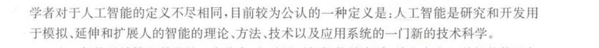
依据位置 上图是定位示意，阅读以上方原文为准 点击可放大 查看整页（整页里红框标出同一位置）
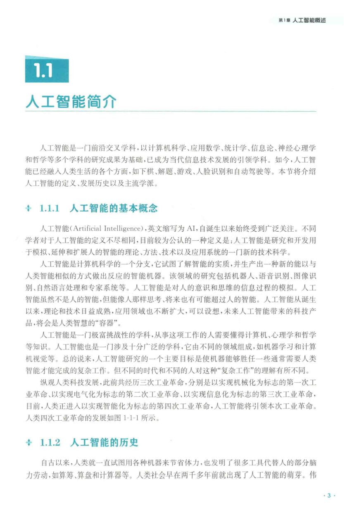
大学信息技术4—人工智能基础与实践（第四版） · PDF p.16 整页 点击可放大
- 命题说明
- 改编自 §1.1.4 节末简答题第 1 题「请简述什么是人工智能」。教材未给参考答案，本题答案依据同节正文推导。
教材把人工智能的发展分为形成期、突破期、发展期、高速发展期。下列阶段与标志性事件的对应，正确的是________。
- A形成期——以专家系统为代表的人工智能技术逐渐取得突破
- B突破期——以 LISP 语言和机器定理证明等经典技术的出现为标志
- C发展期——实现 BP 网络，2006 年深度学习被提出
- D高速发展期——提出「知识工程」概念，专家系统 XCON 诞生
看答案与解析
- 解题步骤
- 先在草稿上按教材顺序排出四期：形成期（50 年代，图灵测试＋达特茅斯＋LISP）→ 突破期（1975 后，BP 算法＋第五代计算机＋专家系统）→ 发展期（1986 后，BP 网络＋2006 深度学习）→ 高速发展期（2010 后，移动互联网＋2012 语音视觉突破）。
- 逐项把选项里的「标志」往这张表上贴，贴错位置即判错。
- 注意 A、B 两项是互换陷阱：形成期与突破期的标志最容易被对调，这是命题人常用的手法。
- C 项两个事件（BP 网络 1986、深度学习 2006）同属发展期，教材原文连在一段，可直接确认。
- 易错点
- 把形成期与突破期的标志对调。记法：先有语言与定理证明（形成），后有专家系统（突破）。
- 以为「深度学习提出」属高速发展期。2006 年是提出，2012 年才是应用突破，二者分属不同阶段。
- 把图 1-1-4 时间轴上的单个事件年份当成阶段起点。
- 作答程序
- 发展史题一律先画四格时间轴，再把事件填进去，不要凭印象直接选。
- 记住两个易混年份：2006 提出深度学习（发展期），2012 深度学习应用突破（高速发展期）。
- 看到「专家系统」先想突破期，看到「LISP／机器定理证明」先想形成期。
- 教材依据（原文 + 书页）
- 教材依据书内 p.6PDF p.19§1.1.2 人工智能的历史 · 人工智能的发展历程原文四阶段：（1）形成期「随着上世纪 50 年代『图灵测试』的提出及达特茅斯会议的召开，以计算机程序设计（LISP）语言和机器定理证明等为代表的经典技术的出现，标志着人工智能的形成」；（2）突破期「1975 年后……以专家系统为代表的人工智能技术逐渐取得突破」；（3）发展期「1986 年后，实现 BP 网络……2006 年，深度学习被提出」；（4）高速发展期「2010 年，移动互联网获得发展……2012 年，深度学习算法在语音和视觉识别上实现突破」。— 大学信息技术4—人工智能基础与实践（第四版） · §1.1.2 人工智能的历史 · 人工智能的发展历程
查看整页（整页里红框标出同一位置）
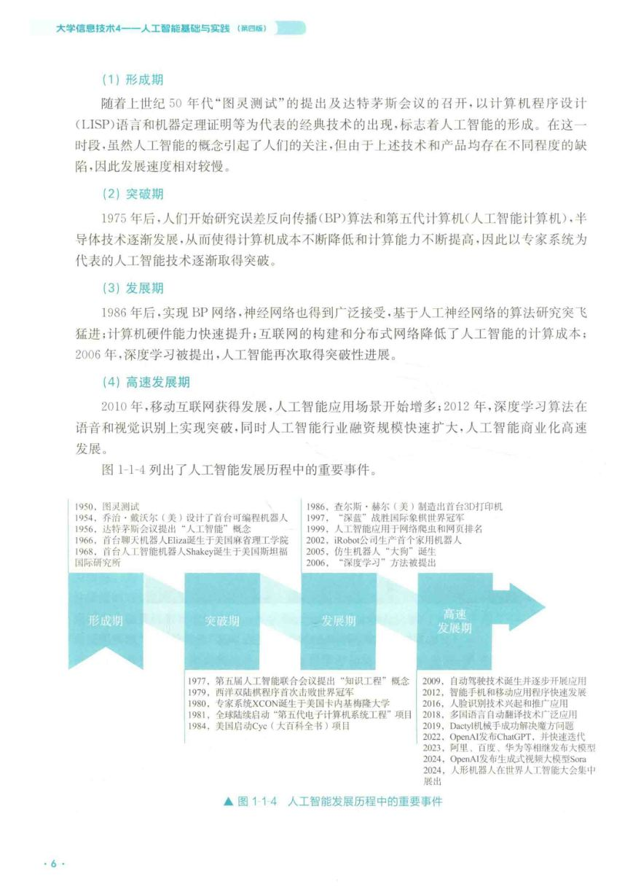
大学信息技术4—人工智能基础与实践（第四版） · PDF p.19 整页 点击可放大
- 命题说明
- 改编自 §1.1.4 节末简答题第 2 题「请简述人工智能的发展历史」。教材未给参考答案，答案依据 §1.1.2 正文与图 1-1-4 推导。
关于人工智能三大流派，下列说法正确的有________。
- A符号主义又称逻辑主义，代表性成果是启发式程序「逻辑理论家」，它证明了 38 条数学定理
- B连接主义源于仿生学，其理论基础是 1943 年麦卡洛克和皮茨创立的脑模型（MP 模型）
- C行为主义认为智能是系统与环境的交互行为，典型方法是反馈控制模式和广义遗传算法
- D三大流派中符号主义长期一枝独秀，直到 20 世纪 80 年代后仍是人工智能的主流派别
看答案与解析
- 解题步骤
- 按「学派—别名—原理—代表成果」四列表格回忆三家，逐项对照。
- A 项查两个细节：别名是否为逻辑主义、代表程序是否为逻辑理论家且证明 38 条定理——均与教材一致。
- B 项查年份与人物：1943、麦卡洛克、皮茨、MP 模型，四项全对则可留。
- C 项查「智能是什么」与「典型方法」：交互行为＋反馈控制＋广义遗传算法，全对。
- D 项做「程度词审查」：把「主流」与「一枝独秀」区分开，再看转折句是否有支持，发现与原文相反，判错。
- 易错点
- 只看到 D 前半句正确就整项选上，忽略后半句的偷换。
- 把「连接主义」与「行为主义」的代表成果记混：遗传算法属行为主义，神经网络与深度学习属连接主义。
- 误以为符号主义已被淘汰。教材明确其在其他学派出现后仍是主流派别，只是遇到常识问题障碍。
- 作答程序
- 三流派一律用四列表格记：学派／别名／核心主张／代表成果。
- 多选题逐项独立判断，任一半句错即整项错。
- 遇到「长期一枝独秀」「仍然主导」这类程度表述，回原文找转折句。
- 教材依据（原文 + 书页）
- 教材依据书内 p.7–p.9PDF p.20–p.22§1.1.3 人工智能的学派「符号主义（Symbolicism），又称为逻辑主义（Logicism）、心理学派（Psychologism）或计算机学派（Computerism），其原理主要为物理符号系统（即符号操作系统）假设和有限合理性原理。」「其代表性成果为启发式程序：逻辑理论家（LogicTheorist，LT），它证明了38条数学定理」「连接主义（Connectionism），又称为联结主义、仿生学派（Bionicsism）或生理学派（Physiologism），其主要原理为神经网络及神经网络间的连接机制与学习算法。」「其理论基础源于1943年由生理学家麦卡洛克（McCulloch）和数理逻辑学家皮茨（Pitts）创立的脑模型，即MP模型」「行为主义（Actionism），又称为进化主义（Evolutionism）或控制论学派（Cyberneticsism），其原理为控制论及感知一动作型控制系统。」（引号内取自教材 OCR 文本。OCR 明显误识的字，我在个别处按语义改成了正字——例如「输人」→输入、「植人」→植入、「十」→＋、「X」→×；你逐字比对时若发现这类一两字不同，就是此故，不是改写内容。）— 大学信息技术4—人工智能基础与实践（第四版） · §1.1.3 人工智能的学派
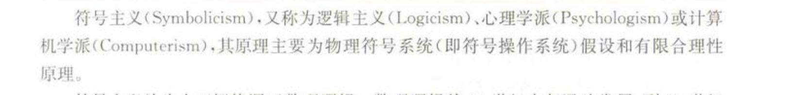
依据位置 上图是定位示意，阅读以上方原文为准 点击可放大 查看整页（整页里红框标出同一位置）
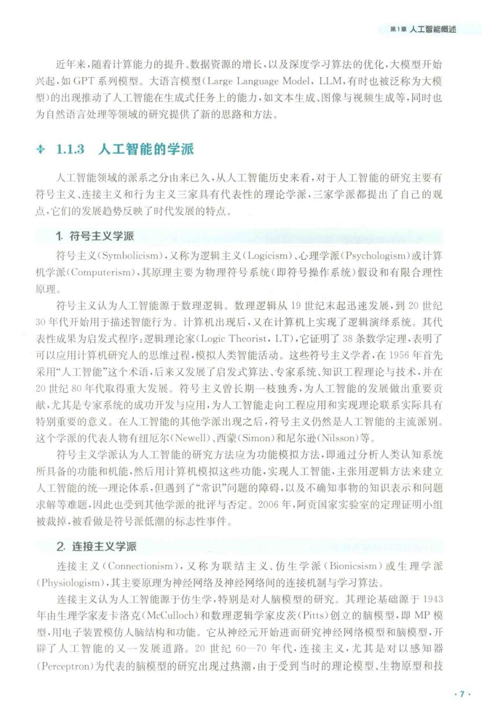
大学信息技术4—人工智能基础与实践（第四版） · PDF p.20–p.22 整页 点击可放大
- 命题说明
- 改编自 §1.1.4 节末简答题第 3 题「三大人工智能学派的认知观分别是什么？他们各自的代表性研究成果是什么？」。教材未给参考答案，答案依据 §1.1.3 正文推导。
有学者认为达特茅斯会议标志着人工智能的诞生，因此麦卡锡才是真正的「人工智能之父」。按教材的叙述，下列判断正确的是________。
- A图灵因 1950 年发表《计算机与智能》并提出图灵测试，被后人誉为「人工智能之父」；达特茅斯会议于 1956 年首次提出「人工智能」术语，标志人工智能诞生
- B麦卡锡首次提出「人工智能」术语，因此图灵测试与人工智能的诞生无关
- C图灵测试要求机器在所有提问中都让测试者无法分辨，才算通过
- D达特茅斯会议解决了一系列具体问题，因此确立了人工智能的学科地位
看答案与解析
- 解题步骤
- 先厘清题干在问什么：不是「谁是父亲」的立场题，而是「教材怎么叙述」的事实题。
- 调出两个关键事实：图灵 1950 年论文与图灵测试、1956 年达特茅斯会议首提术语并标志诞生。
- 逐项验数：C 项的 30% 是硬数字，必须精确；D 项的「解决具体问题」是教材明确否定的表述。
- B 项属「半对半错」型干扰，前半句成立不能救后半句，判错。
- 易错点
- 把「人工智能之父」当成唯一称号。教材中图灵因图灵测试获此誉，麦卡锡则因提出术语、发起会议成为学科奠基人，二者并不互斥。
- 记错图灵测试的判定比例：30% 参与者误判，不是 50%，更不是全部。
- 误以为达特茅斯会议有具体成果。教材特意强调「并未解决任何具体问题」。
- 作答程序
- 「父亲是谁」这类题改为事实核对题：谁在哪一年做了什么，逐条对表。
- 凡出现百分比的选项，一律回原文核数字。
- 教材用「尽管……但……」句式的地方是命题富矿，转折前后各出一个干扰项。
- 教材依据（原文 + 书页）
- 教材依据书内 p.4–p.5PDF p.17–p.18§1.1.2 人工智能的历史 · 图灵测试 / 达特茅斯会议原文：「如果机器让平均超过 30% 的参与者做出误判，不能辨别出其机器身份，那么这台机器就通过了测试」「图灵测试是人工智能哲学方面第一个严肃提案，图灵也因此被后人誉为『人工智能之父』」；「1956 年……在美国达特茅斯学院召开了一次为期两个月的『人工智能夏季研讨会』……并首次提出人工智能的术语」「尽管达特茅斯会议并未解决任何具体问题，但它实质上确立了一些目标和技术方法」。— 大学信息技术4—人工智能基础与实践（第四版） · §1.1.2 人工智能的历史 · 图灵测试 / 达特茅斯会议
查看整页（整页里红框标出同一位置）
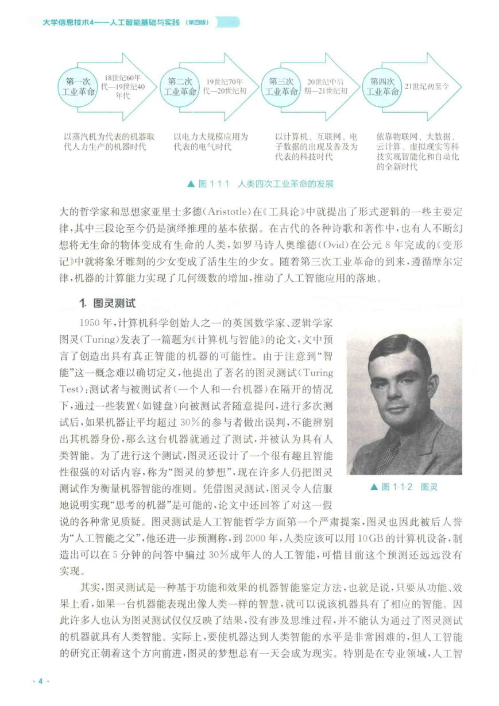
大学信息技术4—人工智能基础与实践（第四版） · PDF p.17–p.18 整页 点击可放大
- 命题说明
- 改编自 §1.1.4 节末思考题第 1 题（关于麦卡锡与「人工智能之父」的讨论）。原题为开放讨论，本题改为教材事实判定，不涉及学术立场。
教材认为人类正进入第四次工业革命，其标志是________。
- A机械化
- B电气化
- C信息化
- D智能化
看答案与解析
- 解题步骤
- 把四次工业革命与四个标志连成一条线：机械化→电气化→信息化→智能化。
- 按顺序数：一机械、二电气、三信息、四智能，第四次即智能化。
- 若记不清，用教材对第四次工业革命的支撑技术反推：物联网、大数据、云计算、虚拟现实都服务于智能化与自动化。
- 锁定 D。
- 易错点
- 把「信息化」当成当前阶段：第三次工业革命才是信息化，当前已进入第四次。
- 记成「数字化」。教材用词是「智能化」，数字化只是实现手段之一。
- 作答程序
- 工业革命四标志按序背诵：机械化、电气化、信息化、智能化。
- 凡是问「当前第几次、标志是什么」，答案必然是第四次＋智能化。
- 记住「人工智能将引领本次工业革命」这句定位句，可用于判断题。
- 教材依据（原文 + 书页）
- 教材依据书内 p.3–p.4PDF p.16–p.17§1.1.1 人工智能的基本概念原文：「纵观人类科技发展，此前共经历三次工业革命，分别是以实现机械化为标志的第一次工业革命、以实现电气化为标志的第二次工业革命、以实现信息化为标志的第三次工业革命，目前，人类正进入以实现智能化为标志的第四次工业革命，人工智能将引领本次工业革命。」图 1-1-1 给出四阶段时间与支撑技术。— 大学信息技术4—人工智能基础与实践（第四版） · §1.1.1 人工智能的基本概念
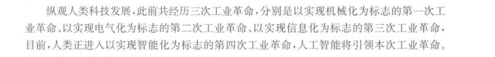
依据位置 上图是定位示意，阅读以上方原文为准 点击可放大
- 命题说明
- 这是教材补充题，不是节末原题。§1.1.4 节末思考题第（3）题原文是「人工智能与物联网、大数据、虚拟现实等技术如何互相促进？」，属开放论述，无法做成客观题。本题改取同节 §1.1.1 的定性表述命题（原话：目前人类正进入以实现智能化为标志的第四次工业革命）。
关于知识工程，下列说法错误的是________。
- A知识工程是在计算机上建立专家系统的技术
- B费根鲍姆把知识工程定义为「将知识集成到计算机系统从而完成只有特定领域专家才能完成的复杂任务」
- C知识工程包括知识表示、知识获取、知识推理、知识集成和知识存储等活动
- D「知识工程」概念由明斯基在 1956 年达特茅斯会议上首次提出
看答案与解析
- 解题步骤
- 题干问「错误的是」，逐项验真，找出唯一假项。
- A、B、C 三项都能在 §1.2.1 找到原句，先全部标真。
- D 项查时间与人物：知识工程＝1977 年＋第五届 IJCAI，不是 1956 年＋明斯基，判错。
- 回看时间轴图 1-1-4 交叉验证，确认 1977 这条独立存在。
- 易错点
- 把「达特茅斯会议」当成万能起点，任何概念都往 1956 年挂。知识工程、深度学习、专家系统 XCON 都有各自年份。
- 混淆「知识工程」与「知识图谱」：后者是综合模块的考点，不是本节内容。
- 以为知识工程只做知识表示，忽略其余四项活动。
- 作答程序
- 概念题优先核「谁、哪年、在哪提出」三要素。
- 把图 1-1-4 时间轴上的年份当独立知识点记：1977 知识工程、1980 XCON、2006 深度学习、2012 深度学习应用突破。
- 五活动用口诀记：「表示、获取、推理、集成、存储」。
- 教材依据（原文 + 书页）
- 教材依据书内 p.10PDF p.23§1.2 人工智能研究内容 · §1.2.1 知识工程原文：「知识工程（Knowledge Engineering）是在计算机上建立专家系统的技术。图灵奖获得者、知识工程的建立者费根鲍姆（Feigenbaum）将知识工程定义为：将知识集成到计算机系统从而完成只有特定领域专家才能完成的复杂任务。知识工程包括知识表示、知识获取、知识推理、知识集成和知识存储等多个活动。」图 1-1-4 时间轴：「1977，第五届人工智能联合会议提出『知识工程』概念」。— 大学信息技术4—人工智能基础与实践（第四版） · §1.2 人工智能研究内容 · §1.2.1 知识工程
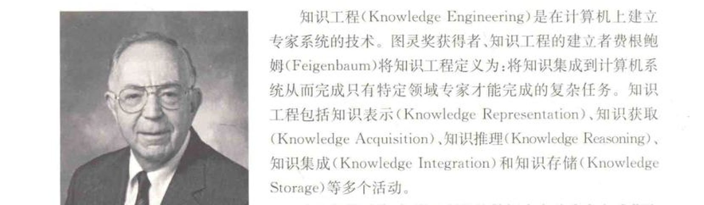
依据位置 上图是定位示意，阅读以上方原文为准 点击可放大 查看整页（整页里红框标出同一位置）
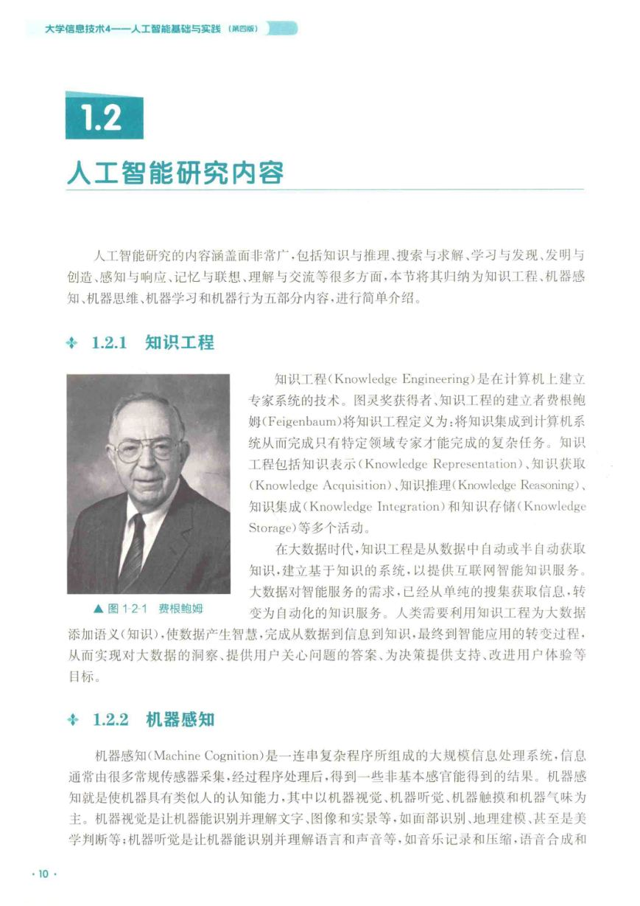
大学信息技术4—人工智能基础与实践（第四版） · PDF p.23 整页 点击可放大
- 命题说明
- 改编自 §1.2.6 节末简答题第 1 题「什么是知识工程？」。教材未给参考答案，答案依据 §1.2.1 正文与图 1-1-4 推导。
教材把机器学习的发展分为三个阶段。下列说法正确的是________。
- A第一阶段（20 世纪 50 年代中期至 70 年代中期）主要用符号表示机器语言，代表性研究是塞缪尔的下棋程序
- B第二阶段以深度学习的实际应用为主要标志
- C第三阶段始于 2006 年深度学习的提出
- D第一阶段就已把学习系统与各种应用结合起来并取得很大成功
看答案与解析
- 解题步骤
- 列三阶段表：50 中—70 中（符号表示、塞缪尔下棋）→ 70 中—80 初（多概念、示例归纳、自动知识获取、与应用结合）→ 80 年代起（成为独立学科、1980 首届国际研讨会、1984 文集与期刊）。
- A 项逐词核对：时间、符号表示、塞缪尔下棋程序，三项全对。
- B、D 两项是「阶段—特征」错位陷阱，把第二阶段特征安到第一或第二阶段之外。
- C 项把第三阶段起点后移到 2006 年，与「始于 20 世纪 80 年代」冲突，判错。
- 易错点
- 把 2006 年深度学习当成机器学习第三阶段的起点。第三阶段始于 80 年代，深度学习属该阶段内的后续突破。
- 混淆「第一阶段」与「第二阶段」的代表工作：塞缪尔下棋属一阶段，指导式学习、类比学习、解释学习属二阶段。
- 记成「三阶段按十年等分」。教材的分界是 70 年代中期与 80 年代，并不均匀。
- 作答程序
- 机器学习史题按「时间—主流方法—代表工作」三列做表。
- 记住三个锚点：塞缪尔下棋（一阶段）、示例归纳学习（二阶段）、1980 首届国际研讨会（三阶段起点）。
- 凡选项给出年份区间，先与教材区间对齐再判断内容。
- 教材依据（原文 + 书页）
- 教材依据书内 p.12PDF p.25§1.2.4 机器学习 · 1.机器学习的发展原文：「第一阶段从 20 世纪 50 年代中期到 70 年代中期，主要用各种符号来表示机器语言……最具有代表性的研究就是塞缪尔（Samuel）的下棋程序。」「第二阶段从 20 世纪 70 年代中期到 80 年代初……示例归纳学习系统成为研究的主流，自动知识获取成为机器学习应用的研究目标……已开始把学习系统与各种应用结合起来，并取得很大的成功。」「第三阶段始于 20 世纪 80 年代……1980 年，在美国卡内基梅隆召开了第一届机器学习国际研讨会，标志着机器学习研究已在全世界兴起。」— 大学信息技术4—人工智能基础与实践（第四版） · §1.2.4 机器学习 · 1.机器学习的发展
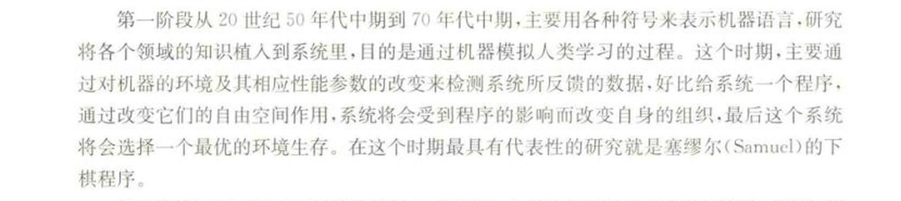
依据位置 上图是定位示意，阅读以上方原文为准 点击可放大 查看整页（整页里红框标出同一位置）
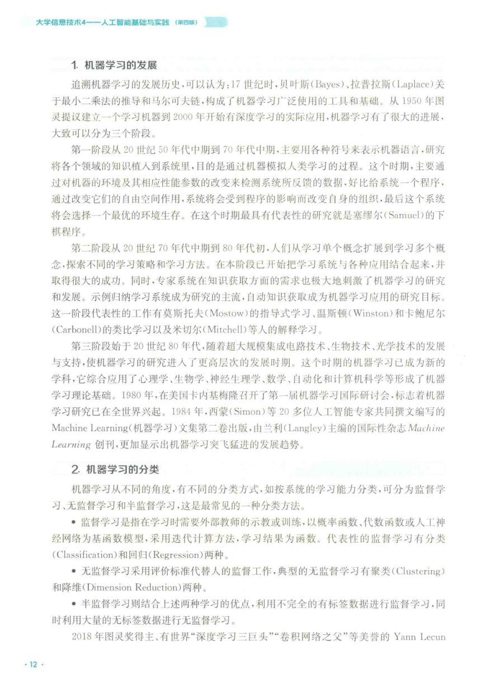
大学信息技术4—人工智能基础与实践（第四版） · PDF p.25 整页 点击可放大
- 命题说明
- 改编自 §1.2.6 节末简答题第 2 题「不同时期机器学习有哪些研究方向或内容？」。教材未给参考答案，答案依据 §1.2.4 正文推导。
关于云端人工智能的三种部署方式，下列说法错误的是________。
- A公有云成本低廉且使用方便，但存在数据泄露风险
- B私有云把服务器独立提供给指定客户使用，安全性高，但初期投入较高且部署时间较长
- C混合云把不敏感数据放在公有云处理，用户私有数据本地化存储
- D通常所说的云端人工智能指的是私有云
看答案与解析
- 解题步骤
- 把三种云按「数据在哪、谁维护、成本、风险」四列列表。
- A、B、C 三项分别对应公有云、私有云、混合云的教材原句，逐项确认为真。
- D 项只考一句「通常指的就是公有云」，属记忆点，判错。
- 注意题干问「错误」，答案应选唯一假项 D。
- 易错点
- 把「云端人工智能」默认理解为私有云。业界和教材都指公有云。
- 混淆混合云的定位：它解决的是「没钱搭私有云但又怕数据外泄」的用户。
- 只记成本不记风险，把公有云说成「安全可控」。
- 作答程序
- 三云对比用四列：部署位置／成本／安全／适用对象。
- 记住一句定位：公有云＝主流默认，私有云＝安全优先，混合云＝折中。
- 本题型常把「通常指」的对象互换，看到「通常所说的 X 指的是 Y」要格外小心。
- 教材依据（原文 + 书页）
- 教材依据书内 p.23PDF p.36§1.3 人工智能应用 · 1.3.11 云端人工智能原文：「根据部署方式不同，云端人工智能可分为三种不同类型：公有云、私有云和混合云……公有云是将服务全部存放于公共云服务器上，用户无需购买软件和硬件设备，可直接调用云端服务，通常我们谈到的云端人工智能指的就是公有云。这种部署方式成本低廉且使用方便，但存在数据泄露风险。私有云是服务器独立提供给指定客户使用……初期投入较高且部署时间较长。混合云是将不敏感的数据放在公有云服务器上处理，用户私有数据本地化存储。」— 大学信息技术4—人工智能基础与实践（第四版） · §1.3 人工智能应用 · 1.3.11 云端人工智能
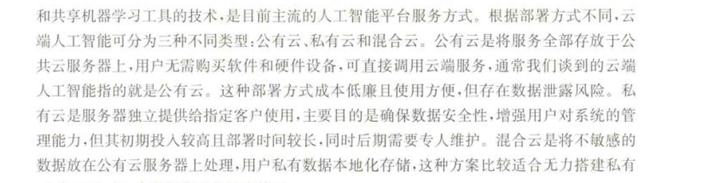
依据位置 上图是定位示意，阅读以上方原文为准 点击可放大 查看整页（整页里红框标出同一位置）
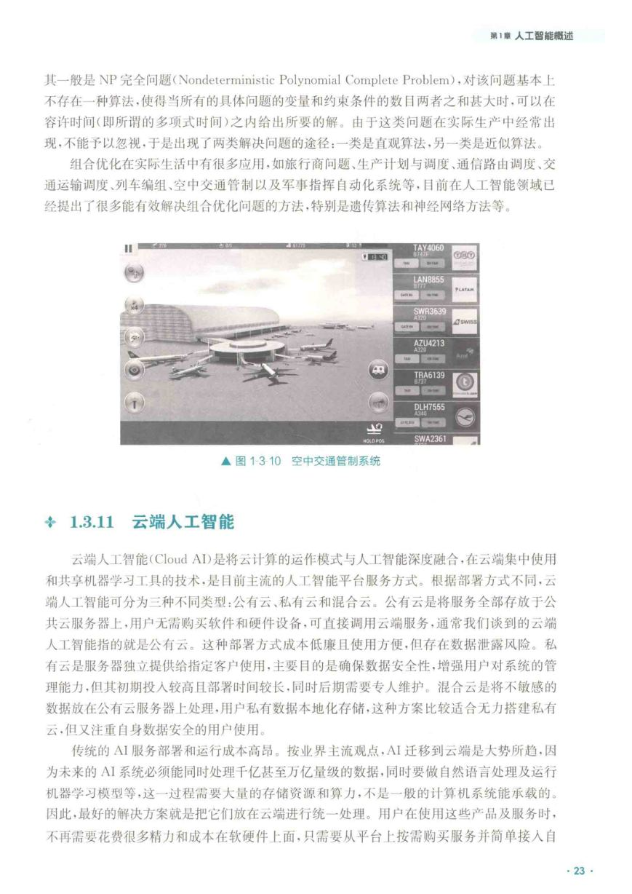
大学信息技术4—人工智能基础与实践（第四版） · PDF p.36 整页 点击可放大
- 命题说明
- 这是教材补充题，不是节末原题。§1.3.12 节末简答题第（1）题原文是「结合生活实际，你认为现实生活中人工智能有哪些成熟应用？」，属开放举例，无法判分。本题改取同节 §1.3.11 云端人工智能三种部署方式（公有云、私有云、混合云）的可判分知识点命题。
关于智能计算系统的组成，下列说法正确的有________。
- A硬件部分一般采用异构系统，即 CPU 加智能芯片（GPU、TPU 或寒武纪深度学习处理器等）
- B软件部分的编程环境包括前端编程语言、深度学习框架和编程平台三部分
- CCUDA、OpenCL 属于编程平台，TensorFlow、Caffe、PyTorch 属于深度学习框架
- D在异构系统中 CPU 主要负责矩阵运算等数值计算，其能效比高于智能芯片
看答案与解析
- 解题步骤
- 用教材图 1-4-1 的结构回忆：软件部分（前端编程语言／深度学习框架／编程平台）＋硬件部分（异构系统 CPU＋智能芯片）。
- A 项核「异构」与芯片举例，全对。
- B 项核三部分名称，全对；C 项把六种工具归类，CUDA/OpenCL 是平台，TensorFlow/Caffe/PyTorch 是框架，全对。
- D 项核 CPU 与智能芯片的分工：通才 vs 专才、通用计算 vs 数值计算、能效比低 vs 高，故 D 错。
- 易错点
- 把 CUDA 当成深度学习框架。CUDA 是并行计算平台与编程模型，不是框架。
- 以为 CPU 也能高效做深度学习矩阵运算。CPU 能做，但能效比不如专用芯片。
- 漏选 B：只记住「软硬件两部分」，忘记编程环境的三层结构。
- 作答程序
- 结构题按图 1-4-1 画树状图：软件三件套、硬件一异构。
- 工具归类记两组：框架＝TensorFlow/Caffe/PyTorch；平台＝CUDA/OpenCL。
- CPU 与智能芯片的分工记「通才 vs 专才」四个字即可判所有互换项。
- 教材依据（原文 + 书页）
- 教材依据书内 p.26PDF p.39§1.4 智能计算系统 · §1.4.1 智能计算系统的组成原文：「智能计算系统的硬件部分一般采用异构系统，即 CPU＋智能芯片，这些智能芯片可以是图形处理单元（GPU）、张量处理单元（TPU）或者寒武纪深度学习处理器等。CPU 就像一位『通才』，主要负责通用的计算……智能芯片更像一位『专才』，专门用于人工智能算法的计算，例如矩阵计算等，具有强大的数值计算能力，且能效比较高。」「编程环境主要包括了前端编程语言、深度学习框架和编程平台三部分……深度学习框架包括 TensorFlow、Caffe 和 Pytorch 等，编程平台包括 CUDA、OpenCL 等。」— 大学信息技术4—人工智能基础与实践（第四版） · §1.4 智能计算系统 · §1.4.1 智能计算系统的组成
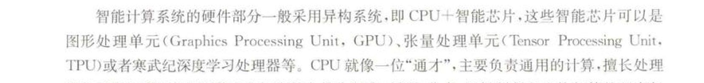
依据位置 上图是定位示意，阅读以上方原文为准 点击可放大 查看整页（整页里红框标出同一位置）
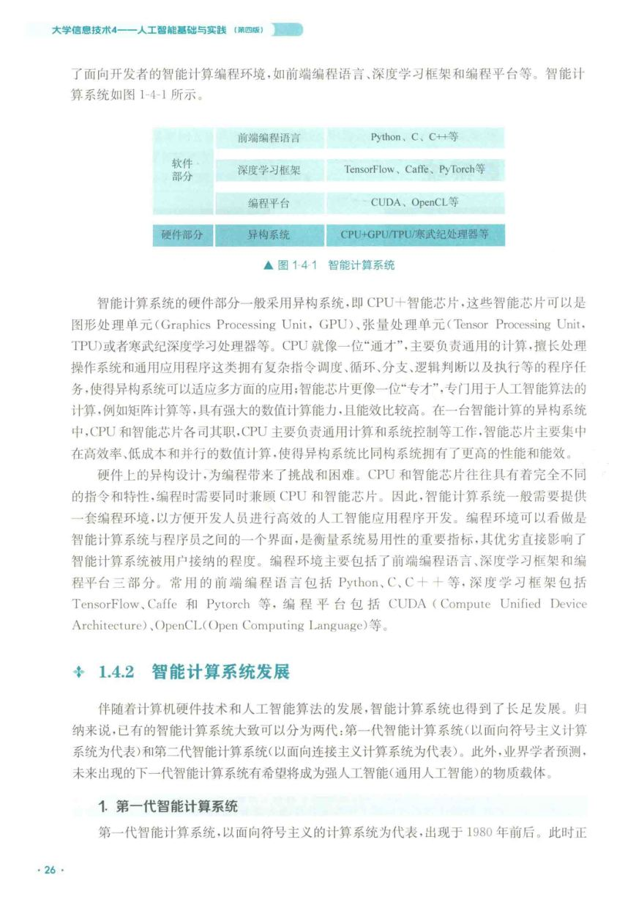
大学信息技术4—人工智能基础与实践（第四版） · PDF p.39 整页 点击可放大
- 命题说明
- 改编自 §1.4.3 节末简答题第 1 题「请简述智能计算系统包括哪些部分」。教材未给参考答案，答案依据 §1.4.1 正文与图 1-4-1 推导。
关于智能计算系统的发展，下列说法正确的是________。
- A第一代智能计算系统以面向符号主义的计算系统为代表，主流智能编程语言是 Prolog 和 LISP
- B第一代智能计算系统以面向连接主义的计算系统为代表，出现于 1980 年前后
- C第二代智能计算系统自 1990 年前后发展至今，主要用于符号推理
- D业界已确认下一代智能计算系统将实现强人工智能
看答案与解析
- 解题步骤
- 记两代对应关系：一代＝符号主义（Prolog/LISP，1980 前后）；二代＝连接主义（深度学习，2010 前后）。
- A 项两要素（主义、语言）全对；B 项主义错；C 项年份与用途双错。
- D 项做「语气审查」：教材是预测，选项改成确定，属常见偷换。
- 锁定 A。
- 易错点
- 把 Prolog/LISP 记成第二代语言。它们是第一代符号主义系统的语言，LISP 前面章节也出现在形成期。
- 把「有希望成为」读成「已经成为」或「将实现」。
- 记错第二代起点：是 2010 年前后（第三次热潮），不是 1990 年。
- 作答程序
- 两代系统记成一句：「符号一代用 LISP，连接二代靠 GPU」。
- 凡是「预测、有希望、可能」的表述，选项若改成断言即错。
- 年份锚点：一代 1980 前后、二代 2010 前后、GPU 概念 1999、TPU 2015。
- 教材依据（原文 + 书页）
- 教材依据书内 p.26–p.28PDF p.39–p.41§1.4.2 智能计算系统发展原文：「第一代智能计算系统，以面向符号主义的计算系统为代表，出现于 1980 年前后……主流的智能编程语言是 Prolog 和 LISP。」「第二代智能计算系统，以面向连接主义的计算系统为代表，自 2010 年前后发展至今……主要用于深度学习。」「业界学者预测，未来出现的下一代智能计算系统有希望将成为强人工智能（通用人工智能）的物质载体。」— 大学信息技术4—人工智能基础与实践（第四版） · §1.4.2 智能计算系统发展
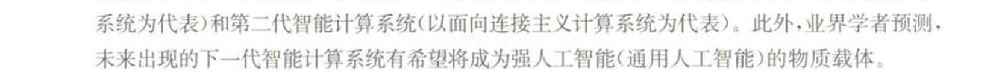
依据位置 上图是定位示意，阅读以上方原文为准 点击可放大
- 命题说明
- 改编自 §1.4.3 节末简答题第 2 题「请简述智能计算系统的历史与展望」。教材未给参考答案，答案依据 §1.4.2 正文推导。
教材实践要求检查个人计算机的 GPU 是否支持 CUDA。按该实践的判定方法，下列显卡中可能支持 CUDA 的是________。
- ANVIDIA（英伟达）公司的显卡
- BIntel 集成显卡
- CAMD 公司的显卡
- D任何独立显卡均支持
看答案与解析
- 解题步骤
- 定位教材判定规则：先看 GPU 型号，判断是否为 NVIDIA 产品，不是则不支持 CUDA。
- 按厂商筛选选项：NVIDIA 通过，Intel、AMD 淘汰。
- 排除形态混淆项 D：独立／集成与 CUDA 支持无必然关系。
- 锁定 A。
- 易错点
- 以为只要装了独立显卡就能跑 CUDA。厂商是硬门槛。
- 把 CUDA 当成跨厂商通用标准。它是英伟达的并行计算平台。
- 忽略「集成显卡也可能是 NVIDIA」这一少见情况——判据始终是厂商与型号，不是形态。
- 作答程序
- CUDA 三连问：谁家的卡（NVIDIA）／型号是否在支持列表／驱动与 CUDA 版本是否匹配。
- 教材实践类题目常把「判定条件」当考点，记住原句「不是 NVIDIA 则不支持」。
- 遇到「任何…均…」的选项直接判错。
- 教材依据（原文 + 书页）
- 教材依据书内 p.29PDF p.42§1.4.3 习题与实践 · 实践题实践题原文：「请检查你的个人计算机的 GPU 是否支持 CUDA。实验步骤提示：·进入『设备管理器』，如图 1-4-4 所示，检查并记录下 GPU 型号；如果不是 NVIDIA（英伟达）公司产品，则不支持 CUDA，如果是，则继续后续步骤。」— 大学信息技术4—人工智能基础与实践（第四版） · §1.4.3 习题与实践 · 实践题

依据位置 上图是定位示意，阅读以上方原文为准 点击可放大 查看整页（整页里红框标出同一位置）
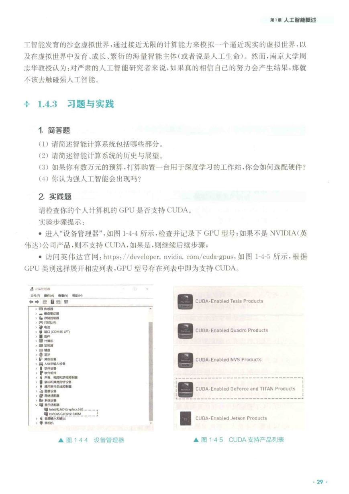
大学信息技术4—人工智能基础与实践（第四版） · PDF p.42 整页 点击可放大
- 命题说明
- 改编自 §1.4.3 节末实践题第 1 题。原题为动手操作，本题取其实验步骤中的判定条件命题；CUDA 属英伟达专有平台的背景知识为通用事实，教材同节亦说明编程平台包括 CUDA。
某三甲医院要把包含患者病历与影像的 AI 辅助诊断系统上云，院方最看重数据不出院、且有能力自建机房并配专人运维。按教材对云端人工智能三种部署方式的划分，最合适的是________。
- A私有云：服务器独立提供给指定客户使用，主要目的是确保数据安全性，增强用户对系统的管理能力
- B公有云：服务全部存放于公共云服务器上，用户无需购买软硬件，成本最低
- C混合云：把不敏感数据放公有云、私有数据本地存，适合无力搭建私有云的用户
- D不需要云：单机版软件即可满足 AI 辅助诊断的全部算力需求
看答案与解析
- 解题步骤
- 提取题干三个约束：数据不出院（安全性）、能自建机房（有投入能力）、有专人运维（有运维能力）。
- 对照教材三类云的定义与适用对象：公有云=便宜但有泄露风险；私有云=安全但要投钱投人；混合云=没钱自建但又要安全。
- 三个约束全部指向私有云。
- 锁定 A。
- 易错点
- 看到「上云」就选公有云，忽略「数据不出院」这一硬约束。
- 把混合云的适用对象记成「有钱的大单位」，实际教材写的是「无力搭建私有云」的用户。
- 忽略私有云的代价（初期投入高、部署周期长、需专人维护），只记住「安全」二字。
- 作答程序
- 三类云一句话判别：要便宜→公有云；要安全且养得起→私有云；要安全但养不起→混合云。
- 答题时把题干的形容词逐个映射到教材原句，能对上三条以上基本就是它。
- 教材的「自来水」比喻可用于理解公有云：按需购买、按量计费、打开龙头即用。
- 教材依据（原文 + 书页）
- 教材依据书内 p.23PDF p.36§1.3.11 云端人工智能原文：「根据部署方式不同，云端人工智能可分为三种不同类型：公有云、私有云和混合云。公有云……成本低廉且使用方便，但存在数据泄露风险。私有云是服务器独立提供给指定客户使用，主要目的是确保数据安全性，增强用户对系统的管理能力，但其初期投入较高且部署时间较长，同时后期需要专人维护。混合云……比较适合无力搭建私有云，但又注重自身数据安全的用户使用。」— 大学信息技术4—人工智能基础与实践（第四版） · §1.3.11 云端人工智能
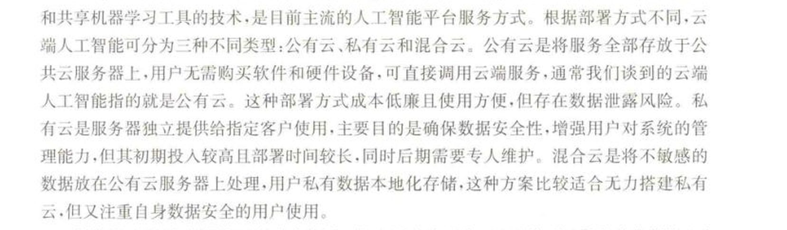
依据位置 上图是定位示意，阅读以上方原文为准 点击可放大
- 命题说明
- 改编自 §1.3.12 节末实践题第 1 题「请选择一个互联网企业，调查了解这个企业提供的云端人工智能系统，向大家介绍它是什么类型？能提供哪些服务？有什么特色？」。原题是开放性调研题、无法判分，本题把「判断云类型」这一可客观化的核心考点抽出，改造成情境单选。原题的调研部分（服务清单、特色）保留在你自己的作业里做。
按教材给出的 CUDA 检查步骤，下列判断链条正确的是________。
- A先进「设备管理器」记录 GPU 型号；不是 NVIDIA 产品即不支持 CUDA；是 NVIDIA 产品则到官网 cuda-gpus 列表核对型号，型号在列表中即支持
- B直接运行任何 Python 程序，能跑通就说明支持 CUDA
- C只要显卡是独立显卡就一定支持 CUDA，无需核对型号
- D在设备管理器里看到显卡有显存就支持 CUDA，品牌不限
看答案与解析
- 解题步骤
- 第一步看厂商：设备管理器 → 显示适配器 → 记录型号。非 NVIDIA 直接判不支持。
- 第二步看型号：NVIDIA 官网 developer.nvidia.com/cuda-gpus，按 GPU 类别展开列表比对。
- 型号在列表中→支持；不在→不支持。
- 对照选项，只有 A 完整复现这两步。
- 易错点
- 把「独立显卡」等同于「支持 CUDA」——AMD/Intel 独显不支持。
- 跳过厂商判断直接查列表，白费功夫。
- 用「程序能不能跑」替代硬件核对，把软件兼容性与硬件支持混为一谈。
- 作答程序
- CUDA 判定的两道闸：厂商（必须 NVIDIA）→ 型号（必须在官方列表）。
- 记住这是「查表」而非「测试」：官方列表是唯一权威，跑分和跑程序都不算。
- 实操顺序：Win+X → 设备管理器 → 显示适配器，右键属性可看更详细型号。
- 教材依据（原文 + 书页）
- 教材依据书内 p.29PDF p.42§1.4.3 习题与实践（实践题）原文实验步骤提示：「进入『设备管理器』，如图 1-4-4 所示，检查并记录下 GPU 型号；如果不是 NVIDIA（英伟达）公司产品，则不支持 CUDA，如果是，则继续后续步骤；访问英伟达官网：https://developer.nvidia.com/cuda-gpus，如图 1-4-5 所示，根据 GPU 类别选择展开相应列表，GPU 型号存在列表中即为支持 CUDA。」— 大学信息技术4—人工智能基础与实践（第四版） · §1.4.3 习题与实践（实践题）
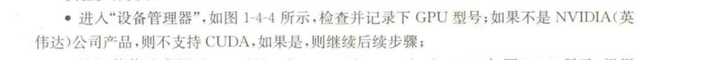
依据位置 上图是定位示意，阅读以上方原文为准 点击可放大
- 命题说明
- 改编自 §1.4.3 节末实践题第 1 题「请检查你的个人计算机的 GPU 是否支持 CUDA」。原题是上机操作题，本题把教材给的判定链条做成顺序判断，考「先厂商后型号」这一逻辑；操作本身仍需你在自己机器上做一遍。
教材在讲云端人工智能时，点名的国内主要云服务商包括________。
- A阿里云
- B华为云
- C腾讯云
- D百度云
看答案与解析
- 解题步骤
- 定位 §1.3.11 末段，教材列举四家：阿里云、华为云、腾讯云、百度云。
- 四项逐一命中，且教材确实为后三家各配了图（华为 ModelArts、腾讯 AI 体验中心、百度 AI 体验中心）。
- 答案 ABCD。
- 易错点
- 只记住华为云（因为第 2 章详讲），漏掉另外三家。
- 把亚马逊 AWS、微软 Azure 填进来——教材此句说的是「国内」云服务商。
- 把「腾讯扣叮」「百度飞桨」当成云服务商名称（它们是平台/框架，不是云品牌）。
- 作答程序
- 四家按「阿华腾百」记，正好覆盖国内云市场第一梯队。
- 教材第 2 章的三个体验平台对应关系要清楚：华为→ModelArts 自动学习，腾讯→扣叮 AI 实验室，百度/腾讯→微信小程序 AI 体验中心。
- 这类「教材点名列举」的题，答案通常是全选，别自己加戏删项。
- 教材依据（原文 + 书页）
- 教材依据书内 p.24PDF p.37§1.3.11 云端人工智能（末段）原文：「目前，国内著名的云服务商主要有阿里云、华为云、腾讯云和百度云等，图 1-3-11 和图 1-3-12 分别是百度和腾讯在微信小程序端的『AI 体验中心』。」— 大学信息技术4—人工智能基础与实践（第四版） · §1.3.11 云端人工智能（末段）
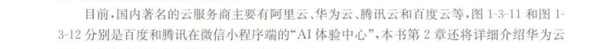
依据位置 上图是定位示意，阅读以上方原文为准 点击可放大 查看整页（整页里红框标出同一位置）
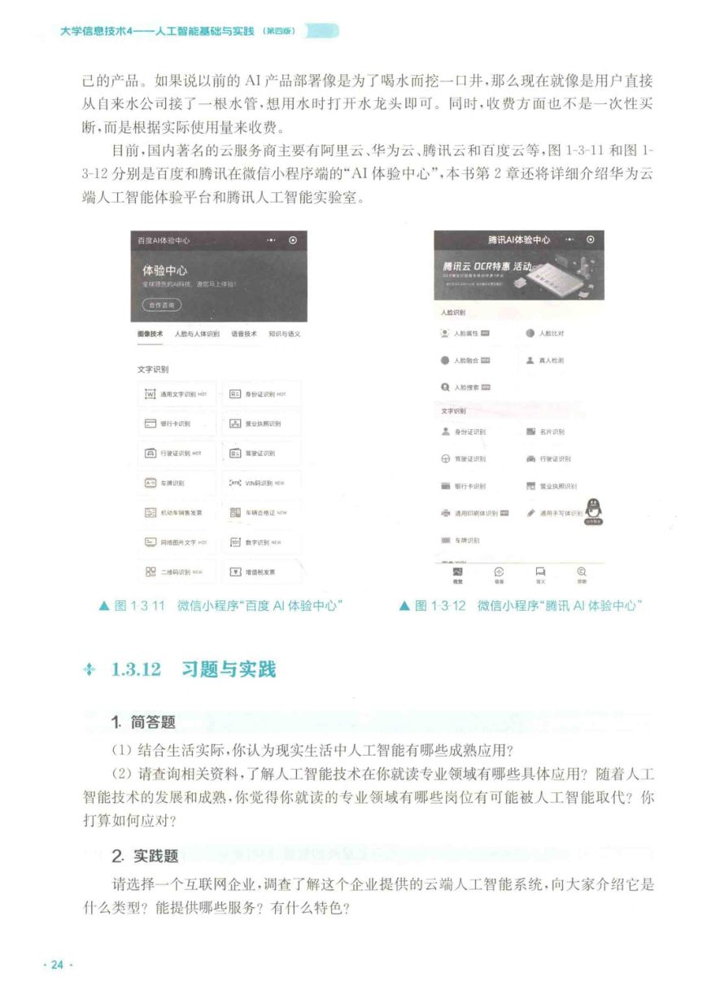
大学信息技术4—人工智能基础与实践（第四版） · PDF p.37 整页 点击可放大
- 命题说明
- 改编自 §2.1.5 节末实践题第 1 题「尝试使用多款人工智能体验平台，体验更多人工智能应用」与 §1.3.11 的云服务商列举。原题是开放体验题，本题把「教材到底点了哪几家」这一可判分事实抽出。需说明：本题题干依据的是教材 §1.3.11 的原文，不是 §2.1.5 的题面文字，两处内容相关但出处不同。
第 2 章 人工智能体验（ModelArts / Python 环境）19 题
教材以文本分类为例演示华为 ModelArts 自动学习。该项目主流程的正确顺序是________。
- A数据标注 → 模型训练 → 部署上线
- B模型训练 → 数据标注 → 部署上线
- C部署上线 → 数据标注 → 模型训练
- D数据标注 → 部署上线 → 模型训练
看答案与解析
- 解题步骤
- 回忆教材页面顶部的三个步骤标签，它们就是流程的官方顺序。
- 用因果链校验：先有带标签的数据 → 才能训练 → 才有模型可部署。
- 按因果链排除 B、C、D 三个打乱顺序的选项。
- 确认 A 与步骤标签逐字一致。
- 易错点
- 把「创建项目」当成独立第一阶段而漏掉数据标注。教材把创建项目写在（1）（2），步骤标签只标三步。
- 以为可以先部署再迭代训练。教材要求训练状态为「已完成」后才可部署。
- 作答程序
- 自动学习流程记成三个词：标、训、部署。
- 任何「先训练后标数据」「先部署后训练」的选项直接判错。
- 遇到流程题，用因果链而不是死记顺序，抗干扰更强。
- 教材依据（原文 + 书页）
- 教材依据书内 p.64、p.66PDF p.77、p.79§2.2 华为 ModelArts 体验 · §2.2.4 使用自动学习实现文本分类教材截图页面顶部标注：「1 数据标注 2 模型训练 3 部署上线」。正文步骤：（4）自动训练「单击……『开始训练』按钮」；（5）完成训练「训练完成后，可在完成界面中查看训练详情，如『评估结果』『训练参数』和『分类统计表』等」；（6）模型部署「训练状态为『已完成』以后，单击版本管理区域中的『部署』，开始将模型部署上线」。— 大学信息技术4—人工智能基础与实践（第四版） · §2.2 华为 ModelArts 体验 · §2.2.4 使用自动学习实现文本分类
查看整页（整页里红框标出同一位置）
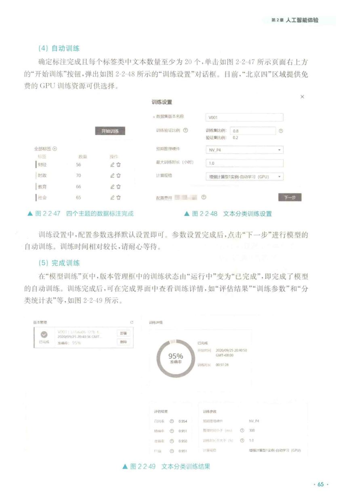
大学信息技术4—人工智能基础与实践（第四版） · PDF p.77、p.79 整页 点击可放大
- 命题说明
- 改编自 §2.2.5 节末简答题第 1 题「请简述 ModelArts 自动学习的操作流程包含哪些阶段」。教材未给参考答案，答案依据同节操作步骤与界面截图推导。
教材演示的文本分类自动训练中，训练设置对话框内的默认训练集与验证集比例是________。
- A训练集 0.8，验证集 0.2
- B训练集 0.7，验证集 0.3
- C训练集 0.5，验证集 0.5
- D训练集 0.9，验证集 0.1
看答案与解析
- 解题步骤
- 定位到（4）自动训练一节的图 2-2-48。
- 读图中「训练验证比例」两行数值：训练集 0.8、验证集 0.2。
- 排除其余三个常见比例。
- 注意教材提示「配置参数选择默认设置即可」，说明这是默认值而非需要自己调。
- 易错点
- 把训练集与验证集比例写反（0.2/0.8）。训练集一定占大头。
- 混入测试集概念。此处的 0.2 是验证集，用于训练中评估与早停监控，不是最终测试集。
- 作答程序
- 样本划分的常见默认值记 8:2（训练:验证），与第 5 章「80%/20% 切分训练集与测试集」互相印证。
- 看到「默认比例」优先想 8:2。
- 比例题注意问的是「训练:验证」还是「训练:测试」，两者在教材中都是 8:2，但用途不同。
- 教材依据（原文 + 书页）
- 教材依据书内 p.65PDF p.78§2.2.4 使用自动学习实现文本分类 · （4）自动训练图 2-2-48「文本分类训练设置」原文标注：「教据集版本名称 V001」「训练集比例：0.8」「验证集比例：0.2」「最大训练时长（小时）1.0」。正文：「训练设置中，配置参数选择默认设置即可。参数设置完成后，点击“下一步”进行模型的自动训练。」（引号内取自教材 OCR 文本。OCR 明显误识的字，我在个别处按语义改成了正字——例如「输人」→输入、「植人」→植入、「十」→＋、「X」→×；你逐字比对时若发现这类一两字不同，就是此故，不是改写内容。）— 大学信息技术4—人工智能基础与实践（第四版） · §2.2.4 使用自动学习实现文本分类 · （4）自动训练
- 命题说明
- 改编自 §2.2.5 节末简答题第 1 题（同一操作流程的细节）。教材未给参考答案，答案取自图 2-2-48 界面标注。
关于 ModelArts 自动学习中的文本分类项目，下列说法错误的是________。
- A文本分类暂时只支持中文
- B为保证训练效果，每个标签类的文本数量至少应有 20 个
- C训练完成后可查看评估结果、训练参数和分类统计表
- D模型部署上线后状态由「运行中」变为「部署中」即表示部署完成
看答案与解析
- 解题步骤
- 题干问「错误」，逐项验真。
- A、B、C 都能在界面提示或正文找到原句，标真。
- D 项查状态变化方向：部署中是中间态，运行中才是完成态，故「运行中 → 部署中」为假。
- 锁定 D。
- 易错点
- 把状态方向记反。「运行中」是目标态，不是起点。
- 以为 20 个是训练轮数或标签种类数，实际是每个标签类的样本下限。
- 以为文本分类支持多语言。教材明确「暂时只支持中文」。
- 作答程序
- 平台操作题抓三样：限制条件（只支持中文、≥20 条）、可查看的结果项、状态机方向。
- 状态机一律记「中间态 → 完成态」，反向即为错项。
- 凡「至少」「只支持」「必须」这类限定，都是高频命题点。
- 教材依据（原文 + 书页）
- 教材依据书内 p.64–p.66PDF p.77–p.79§2.2.4 使用自动学习实现文本分类原文：「文本分类暂时只支持中文。」「注意：为减少标注量，可用记事本打开每个类别的 txt 文件，删除一定行数的数据，但至少要保留 20 行文本。」「确定标注完成且每个标签类中文本数量至少为 20 个，单击……『开始训练』。」「训练完成后，可在完成界面中查看训练详情，如『评估结果』『训练参数』和『分类统计表』等。」「当『部署上线』页中的管理区域的状态由『部署中』变更为『运行中』，部署完成。」— 大学信息技术4—人工智能基础与实践（第四版） · §2.2.4 使用自动学习实现文本分类
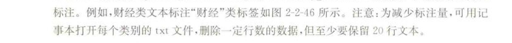
依据位置 上图是定位示意，阅读以上方原文为准 点击可放大 查看整页（整页里红框标出同一位置）
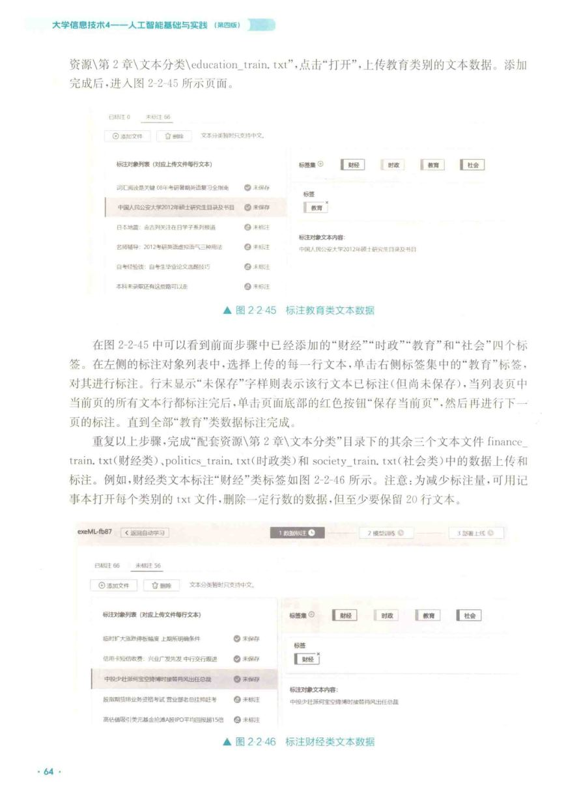
大学信息技术4—人工智能基础与实践（第四版） · PDF p.77–p.79 整页 点击可放大
- 命题说明
- 改编自 §2.2.5 节末简答题第 1 题（同一节细节）。教材未给参考答案，答案取自正文与界面提示。
教材列出的 Python 支持的数据类型包括________。
- A整型、浮点型、字符串
- B列表、元组
- C集合、字典
- D指针、结构体
看答案与解析
- 解题步骤
- 回忆教材原句的七类：整型、浮点型、字符串、列表、元组、集合、字典。
- A、B、C 三组刚好覆盖七类中的六类（整型、浮点、字符串、列表、元组、集合、字典——注意集合与字典在 C 组）。
- D 组的指针、结构体属 C 语言体系，教材未列，排除。
- 确认答案为 ABC。
- 易错点
- 把「布尔型」当作 Python 独立类型。教材七类中未单列，bool 在 Python 中实际是 int 的子类。
- 把 NumPy 的 ndarray 当成 Python 内置类型。那是第三方库对象。
- 看到「元组」觉得陌生而漏选，元组正是教材明确列出的一类。
- 作答程序
- 七类记成一句话：整、浮、串、列、元、集、字。
- 凡是 C 语言特色类型（指针、结构体、联合体）都不属于 Python。
- 数据类型题先排外来体系，再看是否有遗漏。
- 教材依据（原文 + 书页）
- 教材依据书内 p.69PDF p.82§2.3 体验人工智能编程语言 · 2.了解人工智能实验室中 Python 的数据类型原文：「Python 支持整型、浮点型、字符串、列表、元组、集合和字典等数据类型。变量在使用前都必须赋值，通过赋值确定了变量的数据类型，只有被赋值后变量才会被创建。」— 大学信息技术4—人工智能基础与实践（第四版） · §2.3 体验人工智能编程语言 · 2.了解人工智能实验室中 Python 的数据类型
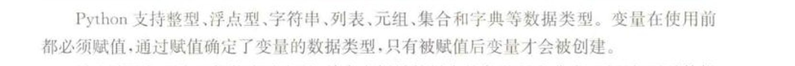
依据位置 上图是定位示意，阅读以上方原文为准 点击可放大 查看整页（整页里红框标出同一位置）
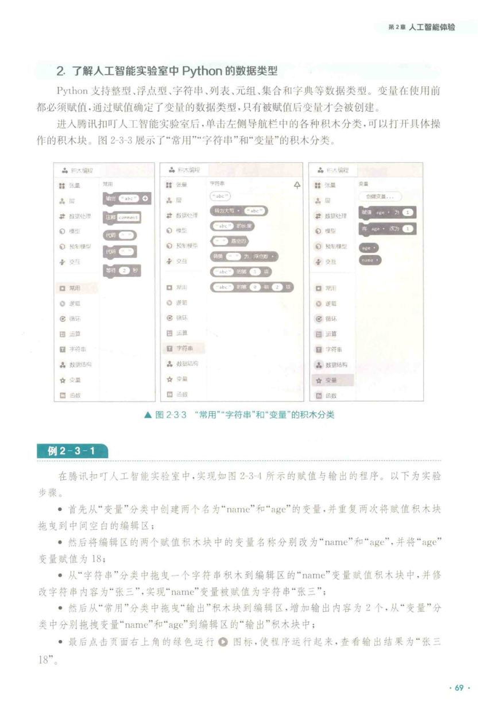
大学信息技术4—人工智能基础与实践（第四版） · PDF p.82 整页 点击可放大
- 命题说明
- 改编自 §2.3.3 节末简答题第 1 题「请简述 Python 有哪些数据类型」。教材未给参考答案，答案取自 §2.3 正文原句。考纲 93 条未单列 Python 语法知识点，本题作为编程基础能力训练保留，不强行挂靠考纲条目。
关于 Python 的三大控制结构，下列说法正确的有________。
- A顺序结构按代码书写顺序自上而下执行
- B分支结构根据判断条件选择不同的执行路径
- C循环结构对某个语句块反复执行，直到满足终止条件才退出
- D任何一个算法都必须同时使用三种控制结构才能实现
看答案与解析
- 解题步骤
- 先把教材三句定义逐条与 A、B、C 对照，三项均逐字对应。
- D 项做「可以 / 必须」审查：教材用「可以」，选项改成「必须」并加「同时」，双重加码，判错。
- 确认答案为 ABC。
- 易错点
- 把「可以」读成「必须」。教材只承诺三种结构的表达能力足够，不要求每个算法都用满。
- 以为顺序结构不是「控制结构」。教材把它与分支、循环并列为三大类。
- 把循环的退出条件说成「达到指定次数」，教材表述是「满足终止条件」。
- 作答程序
- 三大结构记三个词：顺序、分支、循环。
- 凡选项出现「必须同时」「只能用」这类强限定，回原文查语气词。
- 结构定义题按「怎么走」记：顺序自上而下、分支择路、循环往复至终止。
- 教材依据（原文 + 书页）
- 教材依据书内 p.70PDF p.83§2.3 体验人工智能编程语言 · 3.了解 Python 程序的控制结构原文：「Python 支持三大类控制结构：顺序结构、分支结构以及循环结构。任何一个算法都可以使用这三种控制结构来设计完成。·顺序结构，就是按照代码顺序自上而下地执行；·分支结构，根据判断条件选择不同路径的运行方式；·循环结构，对某个语句块形成循环运行模式，直到满足终止条件时退出循环。」— 大学信息技术4—人工智能基础与实践（第四版） · §2.3 体验人工智能编程语言 · 3.了解 Python 程序的控制结构
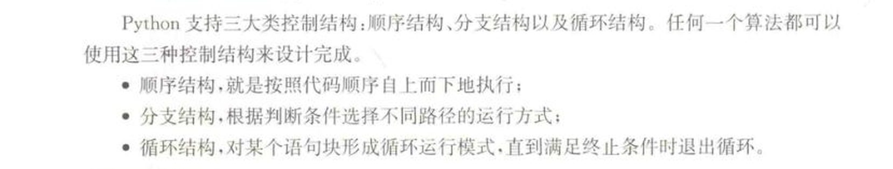
依据位置 上图是定位示意，阅读以上方原文为准 点击可放大 查看整页（整页里红框标出同一位置）
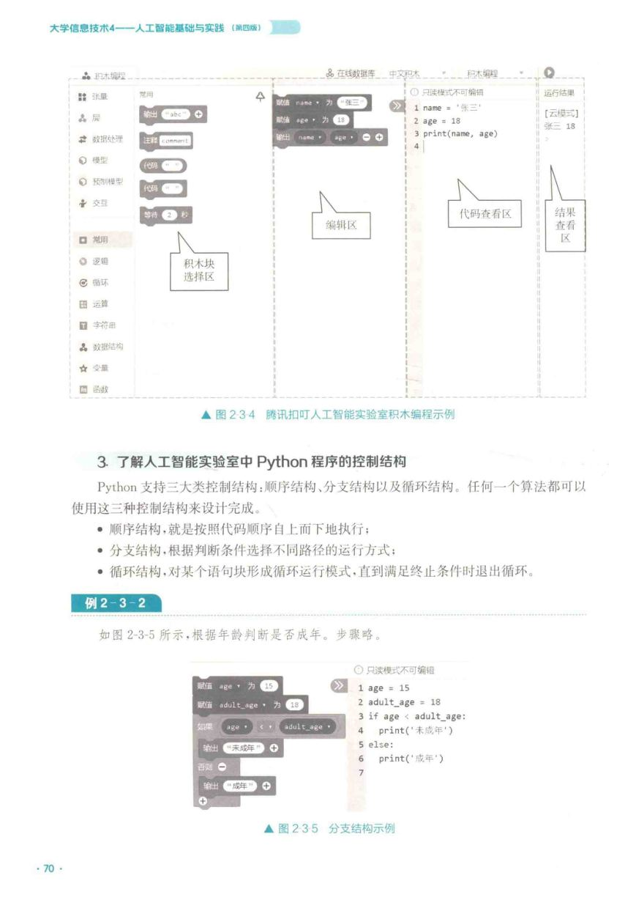
大学信息技术4—人工智能基础与实践（第四版） · PDF p.83 整页 点击可放大
- 命题说明
- 改编自 §2.3.3 节末简答题第 2 题「请简述 Python 支持的三大控制结构，并说明是否任何一个算法都可以使用这三种控制结构来完成」。教材未给参考答案，答案取自 §2.3 正文原句。考纲 93 条未单列 Python 语法知识点，本题作为编程基础能力训练保留。
关于 Anaconda，下列说法错误的是________。
- A它是一个 Python 发行版，内置 NumPy、Pandas 等 150 多个科学计算工具包及其依赖项
- B它同时具备包管理和环境管理功能，可创建虚拟环境隔离不同项目的开发环境
- C它捆绑了 IDLE、Spyder 和 Jupyter Notebook 等交互式代码编辑软件
- D它只能安装在 Windows 系统上，不支持 Linux 与 macOS
看答案与解析
- 解题步骤
- 题干问「错误」，逐项验真。
- A、B、C 分别对应 Anaconda 的三大卖点：发行版＋工具包、包/环境管理、捆绑编辑器，均可从原文确认。
- D 项查平台支持：教材下载页三平台并列，判错。
- 锁定 D。
- 易错点
- 把 Anaconda 当成一个编辑器。它是发行版，编辑器只是捆绑组件。
- 把「150 多个工具包」记成「15 个」或「上千个」。
- 以为虚拟环境要靠 virtualenv 才有。conda 自带环境管理。
- 作答程序
- Anaconda 记三件事：内置 150+ 工具包、包管理＋环境管理、捆绑 IDLE/Spyder/Jupyter。
- 平台支持题：Windows、Linux、macOS 三平台全覆盖是最常见正确表述。
- 凡是「只能」「唯一」的平台限定，先怀疑。
- 教材依据（原文 + 书页）
- 教材依据书内 p.75PDF p.88§2.4 Anaconda 开发环境 · §2.4.1 Anaconda 安装原文：「Anaconda 是一个 Python 的发行版，内置了大批科学计算工具包，包括 NumPy 和 Pandas 等 150 多个工具包及其依赖项……Anaconda 具有包管理和环境管理的功能……开发者还可以使用 Anaconda 创建不同的虚拟环境隔离各个项目所需要的开发环境。同时，Anaconda 还附带捆绑了 IDLE、Spyder 和 Jupyter Notebook 等优秀的交互式代码编辑软件。」下载页并列 Windows、macOS、Linux 三个平台。— 大学信息技术4—人工智能基础与实践（第四版） · §2.4 Anaconda 开发环境 · §2.4.1 Anaconda 安装
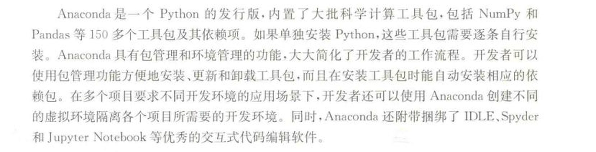
依据位置 上图是定位示意，阅读以上方原文为准 点击可放大 查看整页（整页里红框标出同一位置）
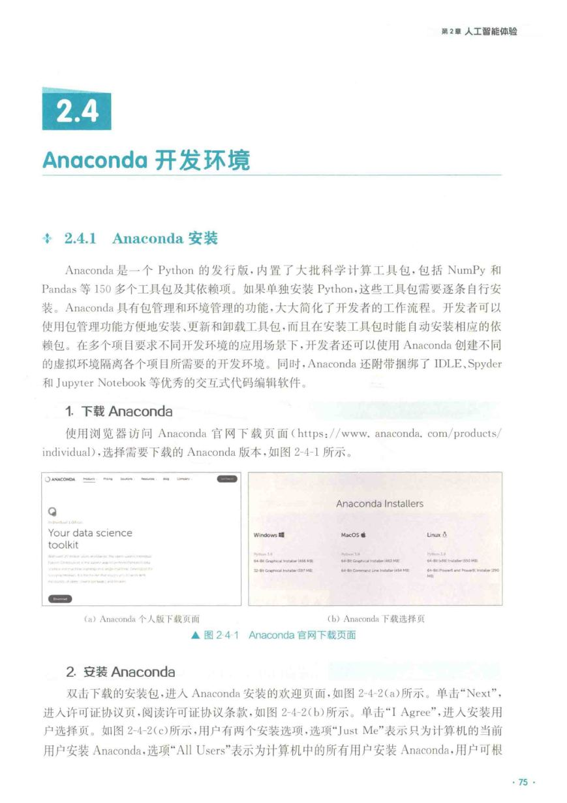
大学信息技术4—人工智能基础与实践（第四版） · PDF p.88 整页 点击可放大
- 命题说明
- 改编自 §2.4.6 节末简答题第 1 题「Anaconda 应用中集成了哪些程序？」。教材未给参考答案，答案取自 §2.4.1 正文与下载页截图。考纲 93 条未单列开发环境知识点。
关于 conda 与 pip 的区别，下列说法正确的有________。
- Apip 是 Python 默认的包管理器，新发布的工具包一般优先支持用 pip 安装
- Bconda 是与语言无关的跨平台环境管理器，可以安装任何语言的包
- Cconda 安装时会检查当前环境下所有包之间的依赖关系，并可创建、删除虚拟环境
- D在 Anaconda 中应优先使用 pip，只有 pip 中不存在该包时才用 conda
看答案与解析
- 解题步骤
- 把教材对两者的定位抄成两列：pip＝Python 默认包管理器；conda＝跨语言包管理器＋环境管理器。
- A、B、C 逐项对表，均与原文一致。
- D 项查优先级顺序：教材是「conda 优先、pip 兜底」，选项写成「pip 优先、conda 兜底」，正好反了。
- 确认 ABC。
- 易错点
- 把 conda 与 pip 的优先级记反。这是最常考的一处。
- 以为 conda 只能装 Python 包。它是语言无关的。
- 以为 pip 能管理虚拟环境。pip 只管包，环境管理是 conda 的能力。
- 作答程序
- 一句话记：pip 专管 Python 包，conda 管包也管环境、还能跨语言。
- 优先级记「conda 先行，pip 补漏」。
- 对比题抓「谁能做对方做不到的事」：conda 能做环境，pip 不能。
- 教材依据（原文 + 书页）
- 教材依据书内 p.77PDF p.90§2.4.2 第三方库的安装「Anaconda中提供了pip和conda两种方式管理工具包。pip和conda都是开源的包管理系统，可以安装Python包的多个版本和依赖，支持Linux、OSX和Windows系统。pip是Python默认的包管理器，一般来说新发布的工具包优先支持使用pip安装。而conda还是一个与语言无关的跨平台环境管理器，可以安装任何语言的包，在安装时会检查当前环境下所有包之间的依赖关系，也可以进行虚拟环境的创建和删除等操作。一般来说，在Anaconda中，优先使用conda的方式管理包，如果conda中不存在该工具包，才使用pip方式进行管理。」（引号内取自教材 OCR 文本。OCR 明显误识的字，我在个别处按语义改成了正字——例如「输人」→输入、「植人」→植入、「十」→＋、「X」→×；你逐字比对时若发现这类一两字不同，就是此故，不是改写内容。）— 大学信息技术4—人工智能基础与实践（第四版） · §2.4.2 第三方库的安装
查看整页（整页里红框标出同一位置）
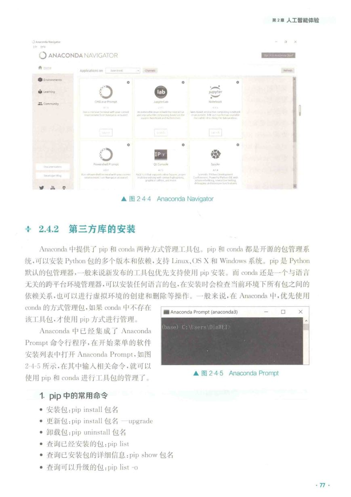
大学信息技术4—人工智能基础与实践（第四版） · PDF p.90 整页 点击可放大 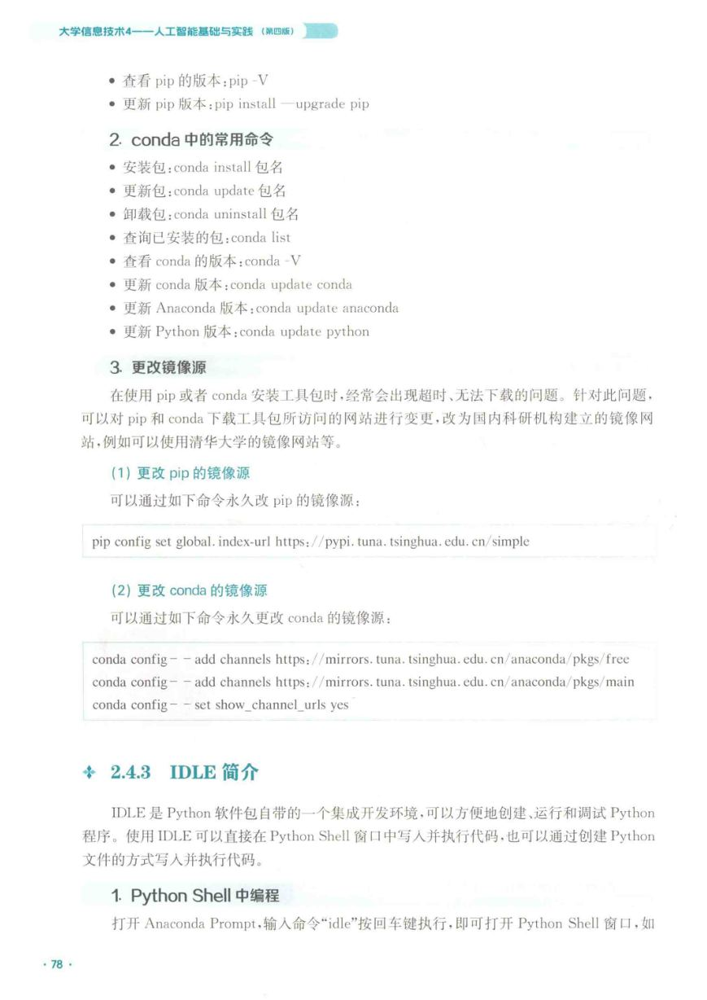
另一处依据页 PDF p.91 本题依据分居 PDF p.90 与 p.91 两页，两张截图都给出 点击可放大
- 命题说明
- 改编自 §2.4.6 节末简答题第 2 题「conda 和 pip 在使用上有什么区别？分别有哪些常用的命令？」。教材未给参考答案，答案取自 §2.4.2 正文。考纲 93 条未单列该知识点。
按教材给出的命令，若要用 conda 把已安装的某个包升级到新版本，正确的命令是________。
- Aconda update 包名
- Bconda uninstall 包名
- Cpip install 包名
- Dconda list 包名
看答案与解析
- 解题步骤
- 先确认问的是 conda 命令，排掉 pip 选项 C。
- 按动作分类 conda 命令：install 装、update 升、uninstall 卸、list 查。
- 「升级」对应 update，选 A。
- 顺带记 pip 的对应写法：pip install 包名 --upgrade。
- 易错点
- 把 pip 的升级写法（--upgrade）套到 conda 上写成 conda install --upgrade。
- 把 conda list 当成查询某个包详情（那是 pip show）。
- 混淆 update 与 upgrade 两个词在不同工具中的用法。
- 作答程序
- conda 四命令：install / update / uninstall / list。
- pip 对应：install / install --upgrade / uninstall / list。
- 看到「升级」先分工具：conda update，pip install --upgrade。
- 教材依据（原文 + 书页）
- 教材依据书内 p.78PDF p.91§2.4.2 第三方库的安装 · 2.conda 中的常用命令「2.conda中的常用命令 ·安装包：condainstall包名 ·更新包：condaupdate包名 ·卸载包：condauninstall包名 ·查询已安装的包：condalist ·查看conda的版本：conda-V ·更新conda版本：condaupdateconda」pip 段：「·安装包：pipinstall包名」「更新包：pipinstall包……」（OCR 在此截断，后半句无法从扫描件确认）（引号内取自教材 OCR 文本。OCR 明显误识的字，我在个别处按语义改成了正字——例如「输人」→输入、「植人」→植入、「十」→＋、「X」→×；你逐字比对时若发现这类一两字不同，就是此故，不是改写内容。）— 大学信息技术4—人工智能基础与实践（第四版） · §2.4.2 第三方库的安装 · 2.conda 中的常用命令
- 命题说明
- 改编自 §2.4.6 节末简答题第 2 题（命令部分）。教材未给参考答案，答案取自 §2.4.2 命令清单。
按教材操作，在 IDLE 中创建一个 Python 文件、写入代码、保存并执行，正确顺序是________。
- AFile → New File 新建文件并写代码 → 保存为 .py 文件 → Run → Run Module 执行
- BRun → Run Module 执行 → File → New File 写代码 → 保存为 .py 文件
- CFile → Open 打开已有文件 → 写代码 → 直接在 Shell 中按回车执行
- D必须先安装 Spyder，才能在 IDLE 中新建文件并运行
看答案与解析
- 解题步骤
- 回忆 IDLE 两步式：Shell 里可逐行执行；文件里写整段代码后 Run Module 执行。
- 本题问「创建文件→写→存→跑」，对应 New File → 写 → Save → Run Module。
- 排除顺序错乱项 B、C 与因果错项 D。
- 锁定 A。
- 易错点
- 把 Run Module 与 Run 菜单混淆：教材是先点 Run 菜单再选 Run Module。
- 以为 IDLE 里新建的文件不用保存就能运行。
- 以为 IDLE 需要单独安装。它随 Python 一起提供。
- 作答程序
- IDLE 操作记四步：New File → 写 → Save(.py) → Run Module。
- Shell 逐行 vs 文件整体，是 IDLE 两种工作方式的分水岭。
- 工具归属题记住：IDLE 自带、Spyder/Jupyter 由 Anaconda 捆绑。
- 教材依据（原文 + 书页）
- 教材依据书内 p.79PDF p.92§2.4.3 IDLE 简介 · 2.Python 文件中编程原文：「IDLE 中可以通过新建 Python 文件的方式写入并执行代码。单击 Python Shell 窗口中的『File』，选择『New File』创建 Python 文件，在文件中写入以下代码……单击『保存』，保存当前代码在指定路径下的『idle_shanghai.py』文件中」「单击 idle_shanghai.py 文件窗口中的『Run』，选择『Run Module』可执行该文件中的代码」。— 大学信息技术4—人工智能基础与实践（第四版） · §2.4.3 IDLE 简介 · 2.Python 文件中编程
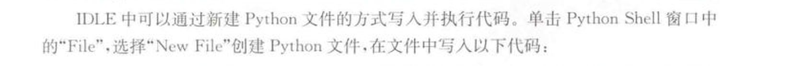
依据位置 上图是定位示意，阅读以上方原文为准 点击可放大 查看整页（整页里红框标出同一位置）
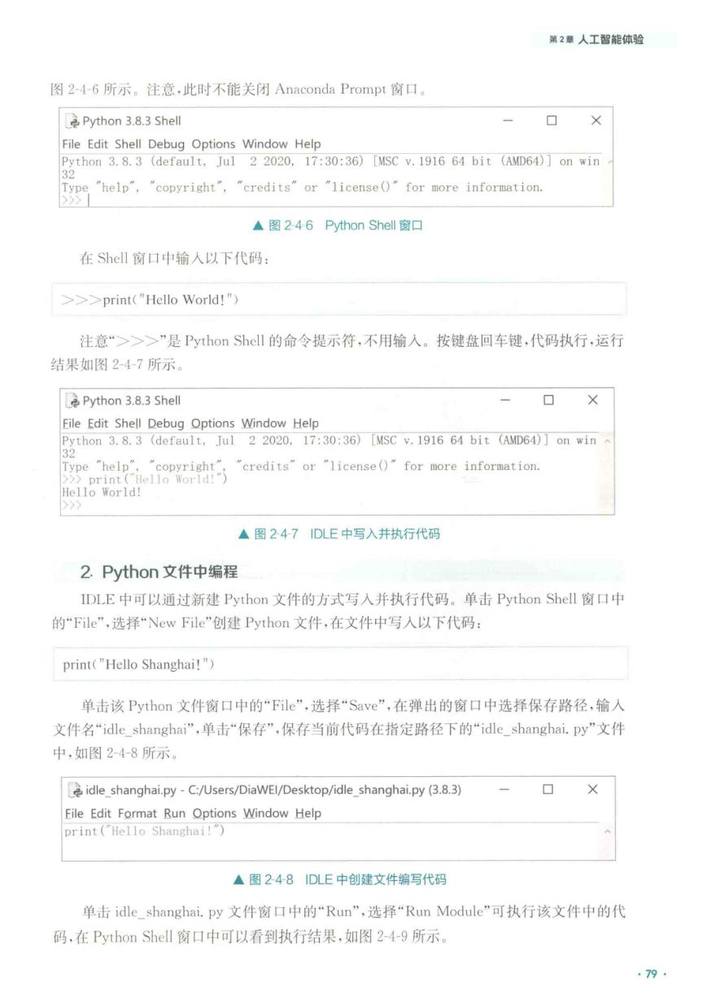
大学信息技术4—人工智能基础与实践（第四版） · PDF p.92 整页 点击可放大 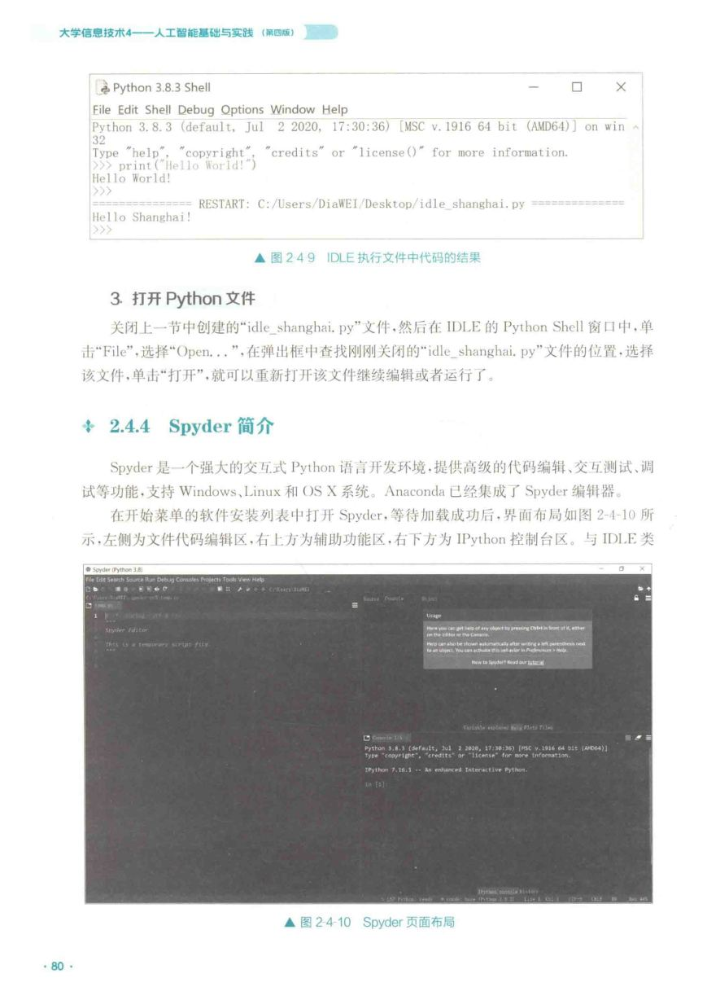
另一处依据页 PDF p.93 本题依据分居 PDF p.92 与 p.93 两页，两张截图都给出 点击可放大
- 命题说明
- 改编自 §2.4.6 节末简答题第 3 题「简述使用 IDLE 创建 Python 文件、写入代码、保存文件并执行代码的操作流程」。教材未给参考答案，答案取自 §2.4.3 正文步骤。
关于 Jupyter Notebook，下列说法正确的是________。
- A它是基于网页的交互式代码编辑软件，可覆盖代码开发、文档编写、代码运行和结果展示的全过程
- B它是只能运行 Python 的本地桌面程序，必须联网才能启动
- C它只能用于编写文档，不能执行代码
- D它由 Anaconda 之外的第三方单独提供，Anaconda 未捆绑
看答案与解析
- 解题步骤
- 抓 Jupyter 的三个特征：基于网页、交互式、代码＋文档＋结果一体。
- A 项与教材原句逐词对应。
- B、C、D 分别用「只能」「不能」「未捆绑」三种方式篡改，逐一排除。
- 锁定 A。
- 易错点
- 把 Jupyter 当成纯笔记本（记事本）。它能执行代码并保留输出。
- 以为 Jupyter 要单独安装。Anaconda 已捆绑。
- 把「基于网页」理解为「必须联网」。本地服务也可访问。
- 作答程序
- 三个工具一句话：IDLE 自带最轻，Spyder 面向科学计算调试，Jupyter 面向「代码＋说明」的报告式开发。
- 凡「只能」「不能」的工具限制项，先回教材找反例。
- Jupyter 的记忆锚是「网页＋单元格＋图文混排」。
- 教材依据（原文 + 书页）
- 教材依据书内 p.82PDF p.95§2.4.5 Jupyter Notebook 简介原文：「Jupyter Notebook 是一个基于网页的交互式代码编辑软件，可应用于代码开发、文档编写、代码运行和结果展示的全过程计算。用户以网页的形式打开 Jupyter Notebook……」；§2.4.1：「Anaconda 还附带捆绑了 IDLE、Spyder 和 Jupyter Notebook 等优秀的交互式代码编辑软件。」— 大学信息技术4—人工智能基础与实践（第四版） · §2.4.5 Jupyter Notebook 简介
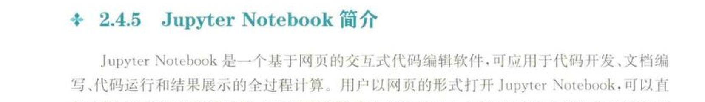
依据位置 上图是定位示意，阅读以上方原文为准 点击可放大 查看整页（整页里红框标出同一位置）
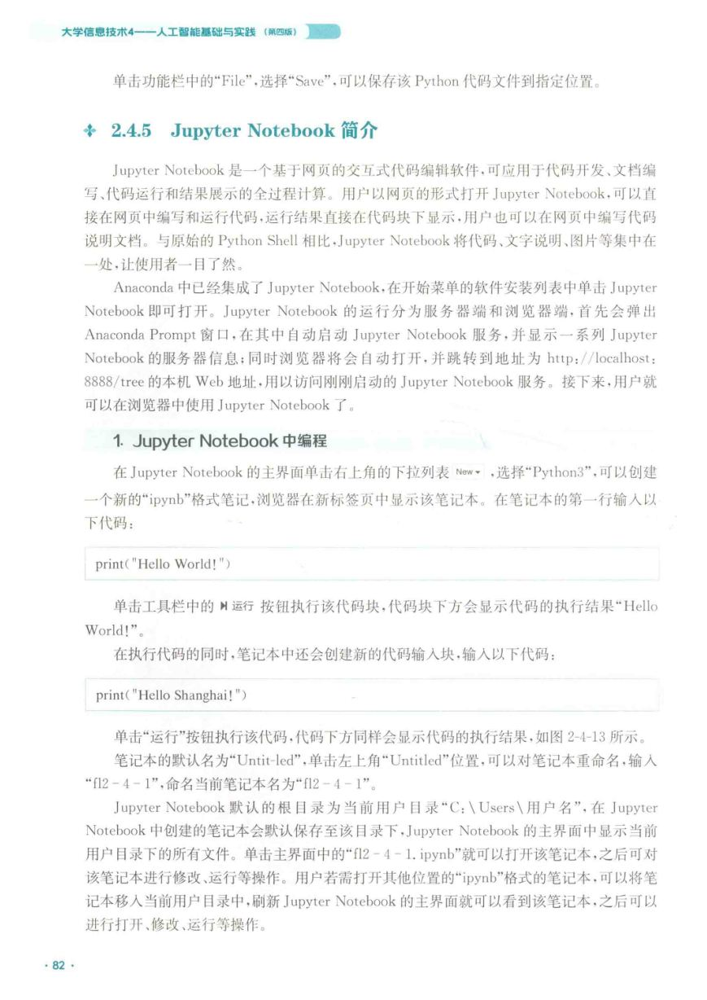
大学信息技术4—人工智能基础与实践（第四版） · PDF p.95 整页 点击可放大 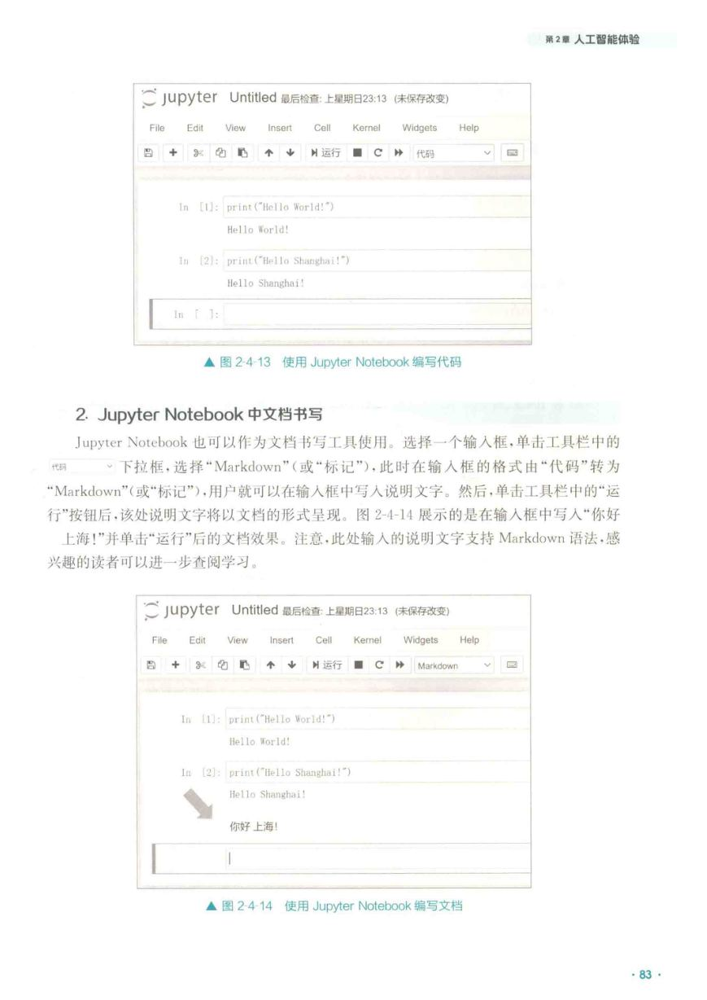
另一处依据页 PDF p.96 本题依据分居 PDF p.95 与 p.96 两页，两张截图都给出 点击可放大
- 命题说明
- 改编自 §2.4.6 节末简答题第 4 题「简述使用 Jupyter Notebook 进行代码开发、文档编写、代码运行的操作流程」。教材未给参考答案，答案取自 §2.4.5 正文。
教材在讲解 pip 与 conda 时提到，安装工具包常出现超时、无法下载的问题。其推荐的解决办法是________。
- A把下载源改为国内科研机构建立的镜像网站，如清华大学镜像站
- B关闭杀毒软件后重试
- C改用手机热点并重复执行同一条命令
- D把工具包源码逐行手工复制到本地
看答案与解析
- 解题步骤
- 定位教材 §2.4.2 第 3 小节「更改镜像源」。
- 记住两条命令：pip config set global.index-url …；conda config --add channels …。
- 四个选项中只有 A 对应教材方案。
- 锁定 A。
- 易错点
- 把「换镜像」与「换网络」混为一谈。前者改软件源，后者改链路。
- 记错命令归属：pip 用 config set global.index-url，conda 用 config --add channels。
- 以为改镜像源只对 conda 有效。pip 同样可改。
- 作答程序
- 安装超时的标准处置顺序：换镜像源 → 检查网络与代理 → 升级工具版本。
- pip 改源记 global.index-url；conda 改源记 channels。
- 教材给出的清华镜像地址是 pypi.tuna.tsinghua.edu.cn 与 mirrors.tuna.tsinghua.edu.cn。
- 教材依据（原文 + 书页）
- 教材依据书内 p.78PDF p.91§2.4.2 第三方库的安装 · 3.更改镜像源原文：「在使用 pip 或者 conda 安装工具包时，经常会出现超时、无法下载的问题。针对此问题，可以对 pip 和 conda 下载工具包所访问的网站进行变更，改为国内科研机构建立的镜像网站，例如可以使用清华大学的镜像网站等。」「pip config set global.index-url https://pypi.tuna.tsinghua.edu.cn/simple」— 大学信息技术4—人工智能基础与实践（第四版） · §2.4.2 第三方库的安装 · 3.更改镜像源
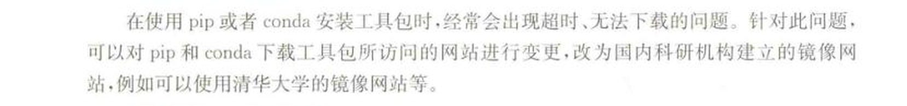
依据位置 上图是定位示意，阅读以上方原文为准 点击可放大
- 命题说明
- 原题（§2.4.6 简答题第 2 题）问的是「conda 和 pip 的使用区别与常用命令」，并没有问镜像源；镜像源是同一节 §2.4.2「3.更改镜像源」正文里讲的。所以本题属于借原题编号、按同节正文补出，考点不在原题范围内。答案「改用国内镜像网站（如清华镜像）」与命令均取自正文原文。
教材将文本分类列为人工智能的典型应用之一。下列关于文本分类的说法，错误的是________。
- A文本分类属于自然语言处理的典型任务，常见场景包括新闻主题分类、情感倾向判断等
- B教材 ModelArts 文本分类实验的标签集包含教育、时政、财经、社会四类
- C文本分类模型训练前必须先给文本打上类别标签
- D文本分类不需要任何标注数据，属于典型的无监督学习任务
看答案与解析
- 解题步骤
- 先判定学习范式：有标签 → 监督学习；无标签 → 无监督。文本分类实验每条文本都打了类别标签，属监督学习。
- D 项说「不需要标注、属无监督」，与判定直接冲突，判错。
- A、B、C 分别核场景、标签集、流程，均与教材一致。
- 锁定 D。
- 易错点
- 把文本分类与文本聚类混淆。聚类才是无监督（不给标签，按相似度分组）。
- 以为预训练大模型做文本分类就完全不需要标注。微调仍需标注样本。
- 忽略教材实验的四个标签类别，凭印象答「正面/负面」二分类。
- 作答程序
- 分类 vs 聚类一句话：有标签叫分类（监督），无标签叫聚类（无监督）。
- 判断学习范式只看「训练时有没有标签」。
- 自然语言处理的典型任务：分词、词性标注、命名实体识别、文本分类、机器翻译、问答。
- 教材依据（原文 + 书页）
- 教材依据书内 p.63–p.66PDF p.76–p.79§2.2 华为 ModelArts 体验 · §2.2.4 使用自动学习实现文本分类教材实验界面：「*添加标签集：教育、时政、财经、社会」「文本分类暂时只支持中文」；流程要求先「数据标注」，逐行选择标签并「保存当前页」，再「开始训练」。教材亦在 §2.2 开篇将文本分类列为人工智能的典型应用场景之一。— 大学信息技术4—人工智能基础与实践（第四版） · §2.2 华为 ModelArts 体验 · §2.2.4 使用自动学习实现文本分类
查看整页（整页里红框标出同一位置）
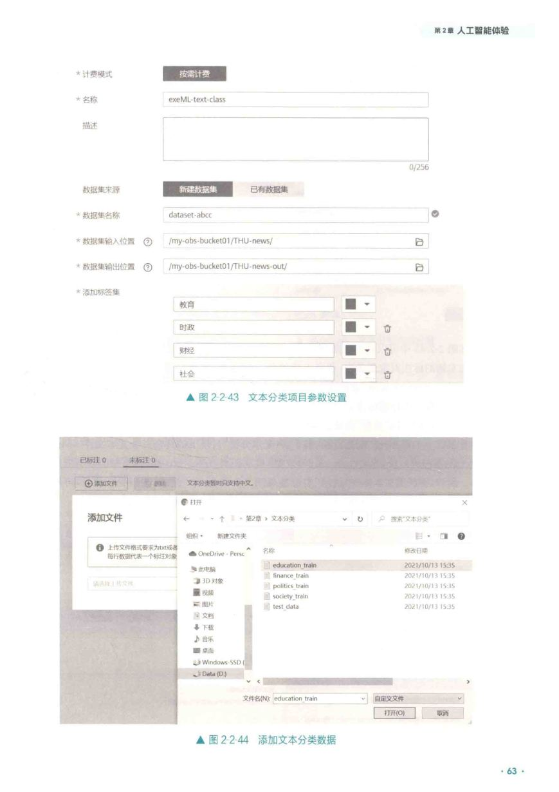
大学信息技术4—人工智能基础与实践（第四版） · PDF p.76–p.79 整页 点击可放大
- 命题说明
- 改编自 §2.2.5 节末简答题第 3 题「请简述文本分类技术可以应用到哪些场景中」。教材未给参考答案，答案结合 §2.2.4 实验流程与自然语言处理常识推导；「文本分类属监督学习」为学科通用结论。
用 ModelArts 自动学习做「多云 cloud / 下雨 rain / 晴天 shine」天气图片三分类，下列做法与教材流程最一致的是________。
- A建图像分类项目，把 train 目录图片按三个标签逐张标注后训练，再用 val 目录图片做验证预测
- B不需要标注，直接把 train 和 val 混在一起上传，让平台自己猜类别
- C把三个类别合成一个「天气」标签做二分类，最后人工区分晴雨
- D先训练模型，训练完再补做数据标注，标注不影响结果
看答案与解析
- 解题步骤
- 识别任务类型：天气图片三分类 = 图像分类 = 监督学习，必须有标签。
- 回忆自动学习三阶段：数据标注 → 模型训练 → 部署上线。标注在训练前。
- 对应数据分工：train 训练、val 验证预测。
- 只有 A 同时满足「先标注」「三分类」「train/val 分工」三点。
- 易错点
- 以为自动学习「全自动」就无需标注——它自动的是建模与调参，不是标注。
- 把 val 目录也拿去训练，导致验证结果虚高。
- 标签名写成中文导致与题干要求的 cloud/rain/shine 不一致。
- 作答程序
- 自动学习三阶段口诀：标—训—部署（部署后才能服务测试）。
- 数据分工记牢：train 参与训练，val 只做验证，绝不混用。
- 标签命名建议直接用题干给的英文（cloud/rain/shine），避免中文路径与编码问题。
- 教材依据（原文 + 书页）
- 教材依据书内 p.66～67PDF p.79～80§2.2 ModelArts 自动学习（图像分类）原文：「训练状态为『已完成』以后，单击版本管理区域中的『部署』，开始将模型部署上线……当『部署上线』页中的管理区域的状态由『部署中』变更为『运行中』，部署完成」；节末实践题原文：「实现天气图片的三分类：多云（cloud）、下雨（rain）、晴天（shine）。训练集图片文件保存在……train 下，用于预测的验证集图片文件可以使用……val 下的文件。」— 大学信息技术4—人工智能基础与实践（第四版） · §2.2 ModelArts 自动学习（图像分类）
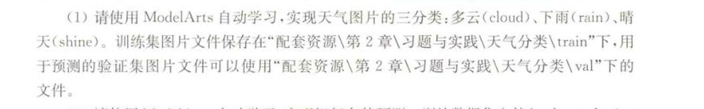
依据位置 上图是定位示意，阅读以上方原文为准 点击可放大 查看整页（整页里红框标出同一位置）
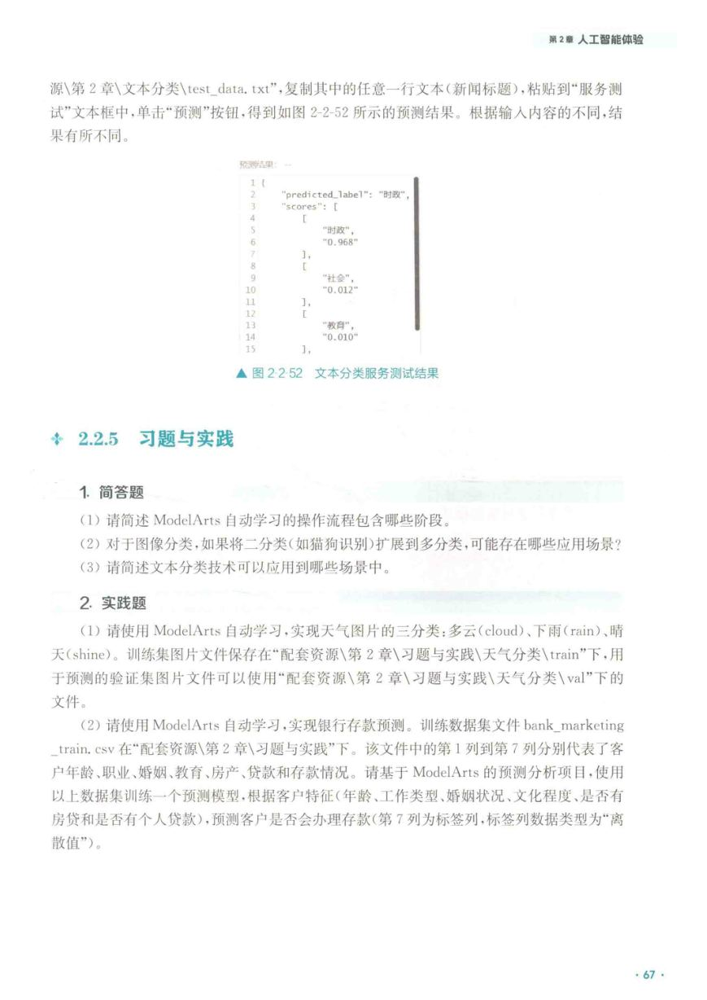
大学信息技术4—人工智能基础与实践（第四版） · PDF p.79～80 整页 点击可放大
- 命题说明
- 改编自 §2.2.5 节末实践题第 1 题（天气图片三分类）。原题是上机任务，本题把「标注在训练前、train/val 分工、三分类不能压成二分类」三个可判分要点做成单选。原题的数据路径与类别名照抄未改。
用 ModelArts 自动学习做银行存款预测（bank_marketing_train.csv，第 1～7 列依次为年龄、职业、婚姻、教育、房产、贷款、存款情况），下列设置与教材要求一致的是________。
- A建「预测分析」项目，用第 1～6 列作特征、第 7 列作标签，且标签列数据类型设为「离散值」
- B建「图像分类」项目，把 CSV 转成图片再训练
- C建「预测分析」项目，用第 7 列作特征、第 1～6 列作标签
- D建「预测分析」项目，把 7 列全部当特征，不设标签
看答案与解析
- 解题步骤
- 读题干列定义：前 6 列是客户特征，第 7 列是「存款情况」→ 要预测的结果。
- 确定任务类型：预测「是否办理存款」= 二分类 → ModelArts 用「预测分析」项目。
- 定特征/标签：X = 第 1～6 列，y = 第 7 列，标签类型「离散值」。
- 锁定 A。
- 易错点
- 把标签列也塞进特征（标签泄漏），训练准确率虚高、上线就崩。
- 标签类型选「连续值」——存款与否是离散的二值，不是连续量。
- 误用图像分类项目处理表格数据。
- 作答程序
- 三问定配置：数据是表还是图（决定项目类型）→ 要预测哪一列（标签）→ 标签是离散还是连续（决定问题类型）。
- 「是否/哪一类」→ 离散值、分类；「多少/价格/销量」→ 连续值、回归。
- 教材原文的列顺序要背：年龄、职业、婚姻、教育、房产、贷款、存款。
- 教材依据（原文 + 书页）
- 教材依据书内 p.67PDF p.80§2.2.5 习题与实践（实践题）原文：「该文件中的第 1 列到第 7 列分别代表了客户年龄、职业、婚姻、教育、房产、贷款和存款情况。请基于 ModelArts 的预测分析项目，使用以上数据集训练一个预测模型，根据客户特征（年龄、工作类型、婚姻状况、文化程度、是否有房贷和是否有个人贷款），预测客户是否会办理存款（第 7 列为标签列，标签列数据类型为『离散值』）。」— 大学信息技术4—人工智能基础与实践（第四版） · §2.2.5 习题与实践（实践题）
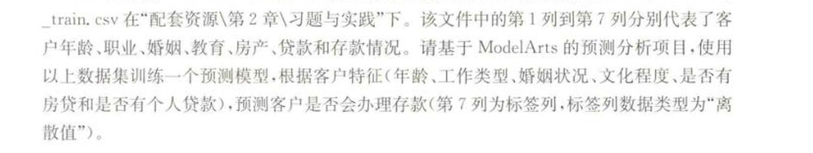
依据位置 上图是定位示意，阅读以上方原文为准 点击可放大
- 命题说明
- 改编自 §2.2.5 节末实践题第 2 题（银行存款预测）。原题是上机任务，本题把「项目类型、特征/标签划分、标签数据类型」三个可判分要点做成单选。题干的列定义与「离散值」要求照抄教材，未改动。
腾讯扣叮人工智能实验室「波士顿房价-积木」样例用神经网络（多层感知机）做房价预测。按教材说法，一个完整的神经网络模型包含的五个阶段依次是________。
- A准备数据 → 定义网络 → 准备训练 → 训练网络 → 评估结果
- B定义网络 → 准备数据 → 训练网络 → 评估结果 → 准备训练
- C准备数据 → 训练网络 → 定义网络 → 评估结果 → 准备训练
- D评估结果 → 准备数据 → 定义网络 → 训练网络 → 准备训练
看答案与解析
- 解题步骤
- 五个阶段按「数据→结构→配置→训练→检验」的工程顺序排列。
- 关键约束：定义网络依赖数据特征数；训练依赖网络与数据；评估依赖训练结果。
- B、C、D 都破坏了至少一条依赖关系。
- 锁定 A。
- 易错点
- 把「准备训练」与「训练网络」当成同一件事，只记四个阶段。
- 把「定义网络」提到最前（没有数据就不知道输入维度）。
- 把「评估结果」提前到训练之前。
- 作答程序
- 五阶段口诀：数—网—备—训—评。
- 类比做菜：买菜（准备数据）→ 定菜谱（定义网络）→ 备料下锅（准备训练）→ 开火（训练）→ 尝味（评估）。
- 这套五阶段与 Keras 的六步（载入、预处理、建模、编译、训练、评估预测）可以对照记，本质一致。
- 教材依据（原文 + 书页）
- 教材依据书内 p.72PDF p.85§2.3.3 习题与实践（实践题）原文：「腾讯扣叮人工智能实验室的云模式下，提供了『波士顿房价-积木』的样例……该样例采用神经网络（多层感知机）模型进行波士顿房价预测。一个完整的神经网络模型主要包括准备数据、定义网络、准备训练、训练网络和评估结果五个阶段。」— 大学信息技术4—人工智能基础与实践（第四版） · §2.3.3 习题与实践（实践题）
查看整页（整页里红框标出同一位置）
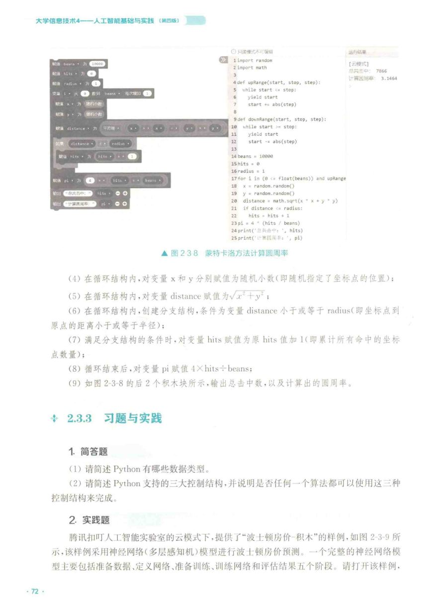
大学信息技术4—人工智能基础与实践（第四版） · PDF p.85 整页 点击可放大
- 命题说明
- 改编自 §2.3.3 节末实践题第 1 题（扣叮波士顿房价样例）。原题要求打开样例对照五个阶段操作，本题把五阶段名称与顺序做成排序题，题干文字照抄教材。
按教材步骤安装 Anaconda3（64-bit），在「安装用户选择页」与「安装路径选择页」上的正确做法是________。
- A安装用户选「Just Me (recommended)」，安装路径用默认或用 Browse 自选，之后各步选系统默认即可
- B必须选「All Users」，否则后续无法运行 Jupyter Notebook
- C安装路径必须手动改成 D 盘根目录，否则 Anaconda 无法启动
- D安装过程中必须勾选全部组件并关闭杀毒软件，否则会装失败
看答案与解析
- 解题步骤
- 回忆安装页顺序：欢迎页 → 许可协议（I Agree）→ 安装用户 → 安装路径 → Install。
- 安装用户：Just Me 为推荐项（教材图注标 recommended）。
- 安装路径：默认可，也可 Browse 自选。
- 之后各步默认即可。锁定 A。
- 易错点
- 把「All Users（需要管理员权限）」误当成推荐项。
- 认为必须装到非系统盘，多此一举还可能带来权限问题。
- 把安装阶段的「可选项」当成「必做项」（如改路径、全选组件）。
- 作答程序
- 安装四步记：I Agree → Just Me → 路径（默认）→ Install。
- 装完在开始菜单找「Anaconda3 (64-bit)」文件夹，里面有 Navigator、Prompt、Jupyter Notebook、Spyder。
- 验证安装成功最直接的方式：打开 Anaconda Prompt，输入 python 看是否进入交互环境。
- 教材依据（原文 + 书页）
- 教材依据书内 p.76PDF p.89§2.4 Anaconda 的安装「据需求选择安装选项。单击“Next”进人安装路径选择页，如图2-4-2（d）所示，这里用户可以使用默认安装路径进行安装，也可以根据自已的需求改变安装路径，单击“Next”进人安装页面。单击“Install”程序进入安装过程，之后各步选择系统默认选项即可完成安装。」安装界面原文：「Install for: JustMe(recommended)」「AlUsersrequires admnriveges）」（引号内取自教材 OCR 文本。OCR 明显误识的字，我在个别处按语义改成了正字——例如「输人」→输入、「植人」→植入、「十」→＋、「X」→×；你逐字比对时若发现这类一两字不同，就是此故，不是改写内容。）（第二行为「All Users (requires admin privileges)」的 OCR 原样）— 大学信息技术4—人工智能基础与实践（第四版） · §2.4 Anaconda 的安装
- 命题说明
- 改编自 §2.4.6 节末实践题第 1 题「请从 Anaconda 官网下载并安装 Anaconda 环境」。原题是上机题，本题把安装向导中的关键选项做成单选。说明：本题题干只考安装向导的选项，属 Python 开发环境操作，考纲 93 条中无对应知识点（syllabus 置空），但考试中环境类题目出现过，故保留。
要查看本机 pip 与 conda 的版本，以及已安装包的名字和版本，按教材做法应当________。
- A以管理员身份运行 Anaconda Prompt，用命令行输入相应命令查看
- B在 Jupyter Notebook 的 Notebook 里写 print 语句查询
- C打开 Anaconda Navigator 的图形界面逐一点击查看
- D在 Windows 资源管理器里查看 anaconda3 文件夹的文件列表
看答案与解析
- 解题步骤
- 明确目标：查 pip/conda 自身版本 + 已装包名与版本 → 属包管理器操作。
- 包管理器操作在命令行完成，入口是 Anaconda Prompt。
- 对应命令：pip --version、conda --version、pip list、conda list。
- 锁定 A。
- 易错点
- 在普通 cmd 里敲 conda 报「不是内部或外部命令」——要用 Anaconda Prompt（它预设了环境变量）。
- 把 pip 与 conda 当成同一件事：pip 管 PyPI 包，conda 管 conda 源包，两者包列表不完全相同。
- 在 Jupyter 里查包版本，结果属另一个环境，与 Prompt 里看到的不一致。
- 作答程序
- 四条命令记牢：pip --version / conda --version / pip list / conda list。
- 装包同理：pip install 包名 / conda install 包名；升级：pip install --upgrade 包名 / conda update 包名。
- 遇到「命令找不到」先想是不是用了普通 cmd 而不是 Anaconda Prompt。
- 教材依据（原文 + 书页）
- 教材依据书内 p.76、p.320PDF p.89、p.333§2.4 Anaconda 的使用 / §6.3.1 安装 TensorFlow原文：「以管理员身份运行 Anaconda Prompt，输入如下代码进行安装：pip install tensorflow」；「Anaconda Navigator 是 Anaconda 发行版中包含的桌面图形用户界面，允许用户启动应用程序并轻松管理软件包、环境和通道，而无需使用命令行命令。」— 大学信息技术4—人工智能基础与实践（第四版） · §2.4 Anaconda 的使用 / §6.3.1 安装 TensorFlow
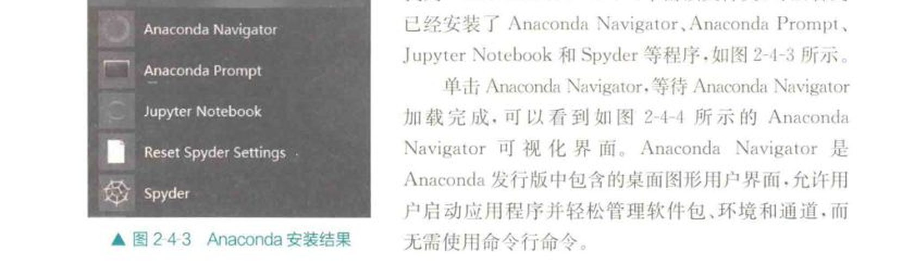
依据位置 上图是定位示意，阅读以上方原文为准 点击可放大
- 命题说明
- 改编自 §2.4.6 节末实践题第 2 题「请在 Anaconda Prompt 命令行程序中，分别查看 pip 和 conda 的版本，以及 pip 和 conda 中已经安装的包名称及版本」。原题是上机题，本题考「该用哪个入口、为什么」。说明：具体命令（pip --version 等）教材未逐条列出，属通用做法；本环境类题无考纲条目，syllabus 置空。
在 IDLE、Spyder 和 Jupyter Notebook 三个软件中分别输出「I love China!」，下列说法正确的是________。
- A三者都能输出同样结果，区别在于形态：Jupyter Notebook 是基于网页的交互应用，代码运行结果直接显示在代码块下面
- B只有 IDLE 能输出，Spyder 与 Jupyter Notebook 不能运行 print 语句
- C三者输出的结果文字不同，因为各自的 print 函数实现不一样
- DJupyter Notebook 必须先编译成 exe 才能看到输出
看答案与解析
- 解题步骤
- 确认三者关系：IDLE（自带轻量 IDE）、Spyder（科学计算 IDE）、Jupyter（网页交互）都是外壳，底下是同一个 Python 解释器。
- 同一 print 语句在三处输出相同。
- 差别只在交互形态与结果显示位置（Jupyter 在代码块下方就地显示）。
- 锁定 A。
- 易错点
- 误以为不同 IDE 会改变程序输出。
- 把 Jupyter 的「单元格执行」当成「必须编译」。
- 忘记 IDLE 是 Python 安装包自带、Anaconda 里不一定有（Anaconda 自带的是 Spyder 与 Jupyter）。
- 作答程序
- 三者的定位一句话：IDLE 最轻、Spyder 像 PyCharm 的科研版、Jupyter 最适合边调参边看图。
- 教材第 6 章明确「本章程序采用 Jupyter Notebook 进行运行和测试」，因为深度学习要看每轮训练结果。
- 验证三者一致性的最快办法：同一个 print 语句各跑一次，输出应逐字相同。
- 教材依据（原文 + 书页）
- 教材依据书内 p.76、p.320PDF p.89、p.333§2.4 Anaconda 的使用 / §6.3.1原文：「Jupyter Notebook 是一个基于网页的方便用户交互的应用程序，可以在网页直接编写并运行代码，代码运行结果会在代码块下面直接显示（如图 6-3-2 所示），方便深度学习的参数调整和结果显示，因此本章程序采用 Jupyter Notebook 进行运行和测试」；图 2-4-3 列出 Navigator、Prompt、Jupyter Notebook、Spyder 等程序。— 大学信息技术4—人工智能基础与实践（第四版） · §2.4 Anaconda 的使用 / §6.3.1
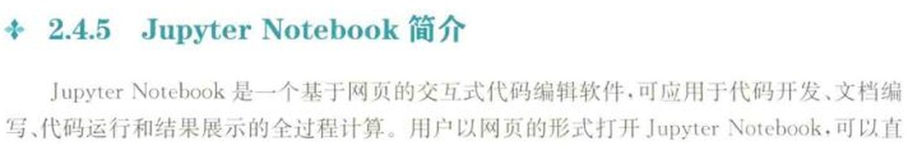
依据位置 上图是定位示意，阅读以上方原文为准 点击可放大 查看整页（整页里红框标出同一位置）
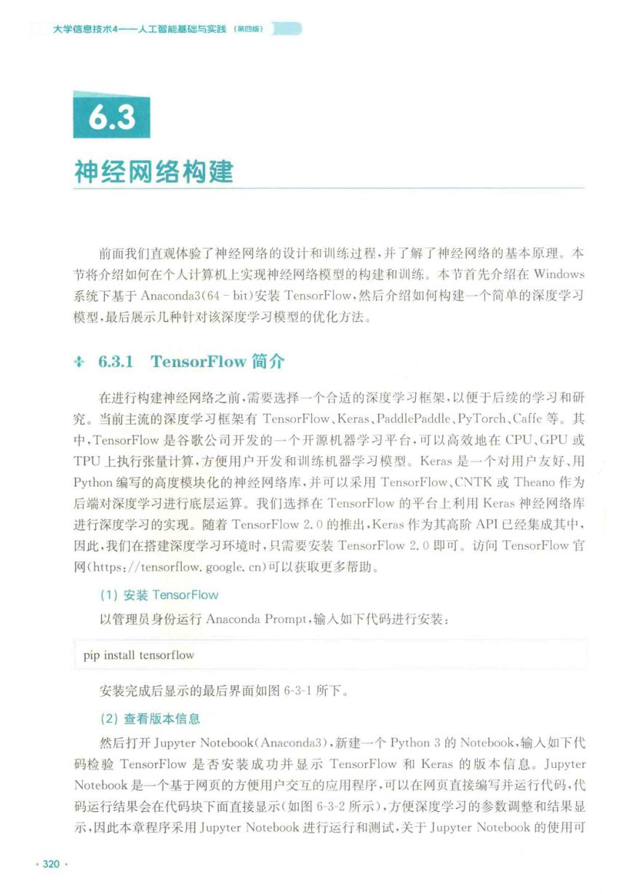
大学信息技术4—人工智能基础与实践（第四版） · PDF p.89、p.333 整页 点击可放大
- 命题说明
- 改编自 §2.4.6 节末实践题第 3 题「在 IDLE、Spyder 和 Jupyter Notebook 三个软件中实现『I love China!』的输出」。原题是上机题，本题把「三者同源、输出一致、差别在形态」这一可判分结论做成单选。说明：IDLE 在 Anaconda 中不默认提供，需另装标准 Python；本环境类题无考纲条目，syllabus 置空。
ModelArts 文本分类服务测试返回如下结果：`predicted_label` 为「时政」，`scores` 中「时政」0.968、「社会」0.012、「教育」0.010。对该结果解读正确的是________。
- A模型把该文本判为「时政」，0.968 是该类别的置信度，三个分数之和为 1，说明输出层做了多分类概率归一化
- B0.968 表示这条文本有 96.8% 的字属于「时政」类别
- C三个类别都预测对了，因为三个分数都大于 0
- Dscores 里的数字是训练轮数，与预测结果无关
看答案与解析
- 解题步骤
- 看结构：predicted_label 是最终判定，scores 是候选类别＋分数。
- 看数值：0.968 远大于 0.012、0.010，取最大 → 判为「时政」。
- 看性质：三分数近似和为 1 → 多分类概率归一化（Softmax）。
- 锁定 A。
- 易错点
- 把置信度当成「字数比例」或「准确率」。
- 以为多分类可以同时命中多个标签（那是多标签分类，不是这里的情形）。
- 看到 scores 就想到训练日志里的 loss。
- 作答程序
- 读预测结果三步：找 predicted_label（结论）→ 找最高分（依据）→ 看分数和是否为 1（判断是否 Softmax）。
- 多分类 vs 多标签：分数和为 1 且只取一个 → 多分类；各类独立 0/1 → 多标签。
- 置信度高不等于一定对，0.968 仍可能是错判，工程上通常设阈值并人工复核低置信样本。
- 教材依据（原文 + 书页）
- 教材依据书内 p.67PDF p.80§2.2 服务测试（图 2-2-52）（7）服务测试：「部署完成后，在“服务测试”文本框中输人想要测试的语句，或者打开测试文件“配套资……」；图 2-2-52 预测结果的 OCR 原文按行读出如下：「"predicted_label"："时政"」「'scores":[」「“时政”，」「"0.968"」「“社会”，」「"0.012"」「“教育”，」「"0.010"」（中间的 2/4/6/8/10/11/12/13/14/15 是截图里的行号，被 OCR 一并读出，不是 JSON 内容；「输人」为「输入」的 OCR 误识）— 大学信息技术4—人工智能基础与实践（第四版） · §2.2 服务测试（图 2-2-52）
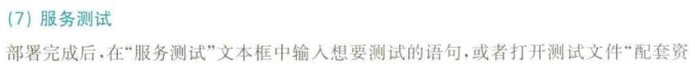
依据位置 上图是定位示意，阅读以上方原文为准 点击可放大 查看整页（整页里红框标出同一位置）
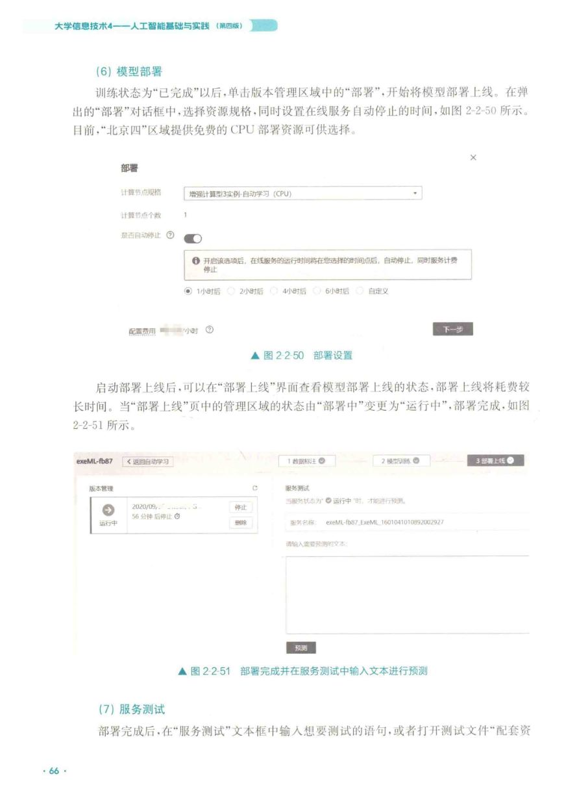
大学信息技术4—人工智能基础与实践（第四版） · PDF p.80 整页 点击可放大
- 命题说明
- 教材此处只有图与操作说明，没有对应的节末题。本题由我按图 2-2-52 的实际返回结构补出，考「predicted_label 与 scores 怎么读」。图中三个分数之和为 0.990（教材示例保留三位小数所致），已在解析中注明，未改动教材数字。
第 3 章 人工智能实践基础（Python 语法）32 题
按教材给出的标识符命名规则，下列标识符合法的有________。
- APython_
- Bhello_world
- Ca3
- D3c
看答案与解析
- 解题步骤
- 调出三条规则：由字母/汉字/数字/下划线组成；首字符只能是字母、汉字或下划线；不能与关键字同名。
- A、B、C 三项首字符都是字母，主体字符都在允许集合内，且都不是关键字。
- D 项首字符是数字 3，直接违反「不能以数字开头」，教材亦以其为例。
- 确认 ABC。
- 易错点
- 以为标识符里不能有数字。数字可以在中间或结尾，只是不能打头。
- 以为下划线不合法。下划线不仅合法，还可以作为首字符（如 _ifdef）。
- 把大小写当成不敏感。教材明确「Python 对大小写敏感」，python 与 Python 是两个不同标识符。
- 作答程序
- 标识符三查：首字符、组成字符、是否关键字。
- 数字开头一律不合法，这是最快的排除法。
- 合法示例可背教材这三个：Python_、hello_world、a3。
- 教材依据（原文 + 书页）
- 教材依据书内 p.92–p.93PDF p.105–p.106§3.1 Python 语言基础 · 3.1.2 基本字符、标识符和关键字原文：「Python 中的标识符命名规则如下：·由大小写英文字母、汉字、数字、下划线组成……·首字符只能是英文字母、汉字、下划线，长度任意，大小写敏感……·不能与 Python 关键字同名」；「以下这些为合法的标识符：Python_、hello_world、a3、你好、你好 Python」；「数字开头的标识符是不合法，例如：3c、135792468、233 次列车」。— 大学信息技术4—人工智能基础与实践（第四版） · §3.1 Python 语言基础 · 3.1.2 基本字符、标识符和关键字
查看整页（整页里红框标出同一位置）
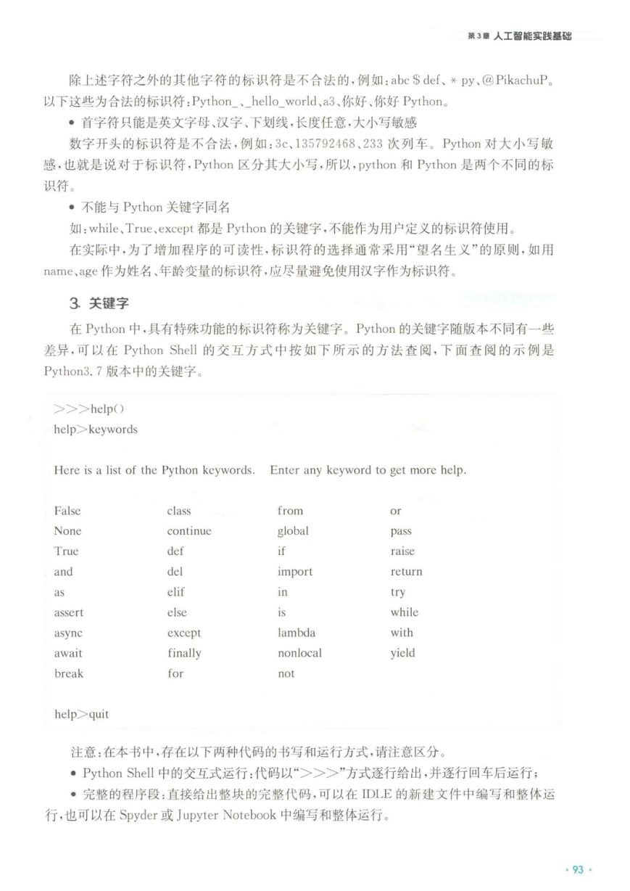
大学信息技术4—人工智能基础与实践（第四版） · PDF p.105–p.106 整页 点击可放大
- 命题说明
- 改编自 §3.1.7 节末简答题第 1 题（原题以 A—I 九个符号让读者判别，本题取教材原文示例重组为四选项）。教材未给参考答案，答案取自 §3.1.2 命名规则与原文示例。考纲 93 条未单列 Python 语法知识点，本题作为编程基础能力训练保留。
按教材列出的 Python 关键字表，下列名字中不是 Python 关键字的有________。
- Alist
- Bdict
- Cprint
- Dwhile
看答案与解析
- 解题步骤
- 回忆教材关键字表：False/None/True、and/or/not、if/elif/else、for/while/break/continue、def/return/lambda、class/import/from/as、try/except/finally/raise/assert、with/yield/global/nonlocal/del/pass/in/is/async/await。
- A、B、C 三个名字都不在这张表里，它们是内置类型或内置函数。
- D 的 while 在表中，属关键字。
- 题干问「不是」，故选 ABC。
- 易错点
- 把 print 当关键字。Python 2 时代它是语句，Python 3 起是内置函数，始终不在关键字表内。
- 把内置类型（list、dict、str、int）当关键字。它们可以被重新赋值覆盖。
- 把 True/False/None 当普通常量。它们在 Python 3 中是关键字，不能作标识符。
- 作答程序
- 区分三类名字：关键字（不可占用）、内置函数/类型（可覆盖但不该覆盖）、自定义标识符。
- 判断方法：在 Python Shell 里 help>keywords 可查当前版本关键字表。
- 考试常考的三个「伪关键字」：print、list、dict。
- 教材依据（原文 + 书页）
- 教材依据书内 p.93PDF p.106§3.1.2 基本字符、标识符和关键字 · 3.关键字原文：「在 Python 中，具有特殊功能的标识符称为关键字……可以在 Python Shell 的交互方式中按如下所示的方法查阅……>>>help() help>keywords Here is a list of the Python keywords.」随后列出 Python 3.7 的 35 个关键字：False、None、True、and、as、assert、async、await、break、class、continue、def、del、elif、else、except、finally、for、from、global、if、import、in、is、lambda、nonlocal、not、or、pass、raise、return、try、while、with、yield。— 大学信息技术4—人工智能基础与实践（第四版） · §3.1.2 基本字符、标识符和关键字 · 3.关键字
- 命题说明
- 改编自 §3.1.7 节末简答题第 2 题（原题以 A—I 九个名字让读者判别，本题取其中四个重组）。教材未给参考答案，答案取自 §3.1.2 关键字表。
下列名称中，不属于 Python 数据类型的有________。
- Achar
- Blong
- Ccomplex
- Dbool
看答案与解析
- 解题步骤
- 先回忆教材七类：整型、浮点型、字符串、列表、元组、集合、字典。
- char 不在其中，且它是 C 语言类型，Python 用长度 1 的字符串代替。
- long 不在其中，Python 3 只有 int；long 是 Python 2 遗留。
- complex 与 bool 虽未在七类中逐字列出，但教材实践题用 2+5j 和 True 让读者查 type()，可确认二者存在。
- 题干问「不属于」，故选 AB。
- 易错点
- 以为 Python 有 char。字符就是长度为 1 的 str。
- 把 Python 2 的 long 当成 Python 3 类型。Python 3 的 int 可任意精度，无需 long。
- 以为 bool 不是独立类型。bool 是 int 的子类，但确实是独立类型名。
- 作答程序
- 类型题用 type() 实测最稳：type(2+5j)→complex，type(True)→bool。
- C 语言特色类型（char、long、double、struct）在 Python 中基本不存在或已合并。
- 七类口诀：整、浮、串、列、元、集、字。
- 教材依据（原文 + 书页）
- 教材依据书内 p.69、p.107PDF p.82、p.120§2.3.2 Python 的数据类型 / §3.1.7 实践题§2.3.2 原文：「Python 支持整型、浮点型、字符串、列表、元组、集合和字典等数据类型。」§3.1.7 实践题原文：「请在 Python Shell 中尝试输入以下数据类型的常量，使用 type() 函数查看数据的类型……A.128 B.128.0 C.2+5j D.True E.(1,2,3,4,5) F.{1,2…}」，可见复数与布尔在教材中作为数据类型示例出现。— 大学信息技术4—人工智能基础与实践（第四版） · §2.3.2 Python 的数据类型 / §3.1.7 实践题
- 命题说明
- 改编自 §3.1.7 节末简答题第 3 题（原题以 A—G 七个名字让读者判别，本题取其中四个重组）。教材七类未逐字列出 complex 与 bool，但同节实践题以 2+5j、True 为示例，故按「存在」处理；char、long 属 C 语言与 Python 2 概念，教材未列。
关于 Python 程序中的注释，下列说法正确的有________。
- A单行注释以 # 开始，注释内容会被解释器忽略，不被执行
- B可用三个单引号或三个双引号包裹的多行字符串常量实现多行注释，两种引号不可混用
- CPython 只提供了单行注释符号，没有专门的多行注释符号
- D注释在程序运行时会作为输出显示在屏幕上
看答案与解析
- 解题步骤
- 抓住教材两句核心：只提供单行注释符号（#）；多行注释靠多行字符串常量实现。
- A、B、C 三项分别对应这两句及其推论，均与原文一致。
- D 项违背「解释器忽略」这一定义，判错。
- 确认 ABC。
- 易错点
- 以为 Python 有多行注释语法。它只是用三引号字符串「充当」注释，本质是未被引用的字符串常量。
- 混用三单引号与三双引号（如开头三个单引号、结尾三个双引号），教材明确「不可混用」。
- 以为注释会占运行时开销。解释阶段即被忽略。
- 作答程序
- 注释三问：单行用什么（#）、多行怎么写（三引号包裹）、会不会执行（不会）。
- 调试时大段屏蔽代码，可用三引号包住整段。
- 记住「不可混用」这个细节，它是高频陷阱。
- 教材依据（原文 + 书页）
- 教材依据书内 p.102PDF p.115§3.1.3 语句 · （2）注释原文：「注释是代码中加入的一行或多行信息，对程序的语句、函数、数据结构等进行说明，以此来提升代码的可读性。注释是一种辅助性文字，在解释时会被解释器忽略，不会被计算机执行。Python 语言中只提供了用于单行注释的符号。单行注释用『#』开始……如果希望在 Python 程序中实现多行注释，可以使用多行字符串常量表示。多行字符串常量用三个单引号开始，三个单引号结束。或者三个双引号开始，三个双引号结束，不可混用。」— 大学信息技术4—人工智能基础与实践（第四版） · §3.1.3 语句 · （2）注释
- 命题说明
- 改编自 §3.1.7 节末简答题第 4 题「Python 程序中表示注释的方法有哪些？」。教材未给参考答案，答案取自 §3.1.3（2）注释正文。
要判断一个字符变量 ch 是否为数字字符（'0'～'9'），下列 Python 条件表达式正确的是________。
- A'0' <= ch <= '9'
- B0 <= ch <= 9
- Cch == '0' or ch == '9'
- Dch >= '0' or ch <= '9'
看答案与解析
- 解题步骤
- 明确判断对象是字符而非整数，必须先排除拿 0 和 9 直接比较的 B。
- 数字字符在编码表中连续排列，用区间判断最简洁，A 符合。
- C 只覆盖两个端点，属于区间漏判。
- D 的 or 会让条件恒真，属逻辑连接词错误。
- 锁定 A。
- 易错点
- 把字符与整数混比。Python 3 不会像 C 那样自动转换，直接报错。
- 用 or 连接上下界，导致条件恒真。这是最常见的笔误。
- 只记端点不记区间，漏掉中间字符。
- 作答程序
- 区间判断三写法：'0'<=ch<='9'（推荐）、ch in '0123456789'、ch.isdigit()。
- 上下界一定用 and 连接（或级联比较），不能用 or。
- 字符比较依据编码值，记住 '0'<'9'<'A'<'a' 的顺序。
- 教材依据（原文 + 书页）
- 教材依据书内 p.100PDF p.113§3.1.1 运算符与表达式 · （2）关系运算

- 命题说明
- 改编自 §3.2.4 节末简答题第 1 题「请写出判断一个字符 ch 是数字字符的条件表达式」。教材未给参考答案，答案依据 §3.1.1 级联比较与关系运算推导；「字符按编码比较」为 Python 语义常识。
设 s 是一个字符串对象，要把它的首字符改为大写、其余字符保持不变，且不修改 s 本身，应使用________。
- As.capitalize()
- Bs.upper()
- Cs.lower()
- Ds.strip()
看答案与解析
- 解题步骤
- 抓住题目两个限定：只改首字符、不修改原字符串。
- 在表 3-2-2 中逐项比对描述：capitalize 改首字符、upper 全大写、lower 全小写、strip 去空格。
- 只有 capitalize 满足「首字符大写」。
- 注意教材强调所有 str 方法都「返回新字符串，S 对象不变」，恰好符合「不修改 s」。
- 锁定 A。
- 易错点
- 把 capitalize 与 upper 混淆。前者只动首字符，后者动全部。
- 以为字符串方法会原地修改。字符串不可变，方法一律返回新对象。
- 想要「每个单词首字母大写」时误用 capitalize。那是 title() 的功能，教材表未列。
- 作答程序
- 字符串方法记三列：方法名、作用、是否改原对象。
- 「首字符大写」＝capitalize，「全部大写」＝upper，「全部小写」＝lower。
- 凡 str 方法都是返回新串，原串不变——这一点也适用于 replace、strip、split。
- 教材依据（原文 + 书页）
- 教材依据书内 p.112PDF p.125§3.2.2 字符串 · （5）str 对象的方法（表 3-2-2）表 3-2-2 原文：「S.capitalize() 返回首字符大写后的字符串，S 对象不变」「S.lower() 返回所有字符改小写后的字符串，S 对象不变」「S.upper() 返回所有字符改大写后的字符串，S 对象不变」「S.strip() 返回删去前后空格后的字符串，S 对象不变」「S.replace(old,new) 返回所有的 old 子串用 new 子串代替的字符串，S 对象不变」。— 大学信息技术4—人工智能基础与实践（第四版） · §3.2.2 字符串 · （5）str 对象的方法（表 3-2-2）
- 命题说明
- 改编自 §3.2.4 节末简答题第 2 题「如何使用 Python 实现一个英文标题的单词首字符大写？」。原题答案是「每个单词」首字母大写（title 思路），教材表 3-2-2 只给出 capitalize（首字符）与 upper，故本题改为教材可支撑的「首字符大写」表述。
设序列 s 为 'Python'，要得到其逆序序列 'nohtyP'，最简洁正确的表达式是________。
- As[::-1]
- Bs[0:-1]
- Cs.reverse()
- Ds[1:] + s[0]
看答案与解析
- 解题步骤
- 确认目标：整个序列倒序。
- 切片结构 [start:stop:step]，step=-1 即倒序取，省略 start/stop 即全序列，A 成立。
- B 只截去末位，C 是列表方法且返回 None，D 是左移一位，均不符。
- 锁定 A。
- 易错点
- 把 s[::-1] 与 s[-1::-1] 混为一谈。前者更简洁，效果相同。
- 对字符串调用 reverse()。它只属于列表，且原地修改。
- 把 s[0:-1] 当成「去掉首尾」。它只去掉末尾。
- 作答程序
- 逆序三法：s[::-1]、''.join(reversed(s))、list(reversed(s))。考试首选第一种。
- 切片记忆：三个位置分别管「从哪、到哪、怎么走」，负数步长就是倒着走。
- 区分可变与不可变：列表有 reverse()/sort()，字符串和元组没有。
- 教材依据（原文 + 书页）
- 教材依据书内 p.115～p.116PDF p.128～p.129§3.2.2 元组和列表的序列操作 · （2）索引访问操作原文：「与字符串的索引访问相同，元组和列表中的元素可以通过下标访问，下标从 0 开始，同时也可以通过切片操作获取部分元素。」例 3-2-13：>>>t2[2:4] 得 ('west','north')；>>>L1[::-1] 得 ['five','four','three','two','one']。— 大学信息技术4—人工智能基础与实践（第四版） · §3.2.2 元组和列表的序列操作 · （2）索引访问操作
- 命题说明
- 改编自 §3.2.4 节末简答题第 3 题「求一个序列 S1 的逆序序列 S2 的表达式是什么？」。教材未给参考答案，答案依据例 3-2-13 的 [::-1] 用法推导。
设 lst = ['apple', 'fig', 'banana']，要按字符串长度升序排序并得到一个新列表，正确的表达式是________。
- Asorted(lst, key=len)
- Bsorted(lst)
- Clst.sort(reverse=True)
- Dsorted(lst, len)
看答案与解析
- 解题步骤
- 题目两个条件：按长度排序、返回新列表。
- sorted() 返回新列表，sort() 原地修改并返回 None，先排除 C。
- 按长度排序必须指定 key=len，排除按字母序的 B。
- key 只能以关键字参数传入，D 的写法报错，排除。
- 锁定 A。
- 易错点
- 写成 sorted(lst, len)。key 是仅关键字参数，必须 key=len。
- 用 lst.sort(key=len) 后赋值给变量，得到的是 None。
- 以为 key 要写成 key=len()。传函数对象本身，不加括号。
- 作答程序
- sorted 三参数：iterable 位置参数、key 关键字参数、reverse 关键字参数。
- key 后面跟函数名（不加括号），如 key=len、key=str.lower。
- 要新列表用 sorted，要原地改列表用 sort。
- 教材依据（原文 + 书页）
- 教材依据书内 p.116–p.117PDF p.129–p.130§3.2.2 序列函数 · sorted()原文：「sorted() 函数可以对列表、元组、字符串排序，排序后产生一个新的列表，语法格式如下：sorted(iterable,/,*,key=None,reverse=False)」「key：参数值是一个函数，在每个数据项比较前被调用，决定排序关键字；reverse：参数值为 True 则排降序，False（默认值）排升序」「注意：无论对列表、字符串还是元组进行排序，sorted() 函数都是返回一个新序列对象，对原来的序列对象没有影响。」— 大学信息技术4—人工智能基础与实践（第四版） · §3.2.2 序列函数 · sorted()
- 命题说明
- 改编自 §3.2.4 节末简答题第 4 题「请查阅排序函数 sort 或 sorted 函数中 key 参数的使用方法，实现对一个字符串列表按字符串长度排序」。教材给出 key 的机制说明但未给 key=len 示例，答案依据该机制推导。
已有若干项目的参赛运动员名单，一位运动员可以参加多个项目，现要合并出一份不重复的运动员总名单。最贴合教材所述集合特性的做法是________。
- A把各项目名单转成集合后求并集
- B把各名单直接用 + 拼接成一个列表
- C用 max() 取出最长的那份名单
- D把名单排序后取第一个元素
看答案与解析
- 解题步骤
- 题目核心需求是「合并 + 去重」。
- 去重最直接的数据结构是集合，教材明确指出集合元素不能重复，常用于去除重复元素。
- 列表拼接会保留重复项，排除 B；C、D 与需求无关。
- 锁定 A。
- 易错点
- 用列表 + 拼接后忘记去重，结果里同一个人出现多次。
- 以为集合保持顺序。集合无序，若需要固定顺序要先排序再输出。
- 把并集与交集混淆。合并去重用并集（|），找共同参赛者才用交集（&）。
- 作答程序
- 去重三法：set() 转集合、dict.fromkeys() 保序去重、循环判断。
- 集合运算记四个符号：| 并、& 交、- 差、^ 对称差。
- 需要顺序时，去重后要显式排序。
- 教材依据（原文 + 书页）
- 命题说明
- 改编自 §3.2.4 节末简答题第 5 题「已有运动会上参加各个项目的运动员名单，一位运动员可以参加多个项目，请简述使用 Python 求解参加了运动会的运动员名单的方法」。教材未给参考答案，答案依据 §3.2.3 集合特性推导。
关于 while 与 for 两种循环语句的使用场合，下列说法正确的有________。
- Awhile 适合循环次数事先不确定、靠条件判断决定是否继续的场合
- Bfor 适合遍历列表、元组、字符串等可迭代对象，或循环次数已知的场合
- Cfor 循环每一轮由可迭代对象依次把元素赋给循环变量
- D任何 for 循环都可以无条件改写为执行次数更多的 while 循环
看答案与解析
- 解题步骤
- 把两种循环的驱动方式分开：while 靠条件，for 靠可迭代对象。
- A、B、C 三项分别对应条件驱动、遍历场景、赋值机制，均与原文一致。
- D 项「无条件改写」在理论上可行，但「次数更多」是错误加码，判错。
- 确认 ABC。
- 易错点
- 以为 for 只能配合 range 用。它可直接遍历字符串、列表、字典等。
- 以为 while 不能遍历序列。用下标 + while 同样可以。
- 把「执行次数」与「循环结构」绑定，误认为某种循环必然多执行。
- 作答程序
- 选型口诀：次数已知或要遍历→for；次数未知、靠条件退出→while。
- for 的本质是三件事：取元素、赋给变量、执行循环体。
- range(start,end,step) 是 for 最常用的配套函数，注意 end 取不到。
- 教材依据（原文 + 书页）
- 教材依据书内 p.134PDF p.147§3.3.3 循环结构 · 1.while 语句 / 2.for 语句原文：「while<条件表达式>：<语句块> 条件表达式为真时，执行缩进格式中的语句块，再次计算条件表达式值，若为 True 继续执行循环语句块，若为 False 退出循环结构。」「for<变量> in<可迭代对象>：<语句块> 迭代是访问聚合数据对象的一种方式……Python 的组合数据类型都是可迭代对象，如 list（列表），tuple（元组），dict（字典），set（集合），str（字符串）等。for 循环就是依次访问这个可迭代对象中的第一个元素到最后一个元素并赋值给循环变量，称之为一次遍历。」— 大学信息技术4—人工智能基础与实践（第四版） · §3.3.3 循环结构 · 1.while 语句 / 2.for 语句
- 命题说明
- 改编自 §3.3.4 节末简答题第 2 题「试比较循环结构语句 while 和 for 的使用场合」。教材未给参考答案，答案取自 §3.3.3 正文定义。
关于 break 与 continue 语句，下列说法正确的是________。
- Abreak 立即跳出其所在的最内层循环；continue 结束本次循环、跳过后续语句，开始下一轮
- Bbreak 只结束本次循环，continue 跳出整个循环
- C两者都只能用于 for 循环，不能用于 while 循环
- Dcontinue 执行后，本轮循环体中它后面的语句仍会继续执行
看答案与解析
- 解题步骤
- 用一句话区分：break 出圈，continue 跳本轮。
- A 项与教材两句原文逐字对应。
- B 项互换定义，C 项限定循环种类，D 项颠倒跳过规则，逐一排除。
- 锁定 A。
- 易错点
- 把 continue 当成「跳出循环」。它只是结束本轮，循环仍继续。
- 以为 continue 后面的语句还会执行。一律被跳过。
- 在嵌套循环中搞错 break 的作用范围。它只跳出最内层一层。
- 作答程序
- 两词记忆：break＝打断（整个循环），continue＝继续（下一轮）。
- 嵌套循环里要跳出多层，需配合标志变量或函数返回。
- 调试技巧：在循环体首尾打印计数，可直观看出跳过了哪一轮。
- 教材依据（原文 + 书页）
- 教材依据书内 p.135PDF p.148§3.3.3 循环结构 · 3.break 和 continue 语句原文：「当 break 语句在循环结构中执行时，它会忽视后面的代码块，立即跳出其所在的最内层的循环结构，转而执行该内层循环结构后面的语句。」「与 break 语句不同，当 continue 语句在循环结构中执行时，并不会退出循环结构，而是立即结束本次循环，重新开始下一轮循环，也就是说，跳过循环体中在 continue 语句之后的所有语句，继续下一轮循环。」— 大学信息技术4—人工智能基础与实践（第四版） · §3.3.3 循环结构 · 3.break 和 continue 语句
- 命题说明
- 改编自 §3.3.4 节末简答题第 3 题「break 语句和 continue 语句的区别是什么？」。教材未给参考答案，答案取自 §3.3.3 第 3 小节原文。
要在程序中使用标准库 math 中的 sqrt() 函数，下列关于导入与调用方式的说法，正确的是________。
- A写 import math 后须用 math.sqrt() 调用；写 from math import sqrt 后可直接用 sqrt() 调用
- B无论用哪种导入方式，调用时都必须写成 math.sqrt()
- C写 from math import sqrt 后仍必须写成 math.sqrt()，否则报错
- D只能用 from math import * 这一种方式导入标准库
看答案与解析
- 解题步骤
- 把三种导入方式与其调用形式配对：import math → math.sqrt()；from math import sqrt → sqrt()；from math import * → sqrt()。
- A 项配对正确。
- B、C 两项混淆两种方式的调用形式，D 项否认其他导入方式存在。
- 锁定 A。
- 易错点
- from math import sqrt 之后还写 math.sqrt()，此时 math 这个名字并未绑定，会报错。
- 用 from math import * 后又定义同名函数，造成覆盖冲突（教材提示过这一点）。
- 以为 import 之后可以直接写 sqrt()。必须带模块前缀。
- 作答程序
- 两种基本式：import X → X.f()；from X import f → f()。
- 别名写法：import numpy as np，之后用 np 前缀。
- 工程上优先 import 模块或用别名，避免 from…import * 污染命名空间。
- 教材依据（原文 + 书页）
- 教材依据书内 p.140–p.141PDF p.153–p.154§3.4 模块与函数 · 3.4.1 标准库与模块的导入「还可以通过import命令明确引l人模块的函数名，有多个函数导人时函数名之间用逗号分隔」「使用这种方法导人指定的函数，调用时函数名前不需要加模块前缀」「或者通过星号（￥）导人模块中的所有函数或其他对象」「调用时同样在函数名前不需要加模块前缀，但要注意所导人模块中的函数名等与现有系统中的函数不能产生冲突」（引号内取自教材 OCR 文本。OCR 明显误识的字，我在个别处按语义改成了正字——例如「输人」→输入、「植人」→植入、「十」→＋、「X」→×；你逐字比对时若发现这类一两字不同，就是此故，不是改写内容。）— 大学信息技术4—人工智能基础与实践（第四版） · §3.4 模块与函数 · 3.4.1 标准库与模块的导入
- 命题说明
- 改编自 §3.4.4 节末简答题第 1 题「请简述使用标准库函数有哪些方法」。教材未给参考答案，答案取自 §3.4.1 正文与例 3-4-3。
关于 def 定义函数与 lambda 匿名函数，下列说法正确的有________。
- Alambda 是匿名函数，语法为 lambda 参数列表: 表达式，表达式只能是单行的
- Blambda 会返回一个函数对象，可赋给变量后再调用
- Cdef 可定义多行函数体并用 return 返回值，lambda 适合简单功能、不适合复杂逻辑
- Dlambda 函数体内可以写多条语句和循环结构
看答案与解析
- 解题步骤
- 抓 lambda 的三个硬约束：匿名、单行表达式、返回函数对象。
- A、B 分别对应该语法与返回值特性，C 是教材对两者适用场景的对比结论。
- D 违背「只能单行」，且循环属复合语句，无法写进 lambda 表达式。
- 确认 ABC。
- 易错点
- 以为 lambda 能写 if-else 多行逻辑。只能写单行条件表达式。
- 调用时忘加括号：lambda 返回的是函数对象，z=lambda… 后要写 z(10,20)。
- 把 lambda 当成 def 的简写并期待 return 语句。lambda 的返回值就是表达式值。
- 作答程序
- lambda 三要素：关键字 lambda、参数列表、冒号后的单行表达式。
- 典型用途：作为 filter、map、sorted 的 key 等高阶函数的参数。
- 需要多分支或多步处理时，改用 def。
- 教材依据（原文 + 书页）
- 教材依据书内 p.145–p.146PDF p.158–p.159§3.4.3 lambda 函数原文：「lambda 函数是匿名函数，通俗地说就是没有名字的函数……定义 lambda 函数的语法如下：lambda 参数列表：表达式……表达式是一个包含参数的表达式，并且表达式只能是单行的。lambda 函数有输入和输出……lambda 会返回一个函数对象。」「lambda 函数一般功能简单，单行表达式决定了 lambda 函数一般不可能完成复杂的逻辑，适合完成较为简单的功能……它更适合的场合是作为 Python 的一些内置高阶函数的参数。」— 大学信息技术4—人工智能基础与实践（第四版） · §3.4.3 lambda 函数
- 命题说明
- 改编自 §3.4.4 节末简答题第 2 题「分别用 def 和 lambda 定义一个函数，函数功能为判断一个数是否是偶数。试比较说明两种函数定义和调用有何不同」。教材未给参考答案，答案取自 §3.4.3 正文。
在 Python Shell 中依次对下列七个字面量调用 type()，结果全部正确的是________。
A. 128
B. 128.0
C. 2+5j
D. True
E. (1,2,3,4,5)
F. {1,2,2,3,4}
G. {"a":94, "c":96, "A":65, "C":67}- AA→int，B→float，C→complex，D→bool，E→tuple，F→set，G→dict
- BA→int，B→int，C→complex，D→int，E→list，F→set，G→dict
- CA→int，B→float，C→str，D→bool，E→tuple，F→list，G→dict
- DA→float，B→float，C→complex，D→bool，E→tuple，F→dict，G→set
看答案与解析
- 解题步骤
- 看有没有小数点：128→int，128.0→float。
- 看后缀 j：2+5j→complex。
- 看关键字：True/False→bool（不是 int）。
- 看括号：圆括号→tuple；方括号→list；花括号里有冒号→dict，没冒号→set。
- F 中重复的 2 被自动去重，正好印证 set 的无重复特性。锁定 A。
- 易错点
- 把 True 判成 int——bool 虽继承 int，但 type 返回 bool。
- 把 {1,2,2,3,4} 当成 dict 或 list：没有冒号就是 set，且会自动去重。
- 把 (1,) 与 (1) 混淆：单元素元组必须带逗号，否则只是加了括号的整数。
- 用 [] 与 () 记反：列表方括号、元组圆括号。
- 作答程序
- 七种字面量速判口诀：小数点定 float，j 定 complex，引号定 str，圆括号 tuple，方括号 list，花括号有冒号 dict、无冒号 set。
- 验证手段：Shell 里直接 type(x)，返回 <class 'xxx'>，看引号里的词即可。
- 集合去重是常考点：{1,2,2,3,4} 的 type 是 set，值为 {1,2,3,4}。
- 教材依据（原文 + 书页）
- 教材依据书内 p.107PDF p.120§3.1 Python 数据类型 / §3.1.7 习题与实践（实践题）原文实践题：「请在 Python Shell 中尝试输入以下数据类型的常量，使用 type() 函数查看数据的类型，注意每种常量的字面表示方式。A.128 B.128.0 C.2+5j D.True E.(1,2,3,4,5) F.{1,2,2,3,4} G.{『a』:94,『c』:96,『A』:65,『C』:67}」— 大学信息技术4—人工智能基础与实践（第四版） · §3.1 Python 数据类型 / §3.1.7 习题与实践（实践题）
- 命题说明
- 改编自 §3.1.7 节末实践题第 1 题。原题是上机逐条 type() 观察，本题把七条结果汇成一个判定题。七个字面量照抄教材原文未改。说明：本题属 Python 语法，考纲 93 条中没有对应知识点，syllabus 置空；但语法是后面所有 AI 代码的地基，故保留。
补全 BMI 计算程序：键盘输入身高（cm）与体重（kg），计算 BMI 并输出「你的 BMI 值为：xx.x」，保留一位小数。下列填空正确的是________。
height = float(input("请输入身高(cm)："))
weight = float(input("请输入体重(kg)："))
h = height / 100
bmi = weight / (h ** 2)
print("你的 BMI 值为：{____}".format(bmi))- A:.1f
- B:.1d
- C:1f
- D.1f
看答案与解析
- 解题步骤
- 看目标格式：xx.x → 定点小数、1 位小数。
- 格式说明符以冒号开头：{:.1f}。
- 冒号后 .1 是精度、f 是定点类型。
- D 项缺冒号时不是原样打印，而是把 .1f 当属性名去取，抛 AttributeError。
- 易错点
- 漏冒号 → 不是打印原样文本，而是抛 AttributeError（花括号内容被当成属性名）。
- 用 d 配 float → 抛 ValueError: Unknown format code 'd'。
- 忘记那个点：:1f 会用默认 6 位精度，输出 20.456700。
- 身高不换算成米：cm 直接代公式会得到 0.002 之类的荒谬值。
- 作答程序
- 三种等效写法任选：{:.1f}.format(bmi)、f"{bmi:.1f}"、round(bmi,1)（后者四舍五入到数值，前者是显示格式）。
- 格式串记忆：冒号 + 填充/对齐 + 宽度 + .精度 + 类型。
- BMI 公式：体重(kg) ÷ 身高(m)²；身高 cm 要先 /100。
- 教材依据（原文 + 书页）
- 教材依据书内 p.107PDF p.120§3.1 输入输出 / §3.1.7 习题与实践（实践题）原文实践题：「请在 Python Shell 中尝试以下有关 BMI 值计算的操作语句。·输入身高 height，单位：cm（要求有适当的提示文字）。·输入体重 weight，单位：kg（要求有适当的提示文字）。·计算 BMI 值。·输出 BMI 值，要求格式为『你的 BMI 值为：×X.×』，保留小数点后一位。」— 大学信息技术4—人工智能基础与实践（第四版） · §3.1 输入输出 / §3.1.7 习题与实践（实践题）
- 命题说明
- 改编自 §3.1.7 节末实践题第 2 题（BMI 计算）。原题是上机编程，本题给出完整代码骨架、把格式串挖空，改为可判分的填空题（以单选形式呈现）。代码骨架由我按原题要求编写，非教材原文代码——教材此实践题只给要求、未给代码。
依次执行下列语句后，s3 的值与 len(s3) 分别是________。
s1 = "Hello"
s2 = "Python"
s3 = s1 + s2 * 3
print(s3, len(s3))- AHelloPythonPythonPython，长度 23
- BHelloPythonHelloPythonHelloPython，长度 30
- CHelloPython，长度 11
- DHelloPythonPythonPython，长度 11
看答案与解析
- 解题步骤
- 看优先级：* 高于 +，先算 s2*3。
- s2*3 = "Python"×3 = "PythonPythonPython"（6×3=18 字符）。
- 再拼接："Hello" + 上面 = 5+18 = 23 字符。
- 内容为 HelloPythonPythonPython，长度 23，锁定 A。
- 易错点
- 误以为 + 先算（数学里加法优先级低，但字符串与数字的 * 结合仍是 * 先）。
- 把 len 算成字符种类数而非字符个数。
- 把 s2*3 结果写成 Python3 之类的字符串拼接错误。
- 作答程序
- 字符串三运算：+ 拼接、* 复制（只能乘整数）、in 成员测试。
- 优先级口诀：先乘除后加减，字符串的 * 与数字一致。
- 验算技巧：先写出 s2*3 的完整结果，再在纸上数总字符数。
- 教材依据（原文 + 书页）
- 教材依据书内 p.127PDF p.140§3.2 字符串 / §3.2.4 习题与实践（实践题）「（1）输人sl="Hello"，输人s2="Python"再输人s=s1十s2，显示s的值。输人slins，测试成员。输人s3=sl十s2×3，显示s3的值。」（引号内取自教材 OCR 文本。OCR 明显误识的字，我在个别处按语义改成了正字——例如「输人」→输入、「植人」→植入、「十」→＋、「X」→×；你逐字比对时若发现这类一两字不同，就是此故，不是改写内容。）（「十」为「+」的 OCR 误识）— 大学信息技术4—人工智能基础与实践（第四版） · §3.2 字符串 / §3.2.4 习题与实践（实践题）
- 命题说明
- 改编自 §3.2.4 节末实践题第 1 题。原题是上机逐条观察，本题取其中 s3=s1+s2*3 这一句做成求值单选，字符串取值照抄教材（s1="Hello"、s2="Python"）。
教材 §3.2.4 实践题第 2 题给定 str = "Hello，PythonWorld！"（原文用的是全角逗号与全角叹号，且 Python 与 World 之间没有空格），依次求 str[0]、str[5]、str[6:-7]、str[::-1]。下列四组结果都正确的是________。
str = "Hello，PythonWorld！"
print(str[0], str[5], str[6:-7], str[::-1])- AH ／ ， ／ 'Pytho' ／ '！dlroWnohtyP，olleH'
- BH ／ （空格） ／ 'Python' ／ '！dlroWnohtyP，olleH'
- CH ／ ， ／ 'Python' ／ '！dlroWnohtyP，olleH'
- DH ／ ， ／ 'Pytho' ／ 'Hello，PythonWorld！'
看答案与解析
- 解题步骤
- 先数长度：5 个字母 Hello + 1 个全角逗号 + 11 个字母 PythonWorld + 1 个全角叹号 = 18。
- 标下标：H0 e1 l2 l3 o4 ，5 P6 y7 t8 h9 o10 n11 W12 o13 r14 l15 d16 ！17。
- str[0] → 'H'；str[5] → '，'（全角逗号）。
- str[6:-7] → 右端 18-7=11 → str[6:11] → 'Pytho'。
- str[::-1] → 从尾到头逐字符取出 → '！dlroWnohtyP，olleH'。
- 四项逐一比对，只有 A 全对。
- 易错点
- 凭印象以为样本串是 "Hello, Python World!"（带空格）——教材原文没有空格，多一个空格长度就变 20，str[5] 与 str[6:-7] 的答案全变。
- 把 str[6:-7] 的 -7 当成「从右边数第 7 个字符开始」，实际它是「到倒数第 7 个之前为止」。
- 忘记全角逗号、全角叹号在 Python 里也是 1 个字符（UTF-8 占 3 字节，但 len 计 1）。
- 把 str[::-1] 与 str[-1] 混淆：前者反转整串，后者只取最后一个字符。
- 作答程序
- 切片口诀：[start:stop:step]，stop 不含；负下标先换算成 len+负值。
- str[::-1] 是 Python 反转字符串的标准写法，等价于 ''.join(reversed(str))。
- 遇到字符串下标题，第一步永远是「把每个字符连同下标横着写一遍」，别心算。
- 教材依据（原文 + 书页）
- 教材依据书内 p.127PDF p.140§3.2.4 习题与实践 · 2.实践题（2）
- 命题说明
- 改编自 §3.2.4 节末实践题第 2 题。这一处我改过又改回来了：我上一版把样本串写成 "Hello, Python World!"（半角逗号 + 空格），那是我按常见示例凭记忆补的，教材扫描件里并没有空格。回查 OCR 原文（书内 p.127）确认是 "Hello，PythonWorld！"，全角逗号、全角叹号、Python 与 World 相连。样本串变短后答案随之变化：长度由 20 变 18，str[6:-7] 由 ' Python' 变为 'Pytho'。若你手上的纸书此处印有空格，请以纸书为准，并把这一题当作「有空格版」重算（str[5]=','、str[6:-7]=' Python'）。
教材 §3.2.4 实践题第 3 题给定 s = "PythonString"，依次执行下列语句，输出结果全部正确的是________。
s = "PythonString"
print(s.upper())
print(s.lower())
print(s.find('i'))
print(s.replace('ing', ' gni'))
t = s.split()
print(t)- APYTHONSTRING ／ pythonstring ／ 9 ／ PythonStr gni ／ ['PythonString']
- BPYTHONSTRING ／ pythonstring ／ 9 ／ PythonString ／ 'PythonString'
- CPYTHONSTRING ／ pythonstring ／ 10 ／ PythonStr gni ／ ['PythonString']
- D'PYTHONSTRING' ／ 'pythonstring' ／ -1 ／ PythonStr gni ／ ['Python', 'String']
看答案与解析
- 解题步骤
- 先数长度：'PythonString' 共 12 个字符，中间没有任何空白。
- 标下标：P0 y1 t2 h3 o4 n5 S6 t7 r8 i9 n10 g11。
- upper/lower 只改大小写，不增删字符 → 'PYTHONSTRING' / 'pythonstring'。
- find('i') 取首次出现的下标 → 9。
- replace('ing',' gni') 只作用于末尾三个字符 9～11 → 'PythonStr' + ' gni' = 'PythonStr gni'。
- split() 无参按空白切，没有空白就是单元素列表 → ['PythonString']。锁定 A。
- 易错点
- 给样本串加空格：教材原串是 'PythonString' 连写，加了空格 find 与 split 的结果全变（这是最容易踩的坑）。
- find 返回值当成从 1 开始数：i 在索引 9，不是第 10 位。
- 以为 print 字符串会带引号——带引号的是交互式 Shell 的 repr 显示，print 不带。
- 以为 split() 一定会切成列表的多个元素——没有分隔符时只会得到单元素列表。
- 以为 upper() 会改掉原串——字符串不可变，方法返回新对象。
- 作答程序
- 五个方法一句话：upper/lower 改大小写，find 找下标（-1 表示没找到），replace 换子串，split 切成列表。
- 字符串方法一律「返回新串、不改原串」，要生效必须重新赋值 s = s.upper()。
- 现场验证最快：把这几行 print 粘进 Python Shell 跑一遍，输出逐行对照选项。
- 教材依据（原文 + 书页）
- 教材依据书内 p.127PDF p.140§3.2 字符串方法 / §3.2.4 习题与实践（实践题）
- 命题说明
- 改编自 §3.2.4 节末实践题第（3）题，样本串已恢复为教材原文 "PythonString"（此前我一版误写成 "Python String" 加了一个空格，导致 find 与 split 的答案都变了，现已改回）。教材只要求上机观察、未给答案，五个输出值均由我实机运行 Python 3.13 核出。
已知 s1='programming'、s2='language'，要得到 'program' 与 'prolan'，下列表达式正确的是________。
s1 = 'programming'
s2 = 'language'
# 目标1：'program'
# 目标2：'prolan'- A'program' 用 s1[:7] 得到；'prolan' 用 s1[:3] + s2[:3] 得到
- B'program' 用 s1[0:6] 得到；'prolan' 用 s1[3:] + s2[3:] 得到
- C'program' 用 s1[1:7] 得到；'prolan' 用 s2[:3] + s1[:3] 得到
- D两者都必须用 s1.replace() 才能得到，切片做不到
看答案与解析
- 解题步骤
- 给 s1 标下标：p0 r1 o2 g3 r4 a5 m6 m7 i8 n9 g10。
- 'program' 需要 p r o g r a m 共 7 个 → s1[:7]。
- 'pro' 从 s1 取前 3；'lan' 从 s2 取前 3。
- 拼接：s1[:3] + s2[:3]。锁定 A。
- 易错点
- 切片右端不含：s1[:7] 是索引 0~6 共 7 个字符，写成 s1[0:6] 只有 6 个。
- 忘了 s1 里 'programming' 有两个 m（索引 6 与 7），误以为 'program' 取到索引 6 就够。
- 拼接顺序写反得到 'lanpro'。
- 作答程序
- 切片构造子串三步：先标下标 → 数出需要的字符数 → 写 [start:start+n]。
- 拼接多段用 +，重复用 *，插入用 f-string 或 format。
- 验证习惯：把表达式粘到 Shell 里跑，看结果是否逐字相符。
- 教材依据（原文 + 书页）
- 教材依据书内 p.127PDF p.140§3.2 字符串 / §3.2.4 习题与实践（实践题）
- 命题说明
- 改编自 §3.2.4 节末实践题第 4 题。说明：原题要求构造四个结果，其中 'amamam' 在 OCR 中字符不稳（可能是 'am am am' 或 'a' 的重复），我无法确证其原意；本题只取 'program' 与 'prolan' 两个可确定的做改写，未猜 'amamam' 的构造方式。s1、s2 的取值照抄教材。
执行下列语句后，输出结果正确的是________。
t1 = ('001001', 'LiSi', 'men', 18)
print(t1)
print(t1[0], t1[1])
print(type(t1))
print(len(t1))- A('001001', 'LiSi', 'men', 18) ／ 001001 LiSi ／ <class 'tuple'> ／ 4
- B['001001', 'LiSi', 'men', 18] ／ 001001 LiSi ／ <class 'list'> ／ 4
- C('001001', 'LiSi', 'men', 18) ／ 001001 LiSi ／ <class 'tuple'> ／ 3
- D('001001', 'LiSi', 'men') ／ 001001 LiSi ／ <class 'set'> ／ 3
看答案与解析
- 解题步骤
- 看括号定类型：圆括号→tuple。
- 数元素：'001001'、'LiSi'、'men'、18 共 4 个 → len=4。
- print(t1) 原样打印元组（含圆括号与四项）。
- t1[0]、t1[1] 为前两个元素。锁定 A。
- 易错点
- 把 len 当成字符长度（'001001' 单独就有 6 个字符，但 len(t1) 数的是元素）。
- 单元素元组忘加逗号：(18) 是 int，(18,) 才是 tuple。
- 以为 print 元组会去掉括号——元组打印保留圆括号。
- 作答程序
- 四类容器打印形态：tuple 用 ()、list 用 []、set 用 {}、dict 用 {k:v}。
- len 永远数「元素个数」（顶层），要数字符得对字符串元素单独 len。
- 元组不可变：t1[0]='x' 会抛 TypeError，要改只能重建。
- 教材依据（原文 + 书页）
- 教材依据书内 p.127PDF p.140§3.2 元组 / §3.2.4 习题与实践（实践题）「（5）输人：tl='001001'，'LiSi'，men'，18，再输人：tl，显示该变量值，输入：tl[o］和t1[1]，显示部分数据，最后输人：type（tl），显示变量类型，输人：len（tl），显示长度。」（引号内取自教材 OCR 文本。OCR 明显误识的字，我在个别处按语义改成了正字——例如「输人」→输入、「植人」→植入、「十」→＋、「X」→×；你逐字比对时若发现这类一两字不同，就是此故，不是改写内容。）— 大学信息技术4—人工智能基础与实践（第四版） · §3.2 元组 / §3.2.4 习题与实践（实践题）
- 命题说明
- 改编自 §3.2.4 节末实践题第 5 题（元组操作）。原题是上机逐条观察，本题把四条输出合成一个判定；元组的四个元素照抄教材。说明：教材原文写的是 `t1='001001','LiSi','men',18`（无外层括号），Python 中这种写法本身就会自动成元组，本题在代码里补了圆括号以便阅读，语义未变。
把上一题的元组换成列表：t2 = ['001001', 'LiSi', 'men', 18]。与元组相比，下列操作只有列表能做的是________。
- At2[2] = 'women' 原地修改元素，或 t2.append(20) 追加新元素
- Bt2[0] 按下标取值
- Clen(t2) 统计元素个数
- Dtype(t2) 查看类型
看答案与解析
- 解题步骤
- 回忆核心区别：列表可变、元组不可变。
- 可变性带来的专属能力：下标赋值、append/insert/remove/sort。
- B、C、D 都是两种容器共有的通用操作。
- 锁定 A。
- 易错点
- 把「能不能取值」当成区别（取值两者都能）。
- 以为元组完全没有方法：元组有 count、index，只是没有修改类方法。
- 对元组做 t1.append() 报 AttributeError，误判成语法错误。
- 作答程序
- 可变性对照：list 可增删改排序；tuple 只能读，方法仅 count/index。
- 选型建议：数据固定用元组（更省内存、可作字典键），需要频繁改动用列表。
- 元组内含可变对象（如 tuple 里放 list）时，那个 list 仍可改——这是「浅不可变」。
- 教材依据（原文 + 书页）
- 教材依据书内 p.127PDF p.140§3.2 列表 / §3.2.4 习题与实践（实践题）「（6）输人：t2=['001001'，LiSi'，men*'，18]，再输人：t2，显示该变量值，输入：t2[o]和t2[1]，显示部分数据，最后输入：type（t2），显示变量类型，输人：men‘int2，测试成员。」（引号内取自教材 OCR 文本。OCR 明显误识的字，我在个别处按语义改成了正字——例如「输人」→输入、「植人」→植入、「十」→＋、「X」→×；你逐字比对时若发现这类一两字不同，就是此故，不是改写内容。）— 大学信息技术4—人工智能基础与实践（第四版） · §3.2 列表 / §3.2.4 习题与实践（实践题）
- 命题说明
- 改编自 §3.2.4 节末实践题第 6 题（列表操作）。原题是上机观察，本题改为「列表 vs 元组」的能力对比，考可变性这一核心区别；t2 的四个元素照抄教材。说明：教材原题的最后一个操作是成员测试 'men' in t2，本题把它换成了可变性对比——这是我改过的地方。
补全程序：键盘输入圆心坐标与半径、以及一个点的坐标，判断该点与圆的位置关系——点在圆内、圆上（d==r）、圆外。下列判断条件正确的是________。
import math
x0 = float(input('圆心x：'))
y0 = float(input('圆心y：'))
r = float(input('半径r：'))
x = float(input('点x：'))
y = float(input('点y：'))
d = math.sqrt((x - x0) ** 2 + (y - y0) ** 2)
if ____:
print('点在圆内')
elif d == r:
print('点在圆上')
else:
print('点在圆外')- Ad < r
- Bd > r
- Cd <= r
- D(x - x0) + (y - y0) < r
看答案与解析
- 解题步骤
- 写出距离公式：d = √((x-x0)² + (y-y0)²)，对应 math.sqrt。
- 三种关系：d<r 内、d==r 上、d>r 外。
- 看已有分支：elif 判 d==r、else 兜底圆外，则首分支只能填 d<r。
- 排除 d>r（顺序反）、d<=r（吃掉等号分支）、错误距离式。锁定 A。
- 易错点
- 用 d<=r 当前置条件，导致 elif d==r 成为死代码（最高频逻辑错误）。
- 忘记 import math 或写成 sqrt 而非 math.sqrt。
- 浮点数直接用 == 判等不可靠（0.1+0.2!=0.3），严谨做法是 abs(d-r) < 1e-9。
- 比较 d² 与 r² 时只平方了一边。
- 作答程序
- 距离判断统一用平方比较可避免开方：d² = (x-x0)²+(y-y0)²，与 r² 比。
- 多分支顺序原则：先写最严格/最特殊的分支，宽条件放后面，否则会被前面吃掉。
- 浮点判等用容差：abs(a-b) < 1e-9，别直接 ==。
- 教材依据（原文 + 书页）
- 命题说明
- 改编自 §3.3.4 节末实践题第 1 题（sy3-3-1.py 点与圆的位置关系）。说明：原题题干在 OCR 中跨页断裂（p.136 结尾「如果点正好在圆」、p.137 开头「的边线上（d==r），显示『点在圆上』」），中间缺失的部分据上下文补为「内/上/外」三态判断，属我的推定，已在题干中写明。代码骨架由我按推定补写。
键盘输入两个正整数，分别用自定义函数求最大公约数与最小公倍数。按教材例 3-4-6 的 gcd 思路（从 1 枚举到较小数，逐个试除），下列实现正确的是________。
def gcd(x, y):
smaller = x if x <= y else y
g = 1
for i in range(1, smaller + 1):
if x % i == 0 and y % i == 0:
g = i
return g
def lcm(x, y):
return ____- Ax * y // gcd(x, y)
- Bx * y
- Cgcd(x, y)
- Dx // y * gcd(x, y)
看答案与解析
- 解题步骤
- 回忆关系式：x*y = gcd(x,y) × lcm(x,y)。
- 变形得 lcm = x*y // gcd(x,y)。
- 检查整除性：gcd 必整除 x*y，故 // 无余数。
- 锁定 A。
- 易错点
- 用 / 而非 //：Python 3 的 / 得浮点数，输出 39.0 而示例要求 39。
- 先做除法后做乘法，整数除法把中间结果截断成 0。
- gcd 循环写成 range(1, smaller) 漏掉 smaller 本身（当较小数就是公约数时出错，如 12 与 24 的 gcd=12）。
- gcd 里忘记初始化 g，两数互质时变量未定义。
- 作答程序
- gcd 三要素：枚举上界取较小数、条件 x%i==0 and y%i==0、用变量记录最后一个满足的 i。
- lcm 一行：x*y//gcd(x,y)，别用 /。
- 验算：12 与 18 → gcd=6、lcm=36，6×36=216=12×18，等式成立。
- 教材依据（原文 + 书页）
- 教材依据书内 p.144、p.147PDF p.157、p.160§3.4 函数 / §3.4.4 习题与实践（实践题）/ 例 3-4-6例 3-4-6 原文代码：「def gcd(x,y): smaller = x if x<=y else y; for i in range(1,smaller+1): if((x%i==0) and (y%i==0)): g=i; return g」；节末实践题原文：「打开『配套资源\第3章\sy3-4-1.py』，补全程序，完成以下功能：键盘输入两个正整数，计算这两个数的最大公约数和最小公倍数并输出。要求分别自定义求最大公约数函数和最小公倍数函数。」— 大学信息技术4—人工智能基础与实践（第四版） · §3.4 函数 / §3.4.4 习题与实践（实践题）/ 例 3-4-6
- 命题说明
- 改编自 §3.4.4 节末实践题第 1 题（最大公约数与最小公倍数）。原题是补全程序的上机题，本题把 lcm 那一行挖空做单选。说明：gcd 函数体照抄教材例 3-4-6 原文（仅把 OCR 的分号与括号规范化），lcm 的写法由我按 x*y//gcd 这一数学关系补出——教材未给 lcm 实现。
执行教材例 3-1-10 的语句，输出是什么？
a = 10
b = 20
c = 30
print(a <= b <= c)- ATrue
- BFalse
- C报错：Python 不支持连续比较
- D10
看答案与解析
- 解题步骤
- 识别语法：a<=b<=c 是级联比较。
- 展开等价形式：(a<=b) and (b<=c)。
- 代入：10<=20 为 True，20<=30 为 True，and 结果为 True。
- 锁定 A。
- 易错点
- 以为要写成 (a<=b) and (b<=c) 才合法（级联写法本身就合法）。
- 误以为结果返回最大值或中间值。
- 把级联比较与链式赋值 a=b=c=10 混淆。
- 作答程序
- 级联比较等价改写：(a<=b<=c) ⇔ (a<=b) and (b<=c)。
- 级联的好处：b 只计算一次，且可读性更好。
- 同理可写 0 <= x < 100 做区间判断，比 and 写法更简洁。
- 教材依据（原文 + 书页）
- 命题说明
- 依据教材例 3-1-10 的代码演示改造：原例是 Shell 交互式逐行输入，本题把它写成脚本并用 print 输出，逻辑与输入值（10、20、30）完全照抄，未改动。教材未给此题，属代码演示改造题。
教材例 3-1-11 演示浮点数误差，其中 `2.1 - 2.0` 的结果是________。
>>> 3.141592627 - 3.14
0.0015926269999999576
>>> 2.1 - 2.0
0.10000000000000009- A0.10000000000000009，比 0.1 略大
- B0.1，精确等于 0.1
- C0.09999999999999998，比 0.1 略小
- D报错，浮点数不能相减
看答案与解析
- 解题步骤
- 回忆教材两个例子：x-3.14 = 0.0015926269999999576（略小）；2.1-2.0 = 0.10000000000000009（略大）。
- 判断方向：本题问 2.1-2.0，属「略大」那一例。
- 对照选项，只有 A 是 0.10000000000000009。
- 锁定 A。
- 易错点
- 凭数学直觉答 0.1。
- 把两个例子的偏差方向记反（一个略小、一个略大）。
- 以为这是 Python 的 bug——所有用 IEEE 754 双精度的语言都一样。
- 作答程序
- 根本原因：0.1、2.1 这类十进制小数在二进制中是无限循环小数，只能近似存储。
- 结论：浮点数比较不要用 ==，改用 abs(a-b) < 容差。
- 展示位数：Python 默认打印 17 位有效数字以暴露误差，可用 round 或格式化收起来。
- 教材依据（原文 + 书页）
- 教材依据书内 p.100PDF p.113例 3-1-11 浮点数的误差示例
- 命题说明
- 依据教材例 3-1-11 原文改造，两个输出值（0.0015926269999999576、0.10000000000000009）逐字照抄教材，未改动；本题只把「问哪个式子」明确为 2.1-2.0。
教材例 3-1-12 演示「怎样判断两个浮点数相等」。下列输出与解释对应正确的是________。
>>> 2.1 - 2.0 == 0.1
False
>>> esp = 0.000000001
>>> abs((2.1 - 2.0) - 0.1) < esp
True- A第一句 False 说明不能直接用 == 比较浮点数；第二句 True 说明用「差值绝对值小于极小量」判定相等才是正确做法
- B第一句 False 说明 2.1-2.0 与 0.1 差了很大一截，肉眼可辨
- C第二句 True 说明 2.1-2.0 精确等于 0.1，只是第一次判断写错了语法
- D两句结果矛盾，说明 Python 的浮点运算不可靠、结果随机
看答案与解析
- 解题步骤
- 看第一句：== 要求逐位完全相同，因表示误差而 False。
- 看第二句：abs(差) < 1e-9，把极小的误差放过，判 True。
- 结论：浮点比较用容差，不用 ==。
- 排除「差很大」（B）、「精确相等」（C）、「结果随机」（D），锁定 A。
- 易错点
- 以为 False 代表两者差很多（实际只差 1e-16 量级）。
- 把「容差内相等」理解成「精确相等」。
- 容差 esp 设得过大（如 1），导致 0.1 与 0.9 也被判相等。
- 作答程序
- 浮点判等标准写法：abs(a - b) < 1e-9（或 math.isclose(a, b)）。
- numpy 里用 np.allclose(a, b)，对数组逐元素判等。
- 容差量级按业务定：一般计算 1e-9，科学计算按有效位数调整。
- 教材依据（原文 + 书页）
- 教材依据书内 p.100～101PDF p.113～114例 3-1-12 判断两个浮点数是否相等示例原文：「例 3-1-12 判断两个浮点数是否相等示例。>>>2.1-2.0==0.1 False >>>esp=0.000000001 >>>abs((2.1-2.0)-0.1)<esp #abs() 为内置函数，求绝对值 True」；正文结论：「不能用『==』来判断两个浮点数是否相等，而是要检查两个浮点数的差值是否足够小。」— 大学信息技术4—人工智能基础与实践（第四版） · 例 3-1-12 判断两个浮点数是否相等示例
- 命题说明
- 依据教材例 3-1-12 原文改造，两句代码与两个输出（False、True）逐字照抄；教材的结论句「不能用 == 判断浮点数相等」也原样引用在解析中。
教材例 3-1-13 用一条逻辑表达式判断闰年，依次演示了 y=2010、y=2012、y=2000 三个年份。按教材给出的运行结果，下列判断正确的是________。
>>> (y % 4 == 0 and y % 100 != 0) or (y % 400 == 0)
# 教材依次演示：
# y=2010 → ?
# y=2012 → ?
# y=2000 → ?- Ay=2010 得 False；y=2012 得 True；y=2000 得 True
- By=2010 得 False；y=2012 得 True；y=2000 得 False
- C三个年份都得 True
- D三个年份都得 False
看答案与解析
- 解题步骤
- 表达式结构：(能被 4 整除 且 不能被 100 整除) 或 (能被 400 整除)。
- y=2010：2010÷4 余 2 → 前括号 False；2010÷400 余 10 → 后括号 False；False or False = False。
- y=2012：2012÷4 余 0 → True；2012÷100 余 12，!=0 成立 → 前括号 True；True or … = True。
- y=2000：2000÷100 余 0，!=0 不成立 → 前括号 False；2000÷400 余 0 → 后括号 True；False or True = True。
- 三个结果 False / True / True，锁定 A。
- 易错点
- 只记住「能被 4 整除就是闰年」，忘了整百年要再判 400——2000 正是这种情况。
- 把 2000 当成「整百年所以不是闰年」，实际能被 400 整除仍是闰年。
- 把 or 当成 and：y=2000 时两个括号一假一真，and 会得 False，与教材结果矛盾。
- 2010 心算成能被 4 整除：2010 是偶数但不能被 4 整除，2012 才行。
- 作答程序
- 闰年口诀：四年一闰、百年不闰、四百年再闰。
- 优先级：先算括号，再算 and，最后算 or。
- 遇到整百年（1900、2000）先看能不能被 400 整除，这一步决定成败。
- 教材依据（原文 + 书页）
- 教材依据书内 p.101PDF p.114例 3-1-13 判断某一年是否是闰年「例3-1-13 判断某一年是否是闰年。符合下面两个条件之一就属于闫年：·该年能被4整除但不能被100整除；·该年能被400整除。」「>>>y=2010 ……（y%4==0 andy%100!=0)or(y%400==0) False」「>>>y=2012 ……（y%4==0andy%100!=0)or(y%400==0) True」「>>>y=2000 #y符合第二个条件 >>>（y%4==0andy%100!=0)or(y%400==0) True」（引号内取自教材 OCR 文本。OCR 明显误识的字，我在个别处按语义改成了正字——例如「输人」→输入、「植人」→植入、「十」→＋、「X」→×；你逐字比对时若发现这类一两字不同，就是此故，不是改写内容。）— 大学信息技术4—人工智能基础与实践（第四版） · 例 3-1-13 判断某一年是否是闰年
- 命题说明
- 依据教材例 3-1-13 原文改造。说明我改过的地方：上一版我误以为教材只演示 2010、2012 两个年份，把 y=2000 从题里删掉了；回查扫描件（书内 p.101）后确认教材实际演示了 2010(False)、2012(True)、2000(True) 三个年份，现已恢复三个年份并重算。教材没有演示 y=1900，我此前加过，已彻底删除。
教材例 3-3-8 演示 break 语句，程序运行结果是什么？
n = 1
while n < 10:
n = n + 1
if n % 2 != 0: # 如果 n 是奇数
break # break 语句会退出循环
print(n)- A只输出 2
- B输出 2、4、6、8、10
- C输出 1 到 10 全部整数
- D什么都不输出
看答案与解析
- 解题步骤
- 第 1 轮：n 由 1 变 2；判断 2%2!=0 → False，不进 if，执行 print(2)。
- 第 2 轮：n 由 2 变 3；判断 3%2!=0 → True，执行 break，整个 while 结束。
- 循环结束后无其他语句，最终输出只有一行 2。
- 对照选项锁定 A。
- 易错点
- 把 break 与 continue 记混（continue 只跳过本轮，break 结束整个循环）。
- 以为 break 跳出的是 if（if 不是循环，break 作用于最近的 while/for）。
- 忘记先自增再判断，误以为 n=1 时就会触发条件。
- 作答程序
- break：立即终止整个循环，跳到循环之后的语句。
- continue：结束本轮，直接回到循环条件判断。
- 推演循环题的标准动作：把每轮变量值列成表，标出判断结果与执行了哪条语句。
- 教材依据（原文 + 书页）
- 教材依据书内 p.135～136PDF p.148～149例 3-3-8 break 语句控制循环示例
- 命题说明
- 依据教材例 3-3-8 原文改造：条件 `n%2!=0`（n 为奇数时 break）、注释「如果n是奇数，执行break语句」与运行结果「2」均照 OCR 原文，未改动代码逻辑；我只把「看代码」改成了「选运行结果」。
教材例 3-3-9 演示 continue 语句，程序运行结果是什么？
n = 1
while n < 10:
n = n + 1
if n % 2 != 0: # 如果 n 是奇数
continue # 直接进入下一次循环，不执行 print()
print(n)- A2、4、6、8、10（每行一个）
- B只输出 2
- C1、2、3、…、10（全部整数）
- D3、5、7、9（只剩奇数）
看答案与解析
- 解题步骤
- 看判断条件：n%2 != 0 即 n 为奇数时 continue。
- continue 语义：跳过本轮余下语句，直接回到 while 条件判断。
- 故奇数不打印、偶数打印 → 2、4、6、8、10。
- 锁定 A。
- 易错点
- 把 continue 当成 break（只输出 2 就是掉进这个坑）。
- 把条件方向看反，以为打印奇数。
- 忽略 while n<10 的上界：n 先自增后判断，因此能取到 10 而不会死循环。
- 作答程序
- 一句话区分：break 跳出循环，continue 跳过本轮。
- 推演技巧：列表格记录「n 值 → 是否 continue → 是否 print」。
- 注意自增位置：n=n+1 在判断之前，所以循环体最后一轮 n=10 仍会被处理。
- 教材依据（原文 + 书页）
- 教材依据书内 p.136PDF p.149例 3-3-9 continue 语句控制循环示例原文：「例 3-3-9 continue 语句控制循环示例。程序完整实现代码如下：n=1 while n<10: n=n+1 if n%2!=0: #如果 n 是奇数，执行 continue 语句 continue #continue 语句会直接继续下一次循环，不执行 print() 语句 print(n) 运行结果如下：2 4 6 8 10」— 大学信息技术4—人工智能基础与实践（第四版） · 例 3-3-9 continue 语句控制循环示例
- 命题说明
- 依据教材例 3-3-9 原文改造，代码与运行结果（2、4、6、8、10）照抄教材；OCR 中丢失的缩进按 Python 语义还原。
教材例 3-4-8 用 filter + lambda 过滤列表中的偶数，运行结果是什么？
>>> L = [4, 1, 4, 3, 8, 2, 8, 5, 8, 9]
>>> Ld = list(filter(lambda x: x % 2 == 0, L))
>>> Ld- A[4, 4, 8, 2, 8, 8]
- B[1, 3, 5, 9]
- C[4, 1, 4, 3, 8, 2, 8, 5, 8, 9]
- D[2, 4, 4, 8, 8, 8]
看答案与解析
- 解题步骤
- 看条件：x%2==0 → 保留偶数。
- 按原顺序筛：4 保留、1 去掉、4 保留、3 去掉、8 保留、2 保留、8 保留、5 去掉、8 保留、9 去掉。
- 得到 4、4、8、2、8、8（保持原序、不去重）。
- 锁定 A。
- 易错点
- 把 filter 结果直接打印成 <filter object at 0x...>，忘记 list() 转换。
- 以为 filter 会去重或排序。
- 条件写成 x%2==1 或 x%2 过滤出奇数。
- 作答程序
- filter(function, iterable)：function 返回 True 的元素被保留。
- Python 3 中 filter 返回迭代器，要 list() 才能看到内容。
- 等价写法：[x for x in L if x % 2 == 0]，列表推导式更直观。
- 教材依据（原文 + 书页）
- 教材依据书内 p.146PDF p.159例 3-4-8 filter() 函数中使用 lambda原文：「例 3-4-8 将 L 列表中的偶数过滤出来，在 filter() 函数中使用 lambda 函数指定过滤条件。>>>L=[4,1,4,3,8,2,8,5,8,9] >>>Ld=list(filter(lambda x:x%2==0,L)) >>>Ld [4,4,8,2,8,8]」— 大学信息技术4—人工智能基础与实践（第四版） · 例 3-4-8 filter() 函数中使用 lambda
- 命题说明
- 依据教材例 3-4-8 原文改造，列表与输出 [4,4,8,2,8,8] 逐字照抄教材。
教材例 3-4-7 演示 lambda 函数，执行后 z(10, 20) 的结果是________。
>>> z = lambda x, y: x + y
>>> z(10, 20)- A30
- B1020
- C报错：lambda 定义后不能调用
- D函数对象本身，不返回数值
看答案与解析
- 解题步骤
- 看定义：lambda x, y: x + y 等价于 def f(x,y): return x+y。
- 看调用：z(10,20) 传入实参。
- 计算结果：10+20=30。
- 锁定 A。
- 易错点
- 把 z 与 z(10,20) 混淆（前者是函数对象，后者是调用结果）。
- 以为 lambda 不能赋给变量（可以，只是它本身没有名字）。
- lambda 体内写语句而非表达式（lambda 只能放单行表达式，不能写 return 或多个语句）。
- 作答程序
- lambda 语法：lambda 参数列表: 表达式，自动 return 表达式结果。
- 等价改写：z = lambda x,y: x+y ⇔ def z(x,y): return x+y。
- 典型用途：作为 filter/map/sorted 的 key 参数传一段短逻辑。
- 教材依据（原文 + 书页）
- 教材依据书内 p.145PDF p.158例 3-4-7 lambda 函数使用示例原文：「例 3-4-7 lambda 函数使用示例。>>>z=lambda x,y:x+y >>>z(10,20) 30」；说明：「z 变量获取 lambda 返回的函数对象，使用 z 变量调用匿名函数，传递实参 10，20 给形参 x 和 y，返回 x，y 的和 30。」— 大学信息技术4—人工智能基础与实践（第四版） · 例 3-4-7 lambda 函数使用示例
- 命题说明
- 依据教材例 3-4-7 原文改造，代码与输出 30 逐字照抄教材，教材的解释文字也原样引用在解析中。
教材节末原题问「构成流程控制的三种基本结构是什么？」。按教材 §3.3 的说明，这三种结构是________。
- A顺序结构、选择结构、循环结构
- B顺序结构、分支结构、递归结构
- C输入结构、处理结构、输出结构
- D函数结构、模块结构、类结构
看答案与解析
- 解题步骤
- 回看 §3.3 开头：教材先讲顺序结构，再讲选择结构（if），最后讲循环结构（for/while）。
- 三种结构对应三类语句形态：顺序=平铺的语句；选择=if 系列；循环=for/while。
- 其余选项里出现的递归、函数、模块、类都不是流程控制结构。锁定 A。
- 教材同时说明：任何一个算法都可以用这三种基本结构组合完成（这是结构化程序设计的结论）。
- 易错点
- 把「分支」与「选择」当成两种不同的结构，凑出四个。
- 把递归当成循环的一种——递归是函数调用自身，不是循环语句。
- 漏掉顺序结构：它最不起眼，但确实是三种之一。
- 作答程序
- 三种结构记法：顺序（一条路走到底）、选择（岔路口二选一）、循环（绕圈直到条件不满足）。
- 考试常把「任何一个算法都能用这三种结构完成」作为判断题考，答案是正确。
- 对应 Python 语法：选择=if/elif/else，循环=for/while，顺序=默认执行方式。
- 教材依据（原文 + 书页）
- 命题说明
- 按 §3.3.4 节末简答题第（1）题原文命题，问法未改。教材未给参考答案，三种结构的名称与含义取自 §3.3 正文（顺序结构、选择结构、循环结构）。
第 4 章 NumPy / Pandas / Matplotlib17 题
教材指出 NumPy 的 ndarray 与 Python 列表存在本质差异。下列表述最准确的是________。
- Andarray 中所有元素的数据类型必须相同，且主要面向数值计算，支持整体（向量化）运算
- Bndarray 与列表完全等价，只是 ndarray 的名字更短、书写更方便
- Cndarray 允许每个元素使用不同的数据类型，因此比列表更灵活
- Dndarray 只能存放字符串，列表可以存放任意类型
看答案与解析
- 解题步骤
- 抓教材对两者差异的唯一表述：元素数据类型是否统一、是否面向数值计算。
- A 项完整复述该表述，并补充了「整体运算」这一可观察特征。
- B 项否认差异，C 项互换类型规则，D 项缩小 ndarray 能力范围，均与原文冲突。
- 锁定 A。
- 易错点
- 以为 ndarray 也能混放字符串与数字。它会把所有元素统一成同一种 dtype。
- 以为 ndarray 只是「更快的列表」。核心差异在类型统一与向量化运算，不只是速度。
- 把「支持多种数据类型」误读为「一个数组里可以有多种类型」。指的是不同数组可用不同类型。
- 作答程序
- 对比三列：元素类型是否统一、能否整体运算、是否有 ndim/shape 等属性。
- 记忆锚句：「类型统一、面向数值、整体运算」——ndarray 三特征。
- 看到「完全等价」「完全一样」这类绝对化表述，直接判错。
- 教材依据（原文 + 书页）
- 教材依据书内 p.159–p.160PDF p.172–p.173§4.1 NumPy 数据类型 · 4.1.1 多维数组对象 ndarray原文：「NumPy 提供了多维数组对象 ndarray，能支持多种数据类型的数值元素的表示和计算。与 Python 提供的列表最大的区别是 NumPy 的数据结构中每一个数据成员的数据类型是相同的，主要支持数值数据的计算。」「ndarray 对象是封装了相同数据类型的 n 维数组，可以表示一维数组、二维数组以及多维数组。」— 大学信息技术4—人工智能基础与实践（第四版） · §4.1 NumPy 数据类型 · 4.1.1 多维数组对象 ndarray
- 命题说明
- 改编自 §4.1.3 节末简答题第 1 题「简述使用 NumPy 数组跟 Python 列表对象有哪些区别」。教材未给参考答案，答案取自 §4.1 开篇与 §4.1.1 原文。
设 scores 是 3×3 的二维 ndarray。表达式 scores[1] 与 scores[1, :] 的含义以及 scores[1:, 1:] 的结果，下列描述正确的是________。
- Ascores[1] 与 scores[1, :] 都取第 2 行（索引 1）的全部元素；scores[1:, 1:] 取出右下角 2×2 的子数组
- Bscores[1] 取第 2 列，scores[1, :] 取第 2 行，两者结果不同
- Cscores[1:, 1:] 取出第 1 行与第 1 列交叉的那个元素
- D索引只能取单个元素，无法一次取出整行，因此 scores[1] 会报错
看答案与解析
- 解题步骤
- 明确 ndarray 下标顺序：先行后列，省略部分默认「全部」。
- scores[1] 等价于 scores[1, :]，取第 2 行整行。
- scores[1:, 1:] 两个维度都从索引 1 切到末尾，在 3×3 数组中就是右下 2×2。
- 对照教材例 4-1-13 输出 [[89,92],[70,83]] 验证。
- 锁定 A。
- 易错点
- 把 scores[1] 理解成「第 1 列」或「第 1 个元素」。Python 索引从 0 起，1 是第 2 行。
- 把 1: 当成「第 1 个」。冒号表示区间，1: 是索引 1 及其后所有。
- 混淆索引与切片：索引降维（取行得到一维），切片保持维数（1: 仍是二维）。
- 作答程序
- 二维访问四句式：a[i] 整行、a[:,j] 整列、a[i,j] 单元素、a[i:,j:] 子块。
- 先看逗号：逗号前管行、逗号后管列，缺省即全部。
- 用 shape 验证：切片结果的 shape 告诉你取到的是几行几列。
- 教材依据（原文 + 书页）
- 教材依据书内 p.165–p.167PDF p.178–p.180§4.1.1 多维数组对象 ndarray · 2.数组元素的访问（1）（2）原文：「每一个数组元素都是由一个整数值或整数元组标识，称为索引或下标。通过索引可以获取对应的数组元素。可以一次访问一个数组元素，也可以通过行、列索引值列表访问多个数组元素。」例 4-1-13：>>>scores[1:,1:] #取行索引号和列索引号都为大于等于 1 的元素，得 array([[89,92],[70,83]])；>>>scores[:,1:3] #取列索引号从 1 到 2 的所有行的元素。— 大学信息技术4—人工智能基础与实践（第四版） · §4.1.1 多维数组对象 ndarray · 2.数组元素的访问（1）（2）
- 命题说明
- 改编自 §4.1.3 节末简答题第 2 题「简述使用索引方式查询和切片方式查询数组元素有哪些区别」。教材未给参考答案，答案依据例 4-1-13、4-1-14 的访问示例推导。
关于 numpy.random.uniform() 与 numpy.linspace()，下列说法正确的有________。
- Auniform(start,end,size) 在 [start,end) 区间内随机产生一组服从均匀分布的浮点值
- Blinspace(start,stop,num) 在区间内生成 num 个等间隔的数，默认包含 stop
- Cuniform 的结果是随机的，每次运行可能不同；linspace 的结果是确定的等间隔序列
- Dlinspace 生成的是随机浮点数，uniform 生成的是等间隔数列
看答案与解析
- 解题步骤
- 把两个函数的定位写清：uniform＝随机均匀分布；linspace＝等间隔确定序列。
- A、B 分别对应教材表 4-1-2 与 linspace 段落原文。
- C 是二者的本质推论：随机 vs 确定。
- D 互换定位，判错。
- 确认 ABC。
- 易错点
- 把 uniform 与 linspace 都当成「等间隔」。uniform 只管分布区间，不管间隔。
- 漏掉 linspace「默认包含 stop」这个细节，与 arange「不含 stop」混淆。
- 以为 linspace 的第三个参数是步长。它是个数 num，不是 step。
- 作答程序
- 三函数对照：arange 按步长、不含 stop；linspace 按个数、含 stop；uniform 随机、左闭右开。
- 看需求选：要固定点数用 linspace，要固定步长用 arange，要随机采样用 uniform。
- 参数位置记牢：linspace(start,stop,num)，第三个是「要几个」。
- 教材依据（原文 + 书页）
- 教材依据书内 p.161、p.164PDF p.174、p.177§4.1.1 多维数组对象 ndarray · 1.创建多维数组对象原文：「使用 NumPy 中的 linspace() 函数可以创建等间隔一维数组……numpy.linspace(start,stop,num=50)……num 表示在这个区间里生成数字的个数，生成的数组是等间隔生成的……默认情况下，生成的数组元素包括 stop。」表 4-1-2：「numpy.random.uniform(start,end,size) 随机产生一组 [start，end）之间服从均匀分布的浮点值」「numpy.random.rand(size) 随机产生一组 [0，1）之间服从均匀分布的浮点值」。— 大学信息技术4—人工智能基础与实践（第四版） · §4.1.1 多维数组对象 ndarray · 1.创建多维数组对象
- 命题说明
- 改编自 §4.1.3 节末简答题第 3 题「举例说明随机函数 uniform() 和 linspace() 函数创建多维数组对象有哪些不同点」。教材未给参考答案，答案取自 §4.1.1 正文与表 4-1-2。
关于 Pandas 的 Series 与 DataFrame，下列说法正确的有________。
- ASeries 是带索引、类似一维数组的数据结构，拥有 values 与 index 两个属性
- BDataFrame 是二维表格结构，包含 values、行索引 index 与列索引 columns 三部分
- CDataFrame 是 Pandas 库的核心数据结构，处理表格数据比 NumPy 更有优势
- DSeries 只能存放数值，DataFrame 只能存放字符串
看答案与解析
- 解题步骤
- 先分维度：Series 一维带索引，DataFrame 二维带行列索引。
- A、B 分别核对属性个数：Series 两个（values/index），DataFrame 三个（values/index/columns）。
- C 是教材对 DataFrame 地位与 Pandas 优势的直接表述。
- D 用「只能」把二者的类型范围收窄，与「任意类型」原文冲突。
- 确认 ABC。
- 易错点
- 以为 Series 就是 NumPy 一维数组。区别在于 Series 多了 index 索引名。
- 把 DataFrame 的属性记成两个，漏掉 columns。
- 以为 Pandas 的 values 只能是数字。它支持任意类型元素。
- 作答程序
- 两结构对照：一维带标签→Series；二维带行列表头→DataFrame。
- 属性三连问：Series 有 values/index；DataFrame 在此之上加 columns。
- 「任意类型」是教材对 values 的定性，凡「只能存某类」的选项都可疑。
- 教材依据（原文 + 书页）
- 教材依据书内 p.176、p.182PDF p.189、p.195§4.2 Pandas 数据类型 · 4.2.1 Series / 4.2.2 Data原文：「Pandas 有两种常用的数据类型 Series 和 DataFrame……Pandas 的代码风格与 NumPy 相似，但在表格数据的处理上更有优势。」「Series 是一种带索引（Index）的类似一维数组的数据结构。它拥有两个属性 values 和 index……」「DataFrame 对象是 Pandas 库的核心数据结构，它拥有跟表格极其相似的二维数据结构，它包括值（values）、行索引（index）和列索引（columns）三个部分。」— 大学信息技术4—人工智能基础与实践（第四版） · §4.2 Pandas 数据类型 · 4.2.1 Series / 4.2.2 DataFrame
- 命题说明
- 改编自 §4.2.3 节末简答题第 1 题「请简述使用 Series 和 DataFrame 的数据有哪些区别」。教材未给参考答案，答案取自 §4.2 开篇与两小节定义。
关于用函数创建 Series 与 DataFrame 的区别，下列说法正确的是________。
- ASeries(data, index=[...]) 的 data 可为一维数组或列表，index 省略则自动生成 0～n-1 的整数索引；DataFrame 需给出二维数据，并可分别指定 index 与 columns
- BSeries 与 DataFrame 的创建方式完全相同，都只需要传入一个列表
- CSeries 必须同时指定 index 与 columns 两个参数
- DDataFrame 只能由字典创建，不能由二维数组或列表创建
看答案与解析
- 解题步骤
- 分清维度：Series 一维，DataFrame 二维，这是最根本差异。
- 核对参数：Series 用 data+index；DataFrame 用 data+index+columns。
- A 项描述与教材 Series 语法说明一致，DataFrame 部分亦符合二维结构事实。
- B、C、D 分别以「完全相同」「必须同时指定」「只能由字典创建」三种绝对化说法出错。
- 锁定 A。
- 易错点
- 给 Series 传 columns 参数。Series 没有列的概念。
- 以为 DataFrame 必须用字典创建。二维列表 + columns 同样可以。
- 忽略 index 可省略这一默认行为。
- 作答程序
- 创建式记忆：Series(data, index=…)；DataFrame(data, index=…, columns=…)。
- index 是行标签，columns 是列标签，二者只在 DataFrame 中同时出现。
- 省略 index 时自动生成 0～n-1，这一点与 NumPy 默认下标一致。
- 教材依据（原文 + 书页）
- 教材依据书内 p.176、p.185PDF p.189、p.198§4.2.1 Series · 1.Series 的创建 / §4.2.2 DataFr原文：「使用 Pandas 中的 Series() 函数创建 Series 对象，其常用格式如下所示：pandas.Series([data,index=[...],...]) 其中，data 包含了 Series 对象中存储的数据，data 的类型可以是 NumPy 的一维数组或列表；index 包含了 Series 对象中存储数据对应的索引名，如果省略，则自动生成 0～n-1 的整数索引号。」例 4-2-9：>>>datal=pd.DataFrame([[4.6,3.1,1.5]],index=[4],columns=['sepal length（cm）',...])。— 大学信息技术4—人工智能基础与实践（第四版） · §4.2.1 Series · 1.Series 的创建 / §4.2.2 DataFrame
- 命题说明
- 改编自 §4.2.3 节末简答题第 2 题「请简述使用函数创建 Series 对象和 DataFrame 对象的区别」。教材未给参考答案，答案取自 §4.2.1 创建语法与例 4-2-9。
关于 DataFrame.fillna() 函数的参数 value，教材指出的常见类型包括________。
- A常量
- B字典
- CSeries 或 DataFrame
- D只能是被填充列的列名
看答案与解析
- 解题步骤
- 回到 §4.3.1（2）缺失值填充的语法说明，逐字提取 value 的四种类型。
- A、B、C 三项正好覆盖常量、字典、Series/DataFrame。
- D 把「列名」误当成 value 类型，而列名在例 4-3-3 中是字典键。
- 确认 ABC。
- 易错点
- 把 fillna 与 dropna 混淆：前者填、后者删。
- 以为只能填一个统一常量。字典可按列填不同值。
- 忽略 inplace 参数：默认 False 返回新对象，原表不变。
- 作答程序
- fillna 四类型记忆：常量、字典、Series、DataFrame。
- 按列填用字典 {列名: 值}；统一填用常量。
- 要改原表记得 inplace=True，否则拿到的是新对象。
- 教材依据（原文 + 书页）
- 教材依据书内 p.199PDF p.212§4.3 表格数据处理 · 4.3.1 数据预处理 · 1.缺失数据的处理（2）缺失数据原文：「DataFrame.fillna(value,...) 其中，value 包含了需要填充的值，value 的类型可以是常量、字典、Series 或 DataFrame。」例 4-3-3：「将 NOX 列缺失值填充为 0.524……>>>boston.fillna(value={'NOX':0.524},inplace=True)」。— 大学信息技术4—人工智能基础与实践（第四版） · §4.3 表格数据处理 · 4.3.1 数据预处理 · 1.缺失数据的处理（2）缺失数据的填充
- 命题说明
- 改编自 §4.3.3 节末简答题第 1 题「请简述 DataFrame.fillna() 函数的参数 value 的常见类型有哪些」。教材未给参考答案，答案取自 §4.3.1 语法说明与例 4-3-3。
关于 DataFrame.drop_duplicates() 函数的 keep 参数，下列说法正确的是________。
- Akeep='first' 保留重复行中第一次出现的行，keep='last' 保留最后一次出现的行，keep=False 删除所有重复行；默认值为 'first'
- Bkeep 只有 True 和 False 两个取值，默认保留全部重复行
- Ckeep=False 表示保留所有重复行，只删除唯一行
- Ddrop_duplicates() 一定会修改原对象，无法返回新对象
看答案与解析
- 解题步骤
- 回忆 drop_duplicates 三个关键参数：subset（按哪些列判定）、keep（留哪一条）、inplace（是否原地）。
- A 项完整复述 keep 的三种取值与默认值。
- B、C 篡改取值与语义，D 否定「返回新对象」这一默认行为。
- 锁定 A。
- 易错点
- 把 keep 当成布尔参数。它有 first/last/False 三种语义。
- 以为默认删除全部重复行。默认只留第一条。
- 忘记 inplace 默认为 False，误以为调用后就改了原表。
- 作答程序
- keep 三值记忆：留首个、留末个、全不留。
- 去重前先想清楚「按哪些列判重」，那是 subset 的职责。
- 要原地生效加 inplace=True，否则用返回值覆盖原变量。
- 教材依据（原文 + 书页）
- 教材依据书内 p.199PDF p.212§4.3.1 数据预处理 · 2.重复数据的处理原文：「drop_duplicates() 函数用于删除重复数据行，在默认情况下返回新的对象，同时该函数不会改变原始对象，其格式如下：DataFrame.drop_duplicates(subset=None,keep='first',inplace=False,...) 其中，subset 表示列标签或列标签序列指定需要判定的列，默认 None，判定所有的列；keep 表示以何种方式进行保留，值为 first 表示保留重复行中第一次出现的行，值为 last 表示保留重复行中最后一次出现的行，值为 False 表示删除所有重复的行，默认值为 first。」— 大学信息技术4—人工智能基础与实践（第四版） · §4.3.1 数据预处理 · 2.重复数据的处理
- 命题说明
- 改编自 §4.3.3 节末简答题第 2 题「请简述在使用 DataFrame.drop_duplicates() 函数时常用的数据保留方式有哪些」。教材未给参考答案，答案取自 §4.3.1 第 2 小节原文。
关于 DataFrame.dropna() 函数的参数，下列说法错误的是________。
- Aaxis=0 表示沿列方向检查、删除含缺失值的行；axis=1 表示沿行方向检查、删除含缺失值的列
- Bhow='any' 表示行或列中只要包含缺失值就移除，how='all' 表示全部为缺失值才移除
- Cinplace=False 时返回新对象、不改变原对象；inplace=True 时直接清除当前对象
- Dhow 参数的默认值是 'all'
看答案与解析
- 解题步骤
- 题干问「错误」，逐项核对教材语法说明。
- A、B、C 三项分别对应 axis、how、inplace 的原文描述，均为真。
- D 项查默认值：教材写「默认值为 any」，D 说 'all'，判错。
- 锁定 D。
- 易错点
- 把 how 的默认值记成 'all'。默认是 'any'，删除更激进。
- 把 axis 方向记反：axis=0 删行、axis=1 删列。
- 混淆 dropna 与 drop_duplicates：前者针对缺失值，后者针对重复行。
- 作答程序
- dropna 四参数：axis（方向）、how（any/all）、thresh（有效值下限）、inplace（是否原地）。
- 默认组合记牢：axis=0、how='any'、inplace=False。
- 「删行还是删列」由 axis 决定，「删多严」由 how/thresh 决定。
- 教材依据（原文 + 书页）
- 教材依据书内 p.197PDF p.210§4.3.1 数据预处理 · 1.缺失数据的处理（1）缺失数据的清除原文：「dropna() 函数用于删除缺失值所在的行或列，在默认情况下返回新的对象，同时该函数不会改变原始对象，其格式如下：DataFrame.dropna(axis=0,how='any',thresh=None,inplace=False,...) 其中，axis 表示删除缺失值所在的行或者列，值为 0 表示沿列方向检查删除行，值为 1 表示沿行方向检查删除列；how 表示是否全为缺失值才进行移除，值为 any 表示行/列中只要包含缺失值就会进行移除，值为 all 表示行/列的全部值都为缺失值才会进行移除，默认值为 any。」— 大学信息技术4—人工智能基础与实践（第四版） · §4.3.1 数据预处理 · 1.缺失数据的处理（1）缺失数据的清除
- 命题说明
- 改编自 §4.3.3 节末简答题第 3 题（原题比较 dropna 与 drop 的异同）。教材未系统展开 drop() 函数，为避免无据命题，本题改考同节有完整原文的 dropna 参数。
按教材对各类图形特点的描述，下列图形与适用场合的对应正确的有________。
- A折线图：表现数据随连续变量（如年份）的变化趋势
- B条形图：以长方形长度为变量进行各类别数据大小的比较
- C饼图：用扇形描述量、频率或百分比之间的相对关系
- D箱型图：用于展示每个类别的精确数值，不能反映数据分散情况
看答案与解析
- 解题步骤
- 按「趋势、比较、占比、分布」四类需求给图形归类：折线—趋势、条形—比较、饼图—占比、箱型—分布。
- A、B、C 三项与教材描述逐句对应。
- D 项否定箱型图的核心用途（显示分散情况），判错。
- 确认 ABC。
- 易错点
- 用饼图表现趋势。饼图只适合占比，类别过多时还会难以辨读。
- 用条形图表现时间趋势。类别比较用条形，时间走势用折线。
- 以为箱型图只是「画个盒子」。它能同时给出中位数、四分位数与异常值。
- 作答程序
- 选图四问：看趋势？看比较？看占比？看分布？分别对应折线、条形、饼图、箱型。
- 箱型图五要素：上边缘、上四分位数、中位数、下四分位数、下边缘（外加异常值）。
- 饼图类别不宜过多，超过 6—8 类建议改条形图。
- 教材依据（原文 + 书页）
- 教材依据书内 p.215–p.219PDF p.228–p.232§4.4 数据可视化 · 4.4.2 常见图表类型原文：「条形图是一种以长方形的长度为变量的统计图表，用来进行各类别数据大小的比较。」「箱型图是一种用作显示一组数据分散情况资料的统计图，因形状如箱子而得名。」「饼图是划分为几个扇形的圆形统计图表，用于描述量、频率或百分比之间的相对关系。在饼图中，每个扇区的弧长（以及圆心角和面积）大小为其所表示的数量的比例。」折线图示例（例 4-4-4）用于展示 2011—2017 年产品销量逐年递增的趋势。— 大学信息技术4—人工智能基础与实践（第四版） · §4.4 数据可视化 · 4.4.2 常见图表类型
- 命题说明
- 改编自 §4.4.3 节末简答题第 1 题「请简述各类图形的特点及适用场合有哪些」。教材未给参考答案，答案取自 §4.4.2 各类图表定义。
按教材对箱型图的说明，若某组数据的下四分位数为 30、上四分位数为 50，则其四分位距 IQR 与上边缘分别是________。
- AIQR = 20，上边缘 = 80
- BIQR = 20，上边缘 = 70
- CIQR = 80，上边缘 = 50
- DIQR = 40，上边缘 = 90
看答案与解析
- 解题步骤
- 先算 IQR：上四分位数 − 下四分位数 = 50 − 30 = 20。
- 再算上边缘：上四分位数 + IQR × 1.5 = 50 + 30 = 80。
- 对照选项，只有 A 两项都正确。
- 锁定 A。
- 易错点
- 把系数 1.5 记成 1 或 2。教材是 1.5 倍 IQR。
- 把 IQR 算成上下四分位数之和。
- 把「上边缘」与「最大值」等同。上边缘是正常范围上限，之外的才是异常值。
- 作答程序
- 箱型图计算三步：IQR＝Q3−Q1；上边缘＝Q3+1.5×IQR；下边缘＝Q1−1.5×IQR。
- 五个位置量顺序：下边缘＜Q1＜中位数＜Q3＜上边缘。
- 超出边缘的数据点即为异常值，教材示例中会单独标出。
- 教材依据（原文 + 书页）
- 教材依据书内 p.217PDF p.230§4.4.2 常见图表类型 · 5.箱型图「箱型图是一种用作显示一组数据分散情况资料的统计图，因形状如箱子而得名」「·中位数，表示一组数据按顺序排列从小至大第50%位置的数值；」「·上四分位数，表示一组数据按顺序排列从小至大第75%位置的数值；」「·下四分位数，表示一组数据按顺序排列从小至大第25%位置的数值；」「·上边缘，等于上四分位数十IQRX1.5，表示非异常范围内的最大值，其中IQR=上四分位数一下四分位数；」「·下边缘，等于下四分位数一IQRX1.5，表示非异常范围内的最小值。」（引号内取自教材 OCR 文本。OCR 明显误识的字，我在个别处按语义改成了正字——例如「输人」→输入、「植人」→植入、「十」→＋、「X」→×；你逐字比对时若发现这类一两字不同，就是此故，不是改写内容。）（「十」为「+」、「一」为「－」的 OCR 误识）（句中夹有图注「异常值」「上边缘」「中位数」「下四分位数」「下边缘」等标签，OCR 按行读出，非句子内容）— 大学信息技术4—人工智能基础与实践（第四版） · §4.4.2 常见图表类型 · 5.箱型图
- 命题说明
- 这是教材补充题，不是节末原题。§4.4.3 节末简答题第（2）题原文是「日常数据可视化中，你更喜欢使用哪种图形展示数据特性？」，属个人偏好，无标准答案。本题改取同节箱型图的 IQR 与上边缘公式命题，数值（下四分位数 30、上四分位数 50）为本文自设。
创建一个元素为 10～20 之间随机整数的 5×5 二维数组 Z，并把它归一化到 0～1（最小值变 0、最大值变 1）。下列做法正确的是________。
import numpy as np
Z = np.random.randint(10, 21, (5, 5))
# 归一化：用 ____ 补齐
Zn = (Z - Z.min()) / (Z.max() - Z.min())- A上式即为正确做法：先减最小值、再除以极差（max-min），结果必落在 [0,1]
- B应改为 Z / Z.max()：直接除以最大值即可，结果也必落在 [0,1]
- C应改为 (Z - Z.mean()) / Z.std()：这样才叫归一化
- D应改为 Z / 255：图像数据都是除以 255 归一化
看答案与解析
- 解题步骤
- 读目标：最小值→0、最大值→1，即 Min-Max 归一化。
- 写公式：Zn = (Z - Z.min()) / (Z.max() - Z.min())。
- 验证端点：Z=min 时分子 0 → 0；Z=max 时分子等于分母 → 1。
- 排除标准化（C）、除以最大值（B）、除以 255（D），锁定 A。
- 易错点
- 把归一化（Min-Max）与标准化（Z-score）混为一谈。
- 忘记减最小值，直接除最大值，导致下界不是 0。
- 对 int 数组直接做除法——NumPy 会自动转为 float，但若用 // 整除则全变 0。
- 把 np.random.randint(10,21) 写成 randint(10,20)，右端不含 20，取不到 20。
- 作答程序
- 归一化口诀：减最小、除极差，映射到 [0,1]。
- 标准化口诀：减均值、除标准差，映射到均值 0、方差 1。
- NumPy 实现一行：Zn = (Z - Z.min()) / (Z.max() - Z.min())。
- 教材依据（原文 + 书页）
- 教材依据书内 p.174PDF p.187§4.1 NumPy / §4.1.3 习题与实践（实践题）
- 命题说明
- 改编自 §4.1.3 节末实践题第 1 题（归一化）。原题是补全程序的上机题，本题给出归一化那一行代码、把「为什么这样写」做成单选。题干要求（10～20 随机整数、5×5、最小变 0 最大变 1）照抄教材未改。
把 1～16 的整数构成一维数组再 reshape 成 4×4 的 arr（按行填充，arr[0] 为 1、2、3、4）。要取「第二行第一列」的元素，以及把 arr 中所有奇数置为 0，正确写法是________。
import numpy as np
arr = np.arange(1, 17).reshape(4, 4)
# 第二行第一列 → ____
# 奇数置 0 → ____- Aarr[1, 0] 取到 5；arr[arr % 2 != 0] = 0 完成奇数置零
- Barr[2, 1] 取到 5；arr[arr % 2 != 0] = 0 完成奇数置零
- Carr[1, 0] 取到 5；arr[arr % 2 == 0] = 0 把偶数置零（等价）
- Darr[1][0] 取到 2；arr[arr > 0] = 0 完成奇数置零
看答案与解析
- 解题步骤
- 先把 4×4 矩阵写出来：第 1 行 1~4、第 2 行 5~8、第 3 行 9~12、第 4 行 13~16。
- 「第二行第一列」→ 行下标 1、列下标 0 → arr[1,0] = 5。
- 「奇数」的判定：arr % 2 != 0（余数不为 0）。
- 布尔索引赋值：arr[掩码] = 0。锁定 A。
- 易错点
- 把「第二行」写成下标 2（行列都从 0 起，第二行是 1）。
- 奇数判定写成 arr % 2 == 1（负数下不成立，虽然本题全正数，但习惯要改）。
- 用链式 arr[1][0] 代替 arr[1,0]，在大数组上有性能与视图风险。
- reshape 默认按行填充（C order），若按列填充需 order='F'。
- 作答程序
- 二维索引一律推荐 arr[行, 列] 的元组写法，比链式快且安全。
- 布尔索引三件套：造掩码（条件表达式）→ 用掩码取值 arr[mask] → 用掩码赋值 arr[mask]=新值。
- reshape 前后元素个数必须相等（16=4×4），否则抛 ValueError。
- 教材依据（原文 + 书页）
- 教材依据书内 p.174PDF p.187§4.1 NumPy / §4.1.3 习题与实践（实践题）原文实践题：「打开『配套资源\第4章\sy4-1-2.py』，补全程序，完成以下功能：创建一个由 1～16 的整数组成的一维 NumPy 数组对象，再变换为 4*4 二维数组对象 arr；使用索引的方式获取 arr 数组中第二行第一列和第三行第二列的数据；使用切片方式获取 arr 数组中除了第一列和第一行以外的数据；使用布尔运算方式将 arr 数组中为奇数的数据都置为零。」— 大学信息技术4—人工智能基础与实践（第四版） · §4.1 NumPy / §4.1.3 习题与实践（实践题）
- 命题说明
- 改编自 §4.1.3 节末实践题第 2 题（二维数组查询）。原题是补全程序的上机题，本题把「索引下标从 0 起」与「布尔索引造掩码」两个易错点做成单选；题干的数据构造（1～16、4×4）照抄教材。
关于 Pandas 中 Series 与 DataFrame 的元素修改，下列说法正确的是________。
- ASeries 可用 s[索引] = 新值 直接改；DataFrame 改单格用 df.loc[行, 列] = 新值，改整列用 df['列名'] = 新值
- BSeries 与 DataFrame 都是不可变对象，只能生成新对象、不能原地修改
- CDataFrame 只能整表替换，无法只改一个单元格
- DSeries 修改后必须调用 save() 才会生效，否则改动只存在内存里
看答案与解析
- 解题步骤
- 区分可变性：str/tuple 不可变；list/dict/ndarray/Series/DataFrame 可变。
- Series 改值：s[标签] = 新值。
- DataFrame 改值：单格 df.loc[r, c] = v；整列 df['c'] = v。
- 落盘与修改是两件事（to_csv 才写文件）。锁定 A。
- 易错点
- 把 Series 当成不可变对象，每次都新建。
- 忘记 loc 与 iloc 的区别：loc 用标签、iloc 用位置。
- 以为改内存等于改文件，忘记 to_csv 导出。
- 链式赋值 df['a'][0] = 1 触发 SettingWithCopyWarning，应改用 df.loc[0,'a'] = 1。
- 作答程序
- 改值三句式：Series 用 s[k]=v；DataFrame 单格用 df.loc[r,c]=v；整列用 df['c']=v。
- 看到 SettingWithCopyWarning 就改成单次 loc 赋值，别用链式索引。
- 落盘另算：df.to_csv(路径, index=False)。
- 教材依据（原文 + 书页）
- 教材依据书内 p.193PDF p.206§4.2 Pandas / §4.2.3 习题与实践（实践题）「2.实践题 （1）Series对象的修改 打开“配套资源\第4章\sy4-2-1.py”，补全程序，完成以下功能：创建一个存储了21~193……」（引号内取自教材 OCR 文本。OCR 明显误识的字，我在个别处按语义改成了正字——例如「输人」→输入、「植人」→植入、「十」→＋、「X」→×；你逐字比对时若发现这类一两字不同，就是此故，不是改写内容。）（题干在此处跨页，OCR 后半段未能取到，不作补写）— 大学信息技术4—人工智能基础与实践（第四版） · §4.2 Pandas / §4.2.3 习题与实践（实践题）
- 命题说明
- 改编自 §4.2.3 节末实践题第 1 题（Series 对象的修改）。说明：该题题干在 OCR 中后段被截断（只到「创建一个存储了 21~」），我拿不到完整要求，因此本题只考「Series/DataFrame 能不能原地改、怎么改」这一确定的公共结论，不涉及原题的具体数值。这是我改过的地方：题目落点从「按原题补全」改为「考修改机制」。
创建 10×10 的随机矩阵 DataFrame，行索引与列索引都为 1～10，元素取值 0～100，要求每列的最大值与最小值。正确做法是________。
- Adf.max() 与 df.min() 默认按列（axis=0）计算，各返回一个长度 10 的 Series
- Bdf.max() 与 df.min() 默认按行计算，必须加 axis=1 才是按列
- C必须写循环逐列调用 max()，没有一次性求全部列最值的函数
- Ddf.max() 返回整张表的最大值（一个数），不是每列一个
看答案与解析
- 解题步骤
- 确认 Pandas 聚合的默认方向：axis=0 表示沿行压下去，得到每列的结果。
- df.max() → Series，索引是列名，值是各列最大值。
- df.min() 同理。
- 要整表最值再套一层 .max().max()。锁定 A。
- 易错点
- 把 axis=0 理解成「按行」——它是沿行方向聚合，结果落在列上。
- 以为 df.max() 直接给一个数，实际是 Series。
- 随机矩阵的行列索引与位置索引混用（1～10 标签 vs 0～9 位置）。
- 作答程序
- axis 记忆法：axis=0 是「竖着压」（跨行），得到每列统计量；axis=1 是「横着压」（跨列），得到每行统计量。
- 整表最值：df.max().max()；整表均值：df.mean().mean() 或 df.values.mean()。
- 构造时可用 pd.DataFrame(np.random.randint(0,101,(10,10)), index=range(1,11), columns=range(1,11))。
- 教材依据（原文 + 书页）
- 教材依据书内 p.203PDF p.216§4.3 DataFrame / §4.3.3 习题与实践（实践题）
- 命题说明
- 改编自 §4.3.3 节末实践题第 1 题（求最大值和最小值）。原题是补全程序的上机题，本题考 axis 默认方向这一最易错点；题干的数据规格（10×10、索引 1～10、0～100）照抄教材。
用 np.random.randint(50, 90, size=(10, 12)) 生成上海一年各月平均相对湿度的多组抽样值，以 1～12 月英文缩写为标签绘制箱型图。下列判断正确的是________。
- A箱型图适合展示一组数据的分布（中位数、四分位、异常值）；12 列对应 12 个月，每列画一个箱体，标签用于标识月份
- B箱型图适合展示各月占比，因此应改用饼图
- C箱型图的箱体高度就是该月的平均值，箱内中线没有意义
- Dsize=(10,12) 表示 10 个月、每个月 12 个值，标签也要写 10 个
看答案与解析
- 解题步骤
- 读参数：randint(50,90) 取值 [50,90)、size=(10,12) → 10 行 12 列。
- 定语义：每一列是一个月的 10 次抽样 → 共 12 组 → 12 个箱体、12 个标签。
- 定图表：比较分布选箱型图，比较占比才选饼图。
- 读箱型图五要素：Q1、中位数、Q3、上下边缘与异常点。锁定 A。
- 易错点
- 把 size=(10,12) 的行列含义读反，导致标签数量错。
- 把箱体中线当成平均值（那是中位数）。
- 用饼图展示非占比数据。
- np.random.randint 右端不含，写 randint(50,90) 取不到 90，若要求含 90 需写 91。
- 作答程序
- 箱型图五数：min、Q1、中位数、Q3、max；箱体 = IQR = Q3-Q1；超出 Q3+1.5×IQR 或低于 Q1-1.5×IQR 判为异常值。
- 图表选型：分布→箱型图/直方图；占比→饼图；趋势→折线图；类别对比→条形图；两变量关系→散点图。
- 多组对比时箱型图比直方图更省地方，一眼看出各组中位数与离散程度差异。
- 教材依据（原文 + 书页）
- 教材依据书内 p.222PDF p.235§4.4 Matplotlib / §4.4.3 习题与实践（实践题）原文实践题：「箱型图的绘制。打开『配套资源\第4章\sy4-4-1.py』，补全程序，完成以下功能：使用 np.random.randint() 函数随机产生一组取值为 [50,90) 之间，size 值为（10，12）的整数，作为上海市一年的平均相对湿度百分比的值。以 1～12 月的英文缩写为标签，绘制箱型图。」— 大学信息技术4—人工智能基础与实践（第四版） · §4.4 Matplotlib / §4.4.3 习题与实践（实践题）
- 命题说明
- 改编自 §4.4.3 节末实践题第 1 题（箱型图的绘制）。原题是补全程序的上机题，本题把「size 行列含义」「箱型图读法」「图表选型」三个可判分要点做成单选；题干的数据规格（[50,90)、size=(10,12)、12 月缩写标签）照抄教材。
按教材数据绘制某家庭年各项消费占比饼图：Items=['教育','食品','服装','旅游','保险','其他']，Expenses=[30000,12000,8000,24000,3500,8000]。下列判断正确的是________。
Items = ['教育','食品','服装','旅游','保险','其他']
Expenses = [30000, 12000, 8000, 24000, 3500, 8000]
# 总支出 = 30000+12000+8000+24000+3500+8000 = 85500- A总支出 85500 元，教育占 30000/85500≈35.1%，是六项中占比最大的一项
- B总支出 85500 元，食品占 12000/85500≈14.0%，是占比最大的一项
- C总支出 75500 元（教材数据求和无误），教育占比约 39.7%
- D饼图无法体现占比，必须改用折线图才能看出各项比例
看答案与解析
- 解题步骤
- 先把六项加总：30000+12000+8000+24000+3500+8000 = 85500。
- 逐项算占比：教育 35.1%、旅游 28.1%、食品 14.0%、服装 9.4%、其他 9.4%、保险 4.1%。
- 找最大值 → 教育。
- 确认图表选型：占比用饼图。锁定 A。
- 易错点
- 加总漏项或算错（3500 这种小数目最容易被跳过）。
- 只看单项大小不看分母，误判「占比最大」。
- 饼图各扇形之和必须为 100%，若数据本身不是整体的一部分，就不该用饼图。
- 36000 与 85500 这类数字心算出错，建议分步累加。
- 作答程序
- 占比题三步：求和 → 逐项除总和 → 排大小。
- 求和用分步累加，别一次性心算六个数的和。
- 饼图必备参数：值列表、标签列表、autopct 显示百分比；扇形顺序与标签顺序一一对应，错位是最常见 bug。
- 教材依据（原文 + 书页）
- 教材依据书内 p.222PDF p.235§4.4 Matplotlib / §4.4.3 习题与实践（实践题）原文实践题：「饼图的绘制。打开『配套资源\第4章\sy4-4-2.py』，补全程序，完成以下功能：根据以下数据，支出项目 Items=['教育','食品','服装','旅游','保险','其他']，支出费用 Expenses=[30000,12000,8000,24000,3500,8000]。绘制某家庭年各项消费占比的饼图。」— 大学信息技术4—人工智能基础与实践（第四版） · §4.4 Matplotlib / §4.4.3 习题与实践（实践题）
- 命题说明
- 改编自 §4.4.3 节末实践题第 2 题（饼图的绘制）。原题是补全程序的上机题，本题把占比计算抽出做成可判分的算术题；六项数据照抄教材未改，求和与占比为我的计算。
教材节末原题问「在使用 Matplotlib 进行绘图时常见的颜色有哪些？」。按教材表 4-4-3 的 color 项，下列取值正确的有________。
- A'b' 表示蓝色（blue）
- B'g' 表示绿色（green）
- C'r' 表示红色（red）
- D'k' 表示黑色（black）
看答案与解析
- 解题步骤
- 定位教材 §4.4 图元属性设置里的表 4-4-3「format_string 的参数」。
- 该表 color 项列出五个取值：'b' 蓝色、'g' 绿色、'r' 红色、'y' 黄色、'k' 黑色。
- 逐个核对选项：A 蓝、B 绿、C 红、D 黑，四个都在表内且对应无误。
- 锁定 ABCD。
- 易错点
- 'b' 记成 black（实际是 blue），'k' 记成别的颜色（k 才是 black）。
- 以为颜色必须写完整英文名，其实教材给的是单字母简写。
- 漏选 'k'：颜色题里黑色常被忘掉。
- 作答程序
- 五个单字母颜色：b 蓝、g 绿、r 红、y 黄、k 黑。
- format_string 三段式 '[color][marker][line]'，颜色在最前面，如 'r--' 表示红色虚线。
- 记忆技巧：b 与 black 撞首字母，所以黑色改用 k（blacK 的末字母）。
- 教材依据（原文 + 书页）
- 教材依据书内 p.209–p.210、节末题在 p.222PDF p.222–p.223、节末题在 p.235§4.4.2 图元属性设置 · 表 4-4-3 format_string 的参数 /原文表 4-4-3（format_string 的参数）color 项共五色：'b' 蓝色（blue）、绿（green）、红（red）、黄（yellow）、'k' 黑色（black）；表内只有 'b'、g、'k' 三个字母键在 OCR 中保留，红与黄两行的字母键丢失，按 Matplotlib 标准取值应为 'r'、'y'——这两个字母是我补的推断，不是 OCR 原文。节末简答题第（3）题：「请简述在使用Matplotlib进行绘图时常见的颜色有哪些。」— 大学信息技术4—人工智能基础与实践（第四版） · §4.4.2 图元属性设置 · 表 4-4-3 format_string 的参数 / §4.4.3 习题与实践
- 命题说明
- 按 §4.4.3 节末简答题第（3）题原文命题，问法未改。答案取自教材表 4-4-3 的 color 项：表内列出蓝、绿、红、黄、黑五色，其中 'b'（蓝）、'k'（黑）字母键 OCR 可见，红、黄两行的字母键 OCR 丢失，本题选项里的 'r'、'y' 是按 Matplotlib 标准补的。教材未给文字参考答案。
第 5 章 机器学习（预处理 / 分类 / 回归 / 聚类 / 降维）30 题
关于训练集、验证集与测试集，下列说法正确的是________。
- A验证集用于微调模型超参数，模型先在验证集评估、再在测试集做最终评估，三者典型划分比例为 6∶2∶2
- B验证集用于最终评估模型泛化能力，测试集用于调整超参数
- C三个集合允许部分重叠，以提高数据利用率
- D划分三个集合不会带来任何副作用，数据越少越应该这样划分
看答案与解析
- 解题步骤
- 先给三个集合分工：训练集学参数、验证集调超参数、测试集做最终评估。
- B 项互换验证集与测试集的职责，排除。
- C 项违背「互斥」，D 项否认教材已明示的副作用，排除。
- 确认 A 的职责划分与 6∶2∶2 比例均与原文一致。
- 易错点
- 用测试集反复调参，导致最终指标虚高。测试集只能用一次。
- 以为三者可以重叠。互斥是保证评估有效性的前提。
- 忽略交叉验证的作用：数据少时用它替代固定划分。
- 作答程序
- 三角色记忆：训练学、验证调、测试评。
- 比例记 6∶2∶2；只有训练/测试两分时常用 8∶2。
- 数据不足时的替代方案：交叉验证（cross-validation）。
- 教材依据（原文 + 书页）
- 教材依据书内 p.243PDF p.256§5.1 机器学习基础 · 5.1.3 模型训练与评估原文：「为了解决这个问题，可以将原始数据集再划分出第三个数据集：验证集（validation set），验证集是用来微调模型超参数的数据集。经过训练集得到的模型先在验证集上进行评估，从而使得模型具有更好的泛化能力，然后再在测试集上进行最终评估。例如，训练集、验证集与测试集的典型划分比例为 6：2：2。」「但通过将原始数据集划分成三个互斥集合的方式，会造成可用于模型训练的样本数大大减少……可以通过交叉验证（cross-validation）来缓解这个问题。」— 大学信息技术4—人工智能基础与实践（第四版） · §5.1 机器学习基础 · 5.1.3 模型训练与评估
- 命题说明
- 改编自 §5.1.5 节末简答题第 1 题「简述模型训练中训练集、测试集、验证集的含义」。教材未给参考答案，答案取自 §5.1.3 正文。
某疾病筛查模型把一位实际患病的患者预测为「未患病」。按教材对预测值与真实值四种关系的定义，该结果属于________。
- A假负类（FN）
- B假正类（FP）
- C真正类（TP）
- D真负类（TN）
看答案与解析
- 解题步骤
- 先把「正类」定义清楚：本例把「患病」当正类。
- 拆分两个维度：真实类别（正）、预测类别（负）。
- 按教材四定义对号：预测负、真实正 → 假负类 FN。
- 锁定 A。
- 易错点
- 把正负类定义弄反。医学筛查通常以「患病」为正类。
- 混淆 FN 与 FP 的后果：FN 是漏诊，FP 是误诊。
- 以为「预测错误」就笼统算一个类别。错误还分两类，方向不同。
- 作答程序
- 四格记忆：预测对/错 × 预测正/负。TP 对正、TN 对负、FP 错正、FN 错负。
- 看第二个字母：P 表示预测为正，N 表示预测为负；第一个字母 T/F 表示对错。
- 漏诊＝FN，误诊＝FP，这是医学场景的固定对应。
- 教材依据（原文 + 书页）
- 教材依据书内 p.245PDF p.258§5.1.4 评价指标 · 1.分类评价指标原文：「·真正类（True Positive，TP）：预测正确，预测该样本为正类，真实类别为正类；·假正类（False Positive，FP）：预测错误，预测该样本为正类，真实类别为负类；·假负类（False Negative，FN）：预测错误，预测该样本为负类，真实类别为正类；·真负类（True Negative，TN）：预测正确，预测该样本为负类，真实类别为负类。」表 5-1-3 给出混淆矩阵：真实正类对应 TP（预测正）与 FN（预测负）。— 大学信息技术4—人工智能基础与实践（第四版） · §5.1.4 评价指标 · 1.分类评价指标
- 命题说明
- 改编自 §5.1.5 节末简答题第 2 题「简述预测值与真实值之间的四种关系及其含义」。教材未给参考答案，答案取自 §5.1.4 四类定义。
关于数据的归一化、标准化与正则化，下列说法正确的有________。
- A归一化把每列数据映射到 0～1 范围，由 MinMaxScaler 实现，又称离差标准化
- BZ-Score 标准化后数据以 0 为均值、1 为方差，由 StandardScaler 实现
- C正则化把单个样本缩放到单位范数，由 Normalizer 实现，在数据集各指标有共同重要比率关系时效果较好
- D三者本质相同，只是名称不同，可以互相替换
看答案与解析
- 解题步骤
- 按「处理对象」区分：归一化/标准化针对列（特征），正则化针对行（样本）。
- 按「结果」区分：0～1、均值 0 方差 1、单位范数。
- 按「实现类」区分：MinMaxScaler、StandardScaler、Normalizer。
- A、B、C 三项与教材原文一一对应，D 项抹平差异，判错。
- 易错点
- 把归一化与标准化混用。前者受极值影响大，后者基于均值方差。
- 以为正则化是「防止过拟合的正则项」。教材此处的正则化指样本归一化（Normalizer），与模型里的 L1/L2 正则不是一回事。
- 忽略正则化按行处理，误当成按列缩放。
- 作答程序
- 三件套记法：MinMax 压区间、Standard 变正态、Normalizer 缩范数。
- 先问「按列还是按行」，再问「要什么效果」，即可选出正确方法。
- 标准化改变了原始分布结构，这一点教材特别提示，常作为判断题考点。
- 教材依据（原文 + 书页）
- 教材依据书内 p.237–p.239PDF p.250–p.252§5.1.2 数据预处理 · 2.归一化 / 3.标准化 / 4.正则化原文：「一般需要把每列数据都映射到 0～1 范围之内处理，即归一化……MinMaxScaler 类……它又被称为离差标准化，是对原始数据的线性变换。」「Z-Score 方法……标准化后得到的数据是以 0 为均值，1 为方差的正态分布……将会对原始数据的分布结构产生改变。」「preprocessing.Normalizer 类实现了将单个样本缩放到单位范数的功能。在数据集之间各个指标有共同重要比率的关系时，正则化处理有比较好的效果。」— 大学信息技术4—人工智能基础与实践（第四版） · §5.1.2 数据预处理 · 2.归一化 / 3.标准化 / 4.正则化
- 命题说明
- 改编自 §5.1.5 节末简答题第 3 题「分别简述数据的归一化、标准化、正则化的含义」。教材未给参考答案，答案取自 §5.1.2 三小节原文。
关于过拟合，下列说法错误的是________。
- A表现为训练误差相对较低而测试误差较高，泛化能力下降
- B产生原因是模型过分考虑训练集中已知数据自身的特性
- C可通过引入验证集调整超参数、交叉验证等方式缓解
- D过拟合的本质是模型没有充分利用训练数据自身的特性，对数据拟合能力不足
看答案与解析
- 解题步骤
- 题干问「错误」，逐项对照教材过拟合与欠拟合两段。
- A、B 是过拟合的现象与成因，C 是教材给出的缓解手段，均为真。
- D 项出现「没有充分利用训练数据特性、拟合能力不足」，这正是欠拟合的定义，判错。
- 锁定 D。
- 易错点
- 把过拟合与欠拟合的定义互换。过拟合是「记得太死」，欠拟合是「学得太浅」。
- 以为过拟合可以用增加训练轮数解决。越训越拟合训练集，可能更糟。
- 把「训练误差低」当成模型好的标志。要看测试误差。
- 作答程序
- 一句话区分：过拟合训练好测试差，欠拟合两头都差。
- 缓解过拟合：更多数据、正则化、简化模型、早停、验证集调参、交叉验证。
- 缓解欠拟合：增强模型表达力、增加特征、延长训练。
- 教材依据（原文 + 书页）
- 教材依据书内 p.243–p.244PDF p.256–p.257§5.1.3 模型训练与评估 · 3.欠拟合、过拟合与适度拟合原文：「欠拟合：当模型的预测值与数据真实值之间具有较大的差异，即偏差较大时，表明模型没有充分利用训练数据自身的特性，对数据的拟合能力较差。」「过拟合：模型在训练集上表现很好，但在测试集中训练效果较差，导致的原因是模型过分的考虑训练集中的已知数据自身特性，导致对新数据预测效果变差。」「适度拟合：模型不仅在训练集中可以取得较好拟合效果，而且对测试集的新数据也能取得不错的效果。」— 大学信息技术4—人工智能基础与实践（第四版） · §5.1.3 模型训练与评估 · 3.欠拟合、过拟合与适度拟合
- 命题说明
- 改编自 §5.1.5 节末简答题第 4 题「简述什么是机器学习的过拟合现象，过拟合产生的原因」。教材未给参考答案，答案取自 §5.1.3 第 3 小节。
关于分类与聚类的区别，下列说法正确的有________。
- A分类属于监督学习，其训练样本是已经标记的
- B聚类不需要已标记的训练样本，属于无监督学习
- C分类是在已知类别标号的样本中训练分类器，再对未知样本进行划分
- D聚类要求事先给出每个样本所属的类别标签，否则无法进行
看答案与解析
- 解题步骤
- 抓唯一判据：训练时有没有类别标签。
- 有标签 → 分类（监督）；无标签 → 聚类（无监督）。
- A、B、C 三项均与教材表述一致，D 项要求聚类必须有标签，与定义相反。
- 确认 ABC。
- 易错点
- 只看输出「分成几类」就以为两者相同。区别在训练阶段有无标签。
- 把聚类结果当分类标签用。聚类得到的簇编号没有语义，需人工解释。
- 以为 K-Means 是分类算法。它是聚类。
- 作答程序
- 判别口诀：有标签是分类，无标签是聚类。
- 代表算法对照：分类＝KNN、朴素贝叶斯、逻辑回归、决策树、SVM；聚类＝K-Means、层次聚类。
- 若题目出现「事先给定类别」，一定是在考分类。
- 教材依据（原文 + 书页）
- 教材依据书内 p.252PDF p.265§5.2 分类 · 5.2.1 分类基本概念原文：「分类的任务是将样本数据划分到合适的预定义的目标类别中。」「分类算法属于一种监督学习的方法，其目的就是使用分类对新的数据集进行划分。分类问题与聚类问题的明显区别是：分类问题的训练样本是已经标记的（即已知这些数据属于什么类别），而聚类问题则不需要这样的训练样本。分类是在一群已知类别标号的样本数据中，训练一种分类器，从而能够对某个未知的样本数据进行分类。」— 大学信息技术4—人工智能基础与实践（第四版） · §5.2 分类 · 5.2.1 分类基本概念
- 命题说明
- 改编自 §5.2.4 节末简答题第 1 题「分类与聚类的区别是什么？」。教材未给参考答案，答案取自 §5.2.1 原文。
教材列举的常用分类算法包括________。
- AKNN（K 最近邻）
- B朴素贝叶斯（NBC）、逻辑回归（LR）
- C决策树、SVM、人工神经网络（ANN）
- DK-Means
看答案与解析
- 解题步骤
- 回忆教材第五行列举的六种：KNN、NBC、LR、决策树、SVM、ANN。
- A、B、C 恰好覆盖这六种。
- D 的 K-Means 是聚类代表算法，章节归属明确，排除。
- 确认 ABC。
- 易错点
- 把 K-Means 当分类算法。它以「无监督分组」为特征。
- 把逻辑回归当回归算法。教材明确指出「逻辑回归属于该类（分类）」。
- 漏选 ANN。人工神经网络同样可用于分类。
- 作答程序
- 六种分类算法口诀：近邻、贝叶斯、逻辑回归、决策树、支持向量、神经网络。
- 看到「K-Means、层次聚类、DBSCAN」一律归聚类。
- 逻辑回归虽名为回归，用途是分类，这是高频陷阱。
- 教材依据（原文 + 书页）
- 教材依据书内 p.253PDF p.266§5.2.1 分类基本概念原文：「常用的分类算法包括：KNN（K-Nearest Neighbor，K 最近邻）算法、NBC（Naive Bayesian Classifier，朴素贝叶斯分类）算法、LR（Logistic Regression，逻辑回归）算法、决策树（Decision Tree）算法、SVM（Support Vector Machine）算法、ANN（Artificial Neural Network，人工神经网络）算法等。」另 §5.3.2：「逻辑回归属于该类（分类）。」— 大学信息技术4—人工智能基础与实践（第四版） · §5.2.1 分类基本概念
- 命题说明
- 改编自 §5.2.4 节末简答题第 2 题「常见的分类算法有哪些？」。教材未给参考答案，答案取自 §5.2.1 原文列举。
关于回归，下列说法正确的是________。
- A回归在分析自变量与因变量相关关系的基础上建立回归方程，作为预测模型用于预测或分类
- B回归属于无监督学习，不需要因变量
- C回归只能处理离散的类别标签，不能预测连续值
- D回归与相关分析完全等价，二者没有区别
看答案与解析
- 解题步骤
- 先判学习范式：回归有因变量作为监督信号，属监督学习，排除 B。
- 再判输出类型：回归对应连续值，排除 C。
- A 项与教材定义逐句对应。
- 锁定 A。
- 易错点
- 把回归当无监督。它有明确的因变量。
- 把回归与分类混为一谈。判据是输出连续还是离散。
- 以为回归只能拟合直线。还有多项式回归、非线性回归。
- 作答程序
- 回归三要素：自变量、因变量、回归方程。
- 输出连续→回归；输出离散类别→分类。
- 教材来源小知识：回归一词由高尔顿研究身高遗传时提出，指「均值回归」。
- 教材依据（原文 + 书页）
- 教材依据书内 p.260PDF p.273§5.3 回归 · 5.3.1 回归基本概念原文：「回归分析是一种基本的预测方法，它主要是在分析自变量和因变量之间相关关系的基础上，建立变量之间的回归方程，并将回归方程作为预测模型，用于预测或分类。」「回归（Regression）这一术语最初由英国统计学家高尔顿（Francis Galton）引入……高尔顿把这种现象称为回归现象。」「在人工智能研究中，回归属于监督学习。」§5.3.2：「如果预测的变量是离散的或定性的，称其为分类……如果预测的变量是连续的或定量的，则称其为回归。」— 大学信息技术4—人工智能基础与实践（第四版） · §5.3 回归 · 5.3.1 回归基本概念
- 命题说明
- 改编自 §5.3.5 节末简答题第 1 题「什么是回归？」。教材未给参考答案，答案取自 §5.3.1 正文。
一元线性回归模型 y = w₀ + w₁x 中，参数 w₁ 的含义是________。
- A回归直线的斜率，表示 x 每变化一个单位时 y 的平均变化量
- B回归直线在 y 轴上的截距
- C模型的决策系数 R²
- D残差平方和
看答案与解析
- 解题步骤
- 认准模型结构 y = w₀ + w₁x：常数项 w₀ 是截距，一次项系数 w₁ 是斜率。
- 斜率的语义是「变化率」：x 变一单位，y 平均变多少。
- B、C、D 分别指截距、评价指标、优化目标，均非 w₁。
- 锁定 A。
- 易错点
- 把 w₀ 与 w₁ 的位置记反。常数项是截距。
- 以为斜率一定是正数。负斜率表示负相关。
- 把 R² 当成方程参数。它是拟合优度。
- 作答程序
- 一元线性模型记结构：截距 + 斜率×x。
- 斜率的现实解释：每增加一个单位自变量，因变量平均改变多少。
- 参数用最小二乘法求得，目标是残差平方和最小。
- 教材依据（原文 + 书页）
- 教材依据书内 p.261–p.262PDF p.274–p.275§5.3.2 线性回归 · 1.一元线性回归原文：「一元线性回归分析法的预测模型为：y=w₀+w₁x 其中，x 代表自变量的值；y 代表因变量的值；w 代表一元线性回归方程的待定参数，w₀ 为回归直线的截距，w₁ 为回归直线的斜率，表示 x 变化一个单位时，y 的平均变化情况。参数通常采用最小二乘法原理求得。」实例：「y=0.857+0.836x……即质量每提高一分，用户满意度平均上升 0.836 分」。— 大学信息技术4—人工智能基础与实践（第四版） · §5.3.2 线性回归 · 1.一元线性回归
- 命题说明
- 改编自 §5.3.5 节末简答题第 2 题「什么是线性回归？」。教材未给参考答案，答案取自 §5.3.2 第 1 小节。
关于多元线性回归，下列说法正确的是________。
- A包含两个或两个以上自变量且与因变量为线性关系；三维空间中是平面，多维空间中是超平面
- B多元线性回归只能包含一个自变量，否则无法求解
- C多元线性回归在二维空间中表示为一条曲线
- D多元线性回归必须先把变量转换为多项式才能建立
看答案与解析
- 解题步骤
- 抓「元」的定义：自变量个数。一个是一元，两个及以上是多元。
- 抓几何直观：二维是直线、三维是平面、多维是超平面。
- A 两项均符合；B 违背定义，C 混淆线性与非线性，D 颠倒转化方向。
- 锁定 A。
- 易错点
- 把「多元」理解成因变量多。元指自变量个数。
- 把三维的平面说成直线。维数升一，几何对象升一维。
- 混淆多项式回归与多元线性回归的转化关系。
- 作答程序
- 记几何阶梯：二维直线、三维平面、多维超平面。
- 自变量个数决定「元」，因变量个数决定「重」（简单回归/多重回归）。
- 多项式回归可通过变量替换化归为多元线性回归，这是常用的降维打击思路。
- 教材依据（原文 + 书页）
- 教材依据书内 p.260–p.261PDF p.273–p.274§5.3.1 回归基本概念 / §5.3.2 线性回归原文：「当自变量个数为 1 时称为一元回归；当自变量个数大于 1 时称为多元回归。」「如果回归分析中包括两个或两个以上的自变量，且因变量和自变量之间是线性关系，则称为多元线性回归分析。在三维空间线性关系表示一个平面，在多维空间线性关系表示一个超平面。」「多项式回归问题可以通过变量转换化为多元线性回归问题来解决。」— 大学信息技术4—人工智能基础与实践（第四版） · §5.3.1 回归基本概念 / §5.3.2 线性回归
- 命题说明
- 改编自 §5.3.5 节末简答题第 3 题「什么是多元线性回归？」。教材未给参考答案，答案取自 §5.3.1 与 §5.3.2。
按教材叙述，回归分析的一般过程包括________。
- A首先规定因变量和自变量
- B通过对实测数据的计算找出变量之间的关系，拟合出误差最小的回归方程，建立回归模型
- C求解模型的各个参数，评价回归模型是否能够很好地实现预测
- D必须先对数据做聚类，再建立回归模型
看答案与解析
- 解题步骤
- 把教材那句话拆成三段：规定变量 → 拟合方程建模型 → 求参数并评价。
- A、B、C 依次对应这三段。
- D 引入无关的聚类步骤，教材无此规定，排除。
- 确认 ABC。
- 易错点
- 漏掉「规定变量」这一步，直接从拟合开始。
- 以为建模完成即结束，忽略参数求解与模型评价。
- 把聚类当成回归的前置步骤。二者是并列的无监督/监督方法。
- 作答程序
- 回归流程四步：定变量、拟合方程、求参数、评价预测效果。
- 工程实现可对应六步：导库、预处理、训练、预测、评估、可视化。
- 「误差最小的回归方程」指向最小二乘法。
- 教材依据（原文 + 书页）
- 命题说明
- 改编自 §5.3.5 节末简答题第 4 题「试述回归分析的一般过程」。教材未给参考答案，答案取自 §5.3.1 原文。
教材节末原题问「聚类算法中常用的距离公式有哪几种？」。按教材 §5.2.1 给出的距离计算方式，答案应是________。
- A欧氏距离、曼哈顿距离
- B欧氏距离、余弦相似度
- C曼哈顿距离、闵可夫斯基距离
- D欧氏距离、曼哈顿距离、汉明距离
看答案与解析
- 解题步骤
- 回看教材 §5.2.1「距离计算方式」一节，教材只展开两种。
- 第一种：欧氏距离，二维平面里就是两点间直线距离，教材说明「本章除非特殊说明，默认采用的就是欧氏距离」。
- 第二种：曼哈顿距离，沿坐标轴方向走的折线距离。
- 其余（余弦相似度、闵可夫斯基、汉明）教材未列为常用距离公式，排除。锁定 A。
- 易错点
- 把「相似度」与「距离」混为一谈：余弦相似度是相似度度量，教材没把它列进常用距离。
- 凭课外知识多答：闵可夫斯基、汉明距离在很多教材里有，但本题问的是「教材给出的」，多答即错。
- 只记住欧氏距离，漏掉曼哈顿距离——教材明确列了两项。
- 作答程序
- 欧氏距离：√Σ(xᵢ−yᵢ)²，直线距离，教材默认。
- 曼哈顿距离：Σ|xᵢ−yᵢ|，折线距离，像在城市街区里走。
- 答题时以教材列举为准，不要用课外的距离名称凑数。
- 教材依据（原文 + 书页）
- 教材依据书内 p.252–p.253PDF p.265–p.266§5.2.1 分类基本概念（距离计算方式）
- 命题说明
- 按 §5.4.4 节末简答题第（1）题原文「聚类算法中常用的距离公式有哪几种？」命题，问法未改。教材未给参考答案；距离公式的完整说明在 §5.2.1，且教材只列欧氏距离与曼哈顿距离两种，故以教材列举范围作答，不掺课外距离名称。
按教材对 K-Means 算法的描述，算法结束迭代的条件是________。
- A质心不再发生改变（质心未更新）时算法结束
- B迭代次数必须达到 100 次时算法才结束
- C所有样本被划分到同一个簇时算法结束
- D簇数等于样本数时算法结束
看答案与解析
- 解题步骤
- 回到 K-Means 流程图最后的判断框：质心是否更新。
- 更新则回到「计算距离」继续迭代，不更新则输出结果。
- B、C、D 都不是教材给出的判据。
- 锁定 A。
- 易错点
- 以为 K-Means 靠固定迭代轮数停止。sklearn 中虽有 max_iter，但教材的收敛判据是质心不变。
- 把「质心不变」理解成「损失函数下降」。教材表述很直接：质心不更新。
- 忽略「对初始质心敏感」这一特性。
- 作答程序
- K-Means 六步：定 k → 随机选 k 个初始质心 → 算距离 → 分配最近簇 → 重算质心 → 质心不变则停。
- 收敛判据一句话：质心不再移动。
- 工程实现对应 KMeans(n_clusters=k).fit(X)，结果看 labels_ 与 cluster_centers_。
- 教材依据（原文 + 书页）
- 教材依据书内 p.276PDF p.289§5.4 聚类 · 5.4.2 K-Means 聚类算法
- 命题说明
- 改编自 §5.4.4 节末简答题第 3 题「K-Means 算法结束算法迭代的条件通常有哪几种？」。教材未给参考答案，答案取自 §5.4.2 原文与流程图。
关于 K-Means 算法与 sklearn 中的 KMeans 类，下列说法正确的是________。
- AK-Means 对初始聚类质心敏感，初始质心选取的好坏会显著影响算法性能；KMeans 类的 n_clusters 参数指定簇数，默认值为 8
- BK-Means 的结果与初始质心无关，任意初始化都能得到相同结果
- CKMeans 类必须同时传入每个样本的类别标签才能训练
- DKMeans 的 n_clusters 参数默认值为 2
看答案与解析
- 解题步骤
- 抓 K-Means 的两条特性：对初始质心敏感、只需指定簇数。
- A 项把两条特性与默认值都说对了。
- B 否认敏感性，C 误把聚类当监督学习，D 记错默认值。
- 锁定 A。
- 易错点
- 以为 K-Means 结果稳定可复现。它受初始化影响，工程上常用 n_init 多次初始化取最优。
- 给 KMeans.fit 传标签。聚类不需要标签。
- 把 n_clusters 默认值记成 2。教材原型是 8。
- 作答程序
- KMeans 三属性：cluster_centers_（质心）、labels_（每点标签）、n_clusters（簇数）。
- 两方法：fit(X) 训练、fit_predict(X) 训练并返回标签。
- 默认值记牢：n_clusters=8。
- 教材依据（原文 + 书页）
- 教材依据书内 p.276、p.280PDF p.289、p.293§5.4.2 K-Means 聚类算法 / §5.4.3 综合实践原文：「K-Means 聚类算法对初始聚类质心敏感，初始聚类质心选取的好坏将对 K-Means 聚类算法性能产生非常大的影响。」「K-Means 构造函数的原型如下：KMeans（n_clusters=8，**）。K-Means 类基本不需要调参，一般来说，只需要指定聚类簇的数量，即 n_clusters 的值即可。」「cluster_centers_：所有质心。labels_：每一个数据点的标签值。」— 大学信息技术4—人工智能基础与实践（第四版） · §5.4.2 K-Means 聚类算法 / §5.4.3 综合实践
- 命题说明
- 这是教材补充题，不是节末原题。§5.4.4 节末简答题第（2）题原文是「衡量聚类算法性能的指标主要有哪几种？」，教材正文未展开聚类评价指标，无法据教材作答；本题改取 §5.4.2 教材明确写出的 K-Means 特性与 sklearn 参数默认值（n_clusters=8、对初始质心敏感、cluster_centers_ 与 labels_ 的含义）命题。
按教材 §5.5.1，降维的主要作用与相关说法正确的有________。
- A压缩数据，把几千个特征压缩到几个或几十个，提升其他机器学习算法的效率、降低计算开销并去除噪声
- B数据可视化，把高维数据压到二维或三维便于用图像直观观察
- C盲目减少指标会损失信息，容易产生错误的结论
- D只要做了降维，模型的预测精度一定会提高
看答案与解析
- 解题步骤
- 回忆 §5.5.1 的两条作用：压缩数据、数据可视化。
- A、B 分别对应两条作用。
- C 是教材对「盲目降维」的风险提示，属原文内容。
- D 把「可能有益」夸成「必然提高」，属绝对化，判错。
- 易错点
- 以为降维只有好处。信息损失是真实代价。
- 混淆「降维」与「特征选择」。前者是变换组合，后者是挑子集。
- 以精度是否提高作为降维成功的唯一标准。效率与可视化同样是目的。
- 作答程序
- 降维两作用：压效率、画得出来。
- 风险一句话：盲目减维丢信息。
- 常见方法：PCA（无监督）、LDA（有监督）、MDS、LLE。
- 教材依据（原文 + 书页）
- 教材依据书内 p.288PDF p.301§5.5 降维 · 5.5.1 降维基本概念原文：「很多机器学习问题有上千维，甚至上万维的特征，这不仅影响了训练速度，甚至可能还会影响到解的质量。这种随着维数的增加，计算量呈指数倍增长的一种现象被称为维数灾难。」「盲目减少指标也会损失很多信息，容易产生错误的结论。因此，需要找到一个合理的方法，在减少需要分析的指标同时，尽量减少信息的损失。」「·压缩数据，从而提升机器学习其他算法的效率……·数据可视化，一般当维数大于 3 时，人们很难通过图像直观观察，但通过降维可解决这个问题。」— 大学信息技术4—人工智能基础与实践（第四版） · §5.5 降维 · 5.5.1 降维基本概念
- 命题说明
- 改编自 §5.5.4 节末简答题第 1 题「降维的主要动机是什么？有哪些负面影响？」。教材未给参考答案，答案取自 §5.5.1 正文。
关于 PCA 能否用于高维非线性数据集降维，下列说法最准确的是________。
- APCA 本质是线性降维，通过正交变换把 n 维线性映射到 k 维，对强非线性结构表达能力有限，需改用核 PCA 等非线性方法
- BPCA 能自动识别任意非线性结构，对任何数据都能取得最优降维效果
- CPCA 属于监督学习，必须使用类别标签才能降维
- DPCA 降维后原始信息完全丢失，降维结果不可用于后续分析
看答案与解析
- 解题步骤
- 抓 PCA 的定义关键词：正交特征、线性无关的合成变量 → 线性方法。
- 线性方法对强非线性结构表达不足，这是方法属性决定的。
- B 的「任意/任何都最优」属绝对化；C 的「监督」与教材「无监督」冲突；D 与「保留主要信息」冲突。
- 锁定 A。
- 易错点
- 以为 PCA 万能。对同心圆、螺旋等非线性结构，PCA 往往无能为力。
- 把 PCA 当监督方法。它不看标签。
- 以为降维等于丢光信息。PCA 保留方差最大的方向。
- 作答程序
- PCA 三特征：无监督、线性、正交变换。
- 非线性场景的替代：核 PCA、t-SNE、LLE、自编码器。
- 判断方法是否线性，看它是不是「投影到子空间」。
- 教材依据（原文 + 书页）
- 教材依据书内 p.289PDF p.302§5.5.2 PCA 降维算法 · 1.PCA 算法概述原文：「PCA（Principal Component Analysis，主成分分析）是一种使用最广泛的降维算法，也是最基本的无监督降维算法。」「PCA 的主要思想是将 n 维特征映射到 k 维上，这 k 维特征是在原有 n 维特征的基础上重新构造出来的新的正交特征，因此也被称为主成分……PCA 将一系列可能相关联的高维变量，减少为一系列被称为主成分的低维度的线形无关的合成变量，并且要使得数据的主要信息保留下来。」— 大学信息技术4—人工智能基础与实践（第四版） · §5.5.2 PCA 降维算法 · 1.PCA 算法概述
- 命题说明
- 改编自 §5.5.4 节末简答题第 2 题「PCA 可以用来给高维度非线性数据集降维吗？」。教材未给参考答案；「PCA 是线性方法、对强非线性结构需用核 PCA 等扩展」为学科通用结论，教材未展开此对比。
教材指出 PCA 要求投影矩阵由正交向量组构成。按这一目标，下列理解正确的是________。
- A正交投影使降维后各主成分两两协方差为 0（线性无关），同时使投影后的方差尽可能大
- B正交投影的目的是让各维度之间的协方差尽可能大
- C正交投影要求投影后方差尽可能小，以压缩信息
- D是否正交对降维结果没有影响，只是计算习惯不同
看答案与解析
- 解题步骤
- 记 PCA 的两个优化目标：协方差为 0、方差最大。
- 「协方差 0」保证新维度之间不重复表达同一信息。
- 「方差最大」保证投影后数据尽量分散、信息尽量保留。
- B、C 把两个目标都写反，D 否认正交的作用，锁定 A。
- 易错点
- 把两个目标记反：协方差要大、方差要小，恰好相反。
- 以为正交只是数学上的方便。它是「主成分互不相关」的来源。
- 混淆「方差最大」与「误差最小」。两者在此等价，但表述不同。
- 作答程序
- PCA 两目标：去相关（协方差 0）＋保信息（方差最大）。
- 实现路径：标准化 → 求协方差矩阵 → 特征值分解 → 取最大 k 个特征值的特征向量。
- 记忆句：正交去相关，方差保信息。
- 教材依据（原文 + 书页）
- 教材依据书内 p.290PDF p.303§5.5.2 PCA 降维算法 · 1.PCA 算法概述原文：「我们希望投影后的数据尽可能分散，因为如果有重叠的话就意味着有样本重合……方差越大，说明数据波动性越大。」「为了让两个不同维度尽可能表示更多的原始信息，它们之间就不能存在线性相关性……」「将一组 n 维数据降为 k 维，其目标是选择 k 个单位向量组成的正交向量组，使得原始数据变化到这组向量组上后，各维度数据两两间协方差为 0，而投影后的方差则尽可能大。」— 大学信息技术4—人工智能基础与实践（第四版） · §5.5.2 PCA 降维算法 · 1.PCA 算法概述
- 命题说明
- 改编自 §5.5.4 节末简答题第 4 题（原题讨论正交与非正交投影矩阵用于降维的优缺点）。教材只明确写出正交投影的优化目标（协方差为 0、方差最大），未展开非正交的优缺点讨论，故本题只考教材可支撑部分。
要评估 PCA 降维的效果，下列做法中最合理的是________。
- A看降维后下游任务（如分类）的性能是否保持，并参考保留的累计方差比例，同时观察可视化效果
- B只看降维后的特征个数是否足够少，越少越好
- C只看降维跑得快不快
- D降维没有评价指标，只能凭感觉
看答案与解析
- 解题步骤
- 先明确降维要达成什么：提效、可视化、少丢信息。
- 评估就围绕这三个目标：下游性能（提效且不伤精度）、累计方差（信息保留）、可视化（可分性）。
- B、C 只抓单一维度，D 否认可评估性，均不成立。
- 锁定 A。
- 易错点
- 只追求维度低。维度压得越狠，信息损失越大。
- 用训练集精度评估降维效果。应在测试集或下游任务上评估。
- 忽略累计解释方差比例这一直接指标。
- 作答程序
- PCA 评估三板斧：累计解释方差比例、下游任务精度、可视化可分性。
- 工程习惯：先看累计方差达 85%～95% 所需的成分数，再定 k。
- 若下游精度明显下降，说明 k 取小了或该方法不适合该数据。
- 教材依据（原文 + 书页）
- 教材依据书内 p.288PDF p.301§5.5.1 降维基本概念（评估思路为扩展）
- 命题说明
- 改编自 §5.5.4 节末简答题第 3 题「如何在你的数据集上评估降维算法的性能？」。【教材未展开】教材未给出降维性能的具体评估指标，本题按通用做法（累计解释方差、下游任务性能、可视化）作答，非教材原文结论。
创建 5×5 随机矩阵的 DataFrame（行、列索引都为 1～5，元素取值 1～50），并对数据做归一化处理。下列做法正确的是________。
- A用 (df - df.min()) / (df.max() - df.min()) 做 Min-Max 归一化，配合 df.min().min() / df.max().max() 取全表极值最稳妥
- B用 (df - df.mean()) / df.std() 就是归一化，结果落在 0～1
- CDataFrame 不能直接做减法，必须先转成列表再逐元素计算
- D归一化只需除以 df.max()，因为最小值一定是 0
看答案与解析
- 解题步骤
- 确认操作目标：Min-Max 归一化 → 减最小、除极差。
- 取全表极值：df.min().min()、df.max().max()（两次聚合才得标量）。
- 整表运算：(df - 全表min) / (全表max - 全表min)。
- 排除标准化（B）、手工循环（C）、只除最大值（D）。
- 易错点
- df.min() 只给每列最小值（Series），不是全表最小值，直接参与运算虽可广播但与直觉不符。
- 把归一化与标准化混用，导致特征尺度不统一、距离类算法（KNN、KMeans）效果变差。
- 对含缺失值的表直接归一化，NaN 会传染整个结果，需先 fillna 或 dropna。
- 作答程序
- DataFrame 全表统计算法：df.min().min()、df.max().max()、df.values.mean()。
- 归一化一行：dfn = (df - df.min().min()) / (df.max().max() - df.min().min())。
- 距离敏感算法（KNN、KMeans、SVM）前必须做归一化或标准化，树模型（决策树、随机森林）则不需要。
- 教材依据（原文 + 书页）
- 教材依据书内 p.250PDF p.263§5.1 数据预处理 / §5.1.5 习题与实践（实践题）「（1）打开“配套资源\第5章\sy5-1-1.py”，补全程序，完成以下功能：创建表示5×5的随机矩阵的DataFrame对象，行索引l和列索引都为1～5，元素取值在1～50，对数据进行归……」（引号内取自教材 OCR 文本。OCR 明显误识的字，我在个别处按语义改成了正字——例如「输人」→输入、「植人」→植入、「十」→＋、「X」→×；你逐字比对时若发现这类一两字不同，就是此故，不是改写内容。）（题干在此处跨页，OCR 后半段未能取到，不作补写）— 大学信息技术4—人工智能基础与实践（第四版） · §5.1 数据预处理 / §5.1.5 习题与实践（实践题）
- 命题说明
- 改编自 §5.1.5 节末实践题第 1 题。说明：该题题干在 OCR 中后段截断（停在「对数据进行归」），完整要求据上下文应为「归一化处理」，本题按此推定命题，并在题干中写明「做归一化处理」。数据规格（5×5、索引 1～5、取值 1～50）照抄教材。
读取 diabetes.csv，把数据集按 80% / 20% 切分为训练集与测试集并建模预测。下列代码补全正确的是________。
import pandas as pd
from sklearn.model_selection import train_test_split
df = pd.read_csv('diabetes.csv')
X = df.iloc[:, :-1]
y = df.iloc[:, -1]
X_train, X_test, y_train, y_test = train_test_split(
X, y, ____, random_state=42)- Atest_size=0.2
- Btest_size=0.8
- Ctrain_size=0.2
- Dtest_size=80
看答案与解析
- 解题步骤
- 读题：训练 80%、测试 20%。
- 确定参数含义：test_size 是测试集比例（0～1 的小数）。
- 填入 0.2。
- random_state=42 保证可复现，不要删。
- 易错点
- test_size=0.8 与 0.2 写反，或 train_size 与 test_size 的角色搞混（最高频错误）。
- 把比例写成整数 80，被解释成 80 个样本。
- 忘记 random_state，每次运行划分不同导致结果无法复现。
- 先对全量数据做标准化再切分，造成测试集信息泄漏。
- 作答程序
- 口诀：test_size 填「小的那个比例」。80/20 就写 test_size=0.2。
- 两参数只需给一个：给 test_size 时训练集自动取 1-test_size。
- 规范顺序：先切分 → 再在训练集上 fit_transform → 用同一规则 transform 测试集。
- 教材依据（原文 + 书页）
- 教材依据书内 p.259PDF p.272§5.2 分类 / §5.2.4 习题与实践（实践题）原文实践题：「打开『配套资源\第5章\sy5-2-1.py』，补全程序，完成以下功能：读取糖尿病数据文件『配套资源\第5章\diabetes.csv』的数据，在模型拟合前，需要将数据集切分为训练集和测试集（比例为 80% 和 20%）并进行分析与预测。提示：·使用 pandas.read_csv() 函数读取 csv 文件数据；·使用 sklearn 中 model_selection 模块中的 train_test_split……」— 大学信息技术4—人工智能基础与实践（第四版） · §5.2 分类 / §5.2.4 习题与实践（实践题）
- 命题说明
- 改编自 §5.2.4 节末实践题第 1 题（diabetes 切分）。原题是补全程序的上机题，本题把 test_size 的取值这一关键空做成单选；题干的 80%/20% 比例与提示（read_csv、train_test_split）照抄教材。代码骨架由我按原题要求补写。
要用 make_blobs() 随机生成 150 个样本、每个样本 2 个特征的数据集做分类分析，正确的调用是________。
- Amake_blobs(n_samples=150, n_features=2, random_state=0)
- Bmake_blobs(n_samples=2, n_features=150)
- Cmake_blobs(150, 2, centers=150)
- Dload_digits(n_samples=150, n_features=2)
看答案与解析
- 解题步骤
- 区分两类接口：make_* 是造数据，load_* 是读内置数据。
- 造数据看两个参数：n_samples（条数）、n_features（特征数）。
- 150 条、2 特征 → make_blobs(n_samples=150, n_features=2)。
- 锁定 A。
- 易错点
- n_samples 与 n_features 写反（最高频）。
- 把 make_blobs 当成 load_* 用，去传文件路径。
- centers 设得过大，导致每簇只有一两个点，聚类结果无意义。
- 忘记 random_state，每次生成的数据不同。
- 作答程序
- make_blobs 最常用四参数：n_samples、n_features、centers（簇数）、random_state。
- 数据规模自检：X.shape 应为 (n_samples, n_features)，y.shape 应为 (n_samples,)。
- make_blobs 生成的是「线性可分」的团状数据，适合演示聚类；要非线性数据用 make_moons / make_circles。
- 教材依据（原文 + 书页）
- 教材依据书内 p.259PDF p.272§5.2 分类 / §5.2.4 习题与实践（实践题）原文实践题：「打开『配套资源\第5章\sy5-2-2.py』，补全程序，完成以下功能：利用 sklearn 中的 make_blobs() 函数随机生成 150 个样本数据，样本数据特征数为 2 个，然后进行分析与预测。……将原数据的 80% 设为训练数据，20% 设为测试数据。提示：利用 load_digits() 导入数据集。」— 大学信息技术4—人工智能基础与实践（第四版） · §5.2 分类 / §5.2.4 习题与实践（实践题）
- 命题说明
- 改编自 §5.2.4 节末实践题第 2 题。原题是补全程序的上机题，本题考 make_blobs 与 load_digits 两个接口的区别及参数含义。说明：原题文字内部本身有点混乱（前半说用 make_blobs 造 150 条 2 特征数据，末尾提示又说用 load_digits 导入手写数字），教材此处表述不严密；本题只取「make_blobs 怎么造 150 条 2 特征数据」这一确定部分命题，未替教材弥合矛盾，矛盾处如实记录在本条中。
给定三组数据 (0,0)、(1,1)、(2,2)，用 sklearn 的线性回归拟合该数据集，输出回归方程的系数与截距。运行结果应是________。
from sklearn import linear_model
X = [[0], [1], [2]]
y = [0, 1, 2]
clf = linear_model.LinearRegression()
clf.fit(X, y)
print(clf.coef_)
print(clf.intercept_)- A系数 1.0，截距 0.0
- B系数 0.0，截距 1.0
- C系数 2.0，截距 2.0
- D系数 1.5，截距 -0.5
看答案与解析
- 解题步骤
- 看数据：三点的 y 恒等于 x，构成过原点的 45° 直线。
- 算斜率：任取两点 (2-1)/(2-1)=1 或 (2-0)/(2-0)=1。
- 算截距：直线过原点，b=0。
- 最小二乘在完全线性可分的点上无残差，拟合结果就是 y=x，锁定 A。
- 易错点
- X 写成 [0,1,2]（一维列表）——sklearn 要求二维，会报 reshape 错误，必须写成 [[0],[1],[2]]。
- 只看中间点是否命中就下结论（D 项正是这样设的陷阱）。
- 把 coef_ 与 intercept_ 记反（前者斜率、后者截距）。
- 忘记 sklearn 的属性带下划线结尾（coef_、intercept_），写成 coef 取不到值。
- 作答程序
- LinearRegression 三行式：clf = LinearRegression() → clf.fit(X, y) → clf.coef_ / clf.intercept_。
- 输入形状铁律：X 必须是二维 (n_samples, n_features)，单特征也要写成 [[a],[b],[c]]。
- 验算技巧：把拟合出的 coef_、intercept_ 代回 y=wx+b，逐点对残差，全为 0 即完美拟合。
- 教材依据（原文 + 书页）
- 教材依据书内 p.273PDF p.286§5.3 回归 / §5.3.5 习题与实践（实践题）原文实践题：「打开『配套资源\第5章\sy5-3-1.py』，补全程序，完成以下功能：给定数据集中有 3 组数据（0，0），（1，1），（2，2），以下代码基于该数据集创建并训练了一个线性回归模型。代码中，首先导入 linear_model 模块，实例化一个线性回归模型对象 clf；基于给定的训练数据，拟合出回归方程。最后输出该回归方程的系数和截距。请填空完善该代码并写出运行结果。」— 大学信息技术4—人工智能基础与实践（第四版） · §5.3 回归 / §5.3.5 习题与实践（实践题）
- 命题说明
- 改编自 §5.3.5 节末实践题第 1 题。原题要求「填空完善代码并写出运行结果」，本题把「写出运行结果」这一半做成单选，三点数据 (0,0)(1,1)(2,2) 照抄教材未改；系数 1.0、截距 0.0 经解析几何直接算出。
用波士顿房价数据集（506 条、13 个特征）做多元线性回归分析。关于该模型，下列说法正确的是________。
- A模型有 13 个回归系数加 1 个截距；13 个特征共同决定一个连续的房价预测值
- B模型只有 1 个系数，因为线性回归只能处理一个特征
- C模型有 506 个系数，每个样本一个
- D房价是离散类别，因此必须用逻辑回归而不是线性回归
看答案与解析
- 解题步骤
- 确认任务：预测房价金额 → 连续值 → 回归。
- 确认特征数：13 → 多元线性回归，每个特征一个系数。
- 参数个数 = 13 个系数 + 1 个截距 = 14。
- 排除一元（B）、按样本数计参数（C）、逻辑回归（D），锁定 A。
- 易错点
- 把样本数当成参数个数。
- 以为特征多就要用逻辑回归（逻辑回归解决的是分类，不是「特征多」）。
- 忘记截距也算一个参数（sklearn 中 fit_intercept=True 时才有）。
- 13 个特征里包含「是否临河」这类二值特征，误以为要单独处理成分类任务。
- 作答程序
- 多元线性回归的几何意义：n 个特征拟合的是 n 维空间中的超平面，2 个特征是平面、1 个特征是直线。
- 参数计数：n_features 个 coef_ + 1 个 intercept_（fit_intercept=False 时无截距）。
- 评估三指标：MSE/RMSE（误差大小）、MAE（对异常值更稳健）、R²（解释了多少方差，越接近 1 越好）。
- 教材依据（原文 + 书页）
- 教材依据书内 p.273PDF p.286§5.3 回归 / §5.3.5 习题与实践（实践题）
- 命题说明
- 改编自 §5.3.5 节末实践题第 2 题（波士顿房价多元回归）。原题是补全程序的上机题，本题考「多元回归参数个数与任务类型」这一确定结论。说明：波士顿数据集在新版 sklearn 中已因伦理问题被移除，教材用的旧版本；本题只考概念，不要求你真去 load_boston。
某回归模型在测试集上得到 MSE=2548.07、R²=0.47（教材例 5-3-1 实测值）。对这两个指标解读正确的是________。
- AR²=0.47 表示模型解释了约 47% 的目标方差，仍有 53% 未被解释；MSE 是预测值与真实值差的平方的平均，量纲是目标值的平方
- BR²=0.47 表示模型准确率为 47%，即有一半以上的样本预测错误
- CMSE 越小模型越差，因为它衡量的是误差
- DR² 一定落在 0～1 之间，等于 1 表示模型完全无用
看答案与解析
- 解题步骤
- 回忆 R² 定义：1 - SS_res/SS_tot，即被解释的方差比例。
- 0.47 → 解释 47%，剩 53% 未解释。
- MSE 是平方误差的均值，量纲为目标值平方，单独看数值意义有限。
- 排除「准确率」（B）、「越小越差」（C）、「必在 0~1」（D），锁定 A。
- 易错点
- 把 R² 当成准确率（回归没有准确率这一说）。
- 以为 R² 一定非负——模型比「直接用均值预测」还差时 R² 会为负。
- 跨数据集比较 MSE 数值（量纲不同，不可比），应比较 RMSE 或 R²。
- 作答程序
- 三指标分工：MSE/RMSE 看误差绝对大小、MAE 抗异常值、R² 看相对解释力。
- R² 判读：>0.9 很好、0.7~0.9 尚可、<0.5 偏弱、<0 说明模型还不如直接用均值。
- 比较模型优先看 R²（无量纲），看绝对误差再看 RMSE。
- 教材依据（原文 + 书页）
- 教材依据书内 p.266～268PDF p.279～281§5.3.3 回归模型的评估 / 例 5-3-1原文：「R² 的值越接近 1，表明模型越好；R² 的值也可能小于 0，甚至是负数，表示模型较差。」；「sklearn.metrics.mean_squared_error()：计算 MSE 均方差」「mean_absolute_error()：计算 MAE 平均绝对值误差」；例 5-3-1 运行结果：「Mean squared error: 2548.07」「Coefficient of determination: 0.47」。— 大学信息技术4—人工智能基础与实践（第四版） · §5.3.3 回归模型的评估 / 例 5-3-1
- 命题说明
- 教材 §5.3.5 节末实践题第 3 题题干被 OCR 截断（只到「针对以下数据」），无法据以命题；本题改由教材例 5-3-1 的实测输出（MSE=2548.07、R²=0.47）与 §5.3.3 的指标定义补出，属补充题。两个数值照抄教材，未改动。
用 numpy 随机函数生成 500 个数据点，再用 sklearn 的 KMeans 做聚类并可视化。下列做法正确的是________。
import numpy as np
from sklearn.cluster import KMeans
X = np.random.rand(500, 2)
est = KMeans(n_clusters=3)
est.fit(X)
labels = est.labels_- Anp.random.rand(500, 2) 生成 500 个二维点（每维落在 [0,1)）；n_clusters=3 指定聚成 3 类；聚类结果取 est.labels_
- Bnp.random.rand(500, 2) 生成 2 个点、每个 500 维
- CKMeans 不需要指定 n_clusters，会自动找出最优簇数
- D聚类结果应取 est.predict_，labels_ 属性不存在
看答案与解析
- 解题步骤
- 定数据形状：(500, 2) = 500 个二维点。
- 定簇数：n_clusters=3（不指定则默认 8）。
- 取结果：est.labels_ 拿每点标签，est.cluster_centers_ 拿质心。
- 可视化：plt.scatter(X[:,0], X[:,1], c=labels)。锁定 A。
- 易错点
- 把 (500,2) 读成 2 个点 500 维。
- 不指定 n_clusters，结果默认聚成 8 类，与预期不符。
- 用 est.labels（无下划线）取标签，报 AttributeError。
- 生成的点落在 [0,1) 而不是整数坐标，画图时忘记设置合适的坐标范围。
- 作答程序
- KMeans 三行式：est = KMeans(n_clusters=k) → est.fit(X) → est.labels_ / est.cluster_centers_。
- 选 k 的两招：肘部法（看 inertia 拐点）、轮廓系数（越大越好）。
- 可视化必加 color：plt.scatter(X[:,0], X[:,1], c=est.labels_, cmap='viridis')。
- 教材依据（原文 + 书页）
- 教材依据书内 p.286PDF p.299§5.4 聚类 / §5.4.4 习题与实践（实践题）原文实践题：「打开『配套资源\第5章\sy5-4-1.py』，补全程序，完成以下功能：利用 numpy 中的随机函数生成 500 个数据点，然后利用 sklearn 中的 KMeans 函数进行聚类分析，要求将聚类结果可视化表示出来。提示：使用 numpy 中的随机函数 random.rand() 生成 500 个数据点。」；正文：「K-Means 类基本不需要调参，一般来说，只需要指定聚类簇的数量，即 n_clusters 的值即可。」— 大学信息技术4—人工智能基础与实践（第四版） · §5.4 聚类 / §5.4.4 习题与实践（实践题）
- 命题说明
- 改编自 §5.4.4 节末实践题第 1 题（KMeans 聚类可视化）。原题是补全程序的上机题，本题把「形状含义、n_clusters 必填、labels_ 属性名」三个要点做成单选；题干数据规格（500 个点、random.rand）照抄教材。
用 make_blobs() 生成 200 个样本、3 个特征的数据集，再用 sklearn 的 KMeans 聚类。下列判断正确的是________。
- A生成的 X 形状为 (200, 3)；聚类的 k 仍需自己指定，3 个特征不等于 3 个簇
- B生成的 X 形状为 (3, 200)；且 KMeans 会自动聚成 3 类
- C特征数是 3，所以 n_clusters 必须为 3，二者是一回事
- Dmake_blobs 生成的样本自带真实标签，因此无需聚类、直接看标签即可
看答案与解析
- 解题步骤
- 记形状约定：(n_samples, n_features) → (200, 3)。
- 区分两个「3」：特征维数 3 vs 簇数 k（需自定）。
- KMeans 默认 8 类，不指定会与预期不符。
- make_blobs 的 y 只用于评估聚类质量，不能替代聚类。锁定 A。
- 易错点
- 把「特征数」与「簇数」当成同一个数。
- 以为 make_blobs 只返回 X，实际返回 (X, y) 两个值。
- 用 y 当聚类结果，误以为聚类已完成。
- 作答程序
- make_blobs 返回 (X, y)：X 是特征矩阵，y 是生成时的真实簇标签，只用于验证。
- 聚类评估可用调整兰德指数（ARI）、轮廓系数等把预测标签与真实 y 对比。
- 高维数据聚类前常先降维（PCA）再可视化，否则 3 维以上画不出来。
- 教材依据（原文 + 书页）
- 教材依据书内 p.286PDF p.299§5.4 聚类 / §5.4.4 习题与实践（实践题）「（1）打开“配套资源\第5章\sy5-4-2.py”，补全程序，完成以下功能：利用 sklearn 中的 make_blobs() 函数随机生成……」（引号内取自教材 OCR 文本。OCR 明显误识的字，我在个别处按语义改成了正字——例如「输人」→输入、「植人」→植入、「十」→＋、「X」→×；你逐字比对时若发现这类一两字不同，就是此故，不是改写内容。）（题干在此处跨页，OCR 后半段未能取到，不作补写）— 大学信息技术4—人工智能基础与实践（第四版） · §5.4 聚类 / §5.4.4 习题与实践（实践题）

依据位置 上图是定位示意，阅读以上方原文为准 点击可放大
- 命题说明
- 改编自 §5.4.4 节末实践题第 2 题。说明：该题题干在 OCR 中后段截断（停在「然后利用 sklearn」），后半段应为「进行聚类分析」之类；本题只取「200 样本、3 特征」这一确定部分，考形状与簇数的区别，不臆测原题后半段的具体要求。
波士顿数据集 506 条、13 个特征，用 sklearn 的 PCA 降维，并把各主成分方差占总方差的比例画图（教材图 5-5-7），据此判断「降到几维合适」。下列做法最合理的是________。
- A画出各主成分的方差占比，再累加看累计解释方差，取累计达 85%～95% 且曲线开始变平处的维数
- B直接降到 1 维，因为 1 维最容易画图，信息损失可以忽略
- C保持 13 维不变，PCA 只是把特征重新排了个序
- D降到 12 维最稳妥，少一维肯定不掉精度
看答案与解析
- 解题步骤
- 先 fit PCA 得到 explained_variance_ratio_（各主成分方差占比）。
- 求累计和 np.cumsum(ratio)。
- 找累计达到 85%～95% 的最小 k。
- 结合曲线：拐点之后收益递减，取拐点附近。锁定 A。
- 易错点
- 只看单个主成分占比、不看累计和。
- 把「降到几维」当成「必须降到 2 维以便画图」——2 维只是可视化的常见选择，不是最优维度。
- 降维前不做标准化，导致量纲大的特征主导主成分。
- 以为 PCA 后特征仍有原名（新特征是线性组合，语义已变）。
- 作答程序
- PCA 标准流程：标准化 → PCA(n_components=全部) → 看 explained_variance_ratio_ → cumsum → 定 k → 重新 fit 到 k 维。
- 经验阈值：累计 85%（一般分析）、95%（要求高保真）。
- 画图两条线：单成分占比柱状图 + 累计占比折线图，教材图 5-5-7 属前者。
- 教材依据（原文 + 书页）
- 教材依据书内 p.300PDF p.313§5.5 降维 / §5.5.4 习题与实践（实践题）原文实践题：「打开『配套资源\第5章\sy5-5-1.py』，补全程序，完成以下功能：波士顿数据集共有 506 条数据，13 个特征，基本不可能从图像上进行分析。请使用 sklearn 的 PCA 方法对该数据集进行降维，将降维后各主成分方差值占总方差值的比例可视化，如图 5-5-7 所示。并尝试分析，对该数据集降至几维比较合适。」— 大学信息技术4—人工智能基础与实践（第四版） · §5.5 降维 / §5.5.4 习题与实践（实践题）
- 命题说明
- 改编自 §5.5.4 节末实践题第 1 题（PCA 降维与方差占比可视化）。原题是上机题，本题把「怎么定维数」这一判断做成单选；题干的数据规格（506 条、13 特征、图 5-5-7）照抄教材。说明：教材未给出「降到几维」的标准答案，本题按累计解释方差 85%～95% 这一通用准则作答，属通用做法而非教材原文结论。
教材例 5-2-2 用 KNN 对鸢尾花数据集分类，切分语句如下。训练集与测试集各占多少？
from sklearn.model_selection import train_test_split
iris = load_iris()
X_train, X_test, y_train, y_test = train_test_split(
iris.data, iris.target, test_size=0.25, random_state=33)- A训练集 75%，测试集 25%
- B训练集 25%，测试集 75%
- C训练集 50%，测试集 50%
- D训练集 80%，测试集 20%
看答案与解析
- 解题步骤
- 找 test_size=0.25 → 测试集 25%。
- 训练集 = 1 - 0.25 = 0.75 → 75%。
- random_state=33 只保证可复现，不影响比例。
- 锁定 A。
- 易错点
- 把 test_size 当成训练集比例。
- 以为 random_state 会影响划分比例（它只固定随机结果）。
- 忘了 iris 共 150 条，75%/25% 即 112/38 条（教材 classification_report 的 support 合计为 38）。
- 作答程序
- test_size 永远指测试集占比，这是 sklearn 的固定约定。
- 150 条 × 25% = 37.5 → 实际取 38 条测试（教材图 5-2-5 的 support 合计正是 38）。
- 要复现结果就固定 random_state，换机器、换版本都得到同一划分。
- 教材依据（原文 + 书页）
- 教材依据书内 p.257～259PDF p.270～272例 5-2-2 鸢尾花 KNN 分类原文代码：「X_train,X_test,y_train,y_test=train_test_split(iris.data,iris.target,test_size=0.25,random_state=33)」；解释：「设置随机种子 random_state=33，设置测试集比例 test_size=0.25……产生 75% 的训练样本，25% 的测试样本」。— 大学信息技术4—人工智能基础与实践（第四版） · 例 5-2-2 鸢尾花 KNN 分类
- 命题说明
- 依据教材例 5-2-2 原文改造，代码与参数（test_size=0.25、random_state=33）逐字照抄，教材对 75%/25% 的解释文字也原样引用。
教材图 5-2-5 是例 5-2-2 的 classification_report 输出：setosa 三项全 1.00、versicolor 的 precision=0.73/recall=1.00、virginica 的 precision=1.00/recall=0.79、accuracy=0.89。下列解读正确的是________。
- Aversicolor 召回率 1.00 说明该类样本全被找出，但精确率 0.73 说明判为该类的样本里混入了别的类；virginica 恰好相反
- Baccuracy=0.89 说明模型只训练了 89% 的数据
- Cprecision 越高说明漏判越少，recall 越高说明误判越少
- Dsetosa 三项都是 1.00，说明整个模型 100% 正确
看答案与解析
- 解题步骤
- 记定义：precision = 判为该类且判对 / 判为该类总数；recall = 判对该类 / 该类真实总数。
- versicolor：recall=1.00（没漏）＋precision=0.73（有误入）→ 倾向「宁可多判」。
- virginica：precision=1.00（判进来的都对）＋recall=0.79（漏了 21%）→ 倾向「宁可少判」。
- accuracy 是整体指标，不能由单类推出。锁定 A。
- 易错点
- 把 precision 与 recall 的定义互换（最高频）。
- 用 accuracy 反推训练数据量。
- 看到某一类全 1.00 就以为整体完美。
- 忽略 support 列（各类样本数不等：8/11/19），导致对 macro avg 与 weighted avg 的差异感到困惑。
- 作答程序
- 两指标一句话：precision 看「查得准不准」，recall 看「查得全不全」。
- F1 = 2PR/(P+R)，是两者的调和平均，兼顾准与全。
- 类别不平衡时 accuracy 会骗人，必须看各类的 P/R/F1（教材这里 virginica 有 19 条、setosa 只有 8 条）。
- 教材依据（原文 + 书页）
- 教材依据书内 p.258～259PDF p.271～272例 5-2-2 分类性能指标（图 5-2-5）原文：「语句 classification_report(y_test,y_predict,target_names=iris.target_names)，比较测试集和训练集的标签数据，计算并展示主要分类指标的文本报告，包括每个分类的精确度、召回率、F1 值等信息。」图 5-2-5 输出：setosa 1.00/1.00/1.00/support 8；versicolor 0.73/1.00/0.85/11；virginica 1.00/0.79/0.88/19；accuracy 0.89；macro avg 0.91/0.93/0.91/38；weighted avg 0.92/0.89/0.90/38。— 大学信息技术4—人工智能基础与实践（第四版） · 例 5-2-2 分类性能指标（图 5-2-5）
- 命题说明
- 依据教材图 5-2-5 的实测输出改造，三类指标的数值（1.00/0.73/0.79/0.89 等）逐字照抄教材；precision/recall 的定义属教材正文所述「精确度、召回率、F1 值」的通用含义。
教材例 5-3-1 只取糖尿病数据集的第 3 个特征做一元线性回归，运行输出为 `Coefficients: [938.23786125]`、`Mean squared error: 2548.07`、`Coefficient of determination: 0.47`。下列解读正确的是________。
# 只使用糖尿病数据集的第三个特征
diabetes_X = diabetes_X[:, np.newaxis, 2]
regr = LinearRegression()
regr.fit(diabetes_X_train, diabetes_y_train)
print('Coefficients:', regr.coef)
print('Mean squared error: {:.2f}'.format(
mean_squared_error(diabetes_y_test, diabetes_y_pred)))
print('Coefficient of determination: {:.2f}'.format(
r2_score(diabetes_y_test, diabetes_y_pred)))- A系数约 938.24 表示该特征每增加 1 个单位，预测值平均增加约 938.24；R²=0.47 说明只用这一个特征只能解释约 47% 的变化
- B系数 938.24 是模型的预测准确率，即 93.8%
- CR²=0.47 说明模型有 47% 的样本预测错了
- DMSE=2548.07 说明预测值与真实值平均相差 2548.07 个单位
看答案与解析
- 解题步骤
- 识别三个输出：coef（斜率）、MSE（均方误差）、R²（决定系数）。
- coef=938.24 → 每单位特征变化带来的目标变化量。
- R²=0.47 → 解释 47% 方差，模型偏弱（单特征所限）。
- MSE 要开方才是平均绝对量级：√2548.07≈50.5。锁定 A。
- 易错点
- 把回归系数当准确率或相关系数。
- 把 R² 当成错误率（1-R² 才是未解释比例）。
- 直接用 MSE 描述「平均差多少」，忽略它是平方量纲。
- 忘记 diabetes_X[:, np.newaxis, 2] 的作用是把一维特征变成二维 (n,1)，sklearn 要求二维输入。
- 作答程序
- 三指标换算：RMSE = √MSE；R² = 1 - SS_res/SS_tot；MAE 是绝对误差平均（量纲与原目标一致）。
- 单特征 R²=0.47 已经不错（医学数据噪声大），但要更高就得用全部 10 个特征做多元回归。
- 看系数先看符号再看大小：正号表示正相关，绝对值表示影响强度。
- 教材依据（原文 + 书页）
- 教材依据书内 p.266～268PDF p.279～281例 5-3-1 糖尿病数据集一元线性回归原文输出：「Coefficients:[938.23786125]」「Mean squared error:2548.07」「Coefficient of determination:0.47」；代码：「#只使用糖尿病数据集的第三个特征 diabetes_X=diabetes_X[:,np.newaxis,2]」「regr=LinearRegression()」「regr.fit(diabetes_X_train,diabetes_y_train)」— 大学信息技术4—人工智能基础与实践（第四版） · 例 5-3-1 糖尿病数据集一元线性回归
- 命题说明
- 依据教材例 5-3-1 原文改造，三个输出值（938.23786125、2548.07、0.47）逐字照抄教材。说明：教材 p.268 的 print 语句在 OCR 中括号与花括号错位（识别为 `print'Mean squared error::.2f)'.format(...)`），我在题面代码里按 Python 语义还原为 `print('Mean squared error: {:.2f}'.format(...))`——这是我做过规范化的地方，输出值未变。
教材例 5-4-1 用 6 个样本点跑 KMeans，代码如下。执行后 est.labels_ 与 est.cluster_centers_ 分别是什么含义？
import numpy as np
from sklearn.cluster import KMeans
samples = np.array([[1,1],[2,2],[3,1],[6,4],[7,5],[8,4]])
est = KMeans(n_clusters=2)
est.fit(samples)
print(est.labels_)
print(est.cluster_centers_)- Alabels_ 是 6 个样本各自的簇编号（0 或 1）；cluster_centers_ 是 2 个质心的坐标，每个质心 2 维
- Blabels_ 是 6 个样本的坐标；cluster_centers_ 是 2 个簇的样本个数
- Clabels_ 是簇的个数（2 个）；cluster_centers_ 是 6 个样本的坐标
- Dlabels_ 是每个样本到质心的距离；cluster_centers_ 是距离之和
看答案与解析
- 解题步骤
- 记属性：labels_ → 每样本的簇标签；cluster_centers_ → 各质心坐标。
- 看形状：labels_ 长 6（样本数），cluster_centers_ 形状 (2,2)（簇数×特征数）。
- 对照教材 5.4.2 手算：左边三点一簇、右边三点一簇。
- 锁定 A。
- 易错点
- 把 labels_ 与 cluster_centers_ 的内容对调。
- 以为 labels_ 的长度是簇数（它等于样本数）。
- 忘记 KMeans 结果受初始质心影响，n_init 不同可能得到不同分组。
- 作答程序
- 两属性一句话：labels_ 回答「每个点属于哪簇」，cluster_centers_ 回答「每簇的中心在哪」。
- 验证形状：labels_.shape=(n_samples,)，cluster_centers_.shape=(k, n_features)。
- 取质心画图：plt.scatter(est.cluster_centers_[:,0], est.cluster_centers_[:,1], marker='*', s=300)。
- 教材依据（原文 + 书页）
- 教材依据书内 p.280PDF p.293例 5-4-1 KMeans 实现 5.4.2 节算例
- 命题说明
- 依据教材例 5-4-1 原文改造，样本坐标与 n_clusters=2 逐字照抄；两个属性的定义原样引用教材 p.280 原文。
第 6 章 深度学习（TensorFlow 游乐场 / Keras / CNN）29 题
TensorFlow 游乐场主页（playground.tensorflow.org）页面中，下列哪一项不属于教材所列的五个区域？
- ADATA（数据）与 FEATURES（特征）
- BHIDDEN LAYERS（隐藏层）与 OUTPUT（输出）
- C参数设置区域
- DCODE（代码编辑）区域
看答案与解析
- 解题步骤
- 回忆教材对游乐场的定位：浏览器里的图形化在线工具，靠点选操作、直接看结果。
- 背下五区域：DATA、FEATURES、HIDDEN LAYERS、OUTPUT、参数设置。
- 四个选项里 A、B、C 都是这五个名字的拆开列举，只有 D 冒出「代码编辑」，直接排除。
- 锁定 D。
- 易错点
- 把 6.3 节写代码的 Keras 流程与 6.1 节游乐场混为一谈，误以为游乐场也能写代码。
- 漏记「参数设置」也算一个区域，以为只有四个图形区。
- 记混 OUTPUT 与参数设置的位置关系，看到「OUTPUT 属于五区域」就犹豫。
- 作答程序
- 五区域记忆口诀：数据—特征—隐藏层—输出—调参，按页面从左到右的顺序背。
- 考场上遇到「不包括」类题，先默写全名单再比对，比逐项猜更稳。
- 凡出现「代码」「编程」字样的选项，先怀疑它是把 6.3 节内容挪过来做干扰项。
- 教材依据（原文 + 书页）
- 教材依据书内 p.311PDF p.324§6.1.1 TensorFlow 游乐场简介
- 命题说明
- 改编自 §6.1.3 节末简答题第 1 题「TensorFlow 游乐场包括哪些区域？」。原题为简答，本题改为单选（含一个不属于的干扰项），考点未变；题干与选项为自拟表述。
TensorFlow 游乐场 HIDDEN LAYERS 区域中，层与层之间连线的粗细与颜色分别表示什么？
- A粗细表示权重值的大小，橙色代表权值为负值，蓝色代表正值
- B粗细表示神经元个数，橙色代表正值，蓝色代表负值
- C粗细表示训练次数，橙色代表测试集，蓝色代表训练集
- D粗细表示学习率，橙色代表分类问题，蓝色代表回归问题
看答案与解析
- 解题步骤
- 定位知识点归属：连线属于 HIDDEN LAYERS 区域的可视化元素。
- 回忆原文两句话：粗细→权重值大小；颜色→权重正负（橙负、蓝正）。
- 逐一排除：B 把数量与粗细混淆且正负颠倒；C、D 把参数设置区的概念硬塞给连线。
- 锁定 A。
- 易错点
- 把「粗细」记成神经元多少——那是节点方框的数量，不是线。
- 颜色正负记反（教材整体配色是橙负蓝正，与 DATA 区点子配色一致）。
- 忘记该规则在 DATA 区同样适用，导致两处说法打架时不敢判断。
- 作答程序
- 一句话记：线粗看大小、线色看正负，橙负蓝正全页通用。
- 这套配色是游乐场全局约定，DATA 区点子、神经元、权重都用它，记一次管三处。
- 看到「权重」先想「大小＋符号」两件事，正好对应粗细＋颜色两个视觉通道。
- 教材依据（原文 + 书页）
- 命题说明
- 改编自 §6.1.3 节末简答题第 2 题「层与层之间的连线的含义？」。原题只问连线含义，本题把它拆成「粗细／颜色」两个维度并配三个错位干扰项；选项文字为自拟。
TensorFlow 游乐场 DATA 区域提供的四种数据类型是________。
- A圆形、异或、高斯、螺旋
- B圆形、方形、三角、螺旋
- C线性、非线性、周期、随机
- D回归、分类、聚类、降维
看答案与解析
- 解题步骤
- 定位 DATA 区域功能：提供不同分布的数据集，用来对比同一模型在不同数据上的效果。
- 背四个名字：圆形、异或、高斯、螺旋。
- 排除法：B 混入不存在的形状；C 是描述关系的形容词；D 是任务类型而非数据集。
- 锁定 A。
- 易错点
- 把「异或」误写成「异或门」或漏掉它，只记住圆形/高斯/螺旋三个。
- 把 Problem type 的分类/回归与 DATA 区数据集混在一起。
- 看到选项里有「圆形、螺旋」就急着选，忽略后半段是编造内容。
- 作答程序
- 四数据集按难度递增记：圆形最易→异或→高斯→螺旋最难。
- 圆形用两层小网络 648 次就到 0.003；螺旋同样结构 1057 次仍 0.433，这个对比就是教材拿来引出「复杂数据怎么改善」的引子。
- 答题时注意选项要整体正确，不能只看开头两个词对得上。
- 教材依据（原文 + 书页）
- 命题说明
- 依据 §6.1.1 DATA 区域原文自拟的识记题（4 个数据集名称）。教材节末无对应原题，属补充题；选项与题干为自拟表述，考点与原文一致。
TensorFlow 游乐场「参数设置」区域可以设置下列哪些项目？
- AEpoch（训练次数）
- BLearning rate（学习率）
- CActivation（激活函数）与 Regularization（正则化）
- D训练集与测试集的比例、噪声大小
看答案与解析
- 解题步骤
- 先默写参数设置区六项：Epoch、Learning rate、Activation、Regularization、Regularization rate、Problem type。
- A、B、C 全部命中六项（C 含两项）。
- D 的两项属于 DATA 区的数据微调按键，位置错了，排除。
- 答案 ABC。
- 易错点
- 把 DATA 区的「训练集/测试集比例、噪声、批次大小」误当成参数设置项——这是最常见的错项。
- 漏选 C，因为把 Activation 记成「隐藏层的属性」而不是参数项。
- 把 Problem type 也当成参数设置项却漏掉 Regularization rate，导致六项记成五项。
- 作答程序
- 两区功能一句话分清：DATA 区调「数据长什么样」，参数设置区调「模型怎么学」。
- 六个参数按「轮数—步长—非线性—防过拟合—问题类型」顺序背，正好覆盖训练全过程。
- 多选题遇到「比例、噪声、批次」这类词，条件反射先想 DATA 区。
- 教材依据（原文 + 书页）
- 教材依据书内 p.312PDF p.325§6.1.1 参数设置区域原文：「参数设置区域中可以设置 Epoch（训练次数）、Learning rate（学习率）、Activation（激活函数）、Regularization（正则化）、Regularization rate（正则化率）和 Problem type（问题类型）。」「学习率，是梯度下降算法的超参数，人为设置的；激活函数，默认为非线性函数的 Tanh，需要线性激活函数时选择 Linear 函数。」— 大学信息技术4—人工智能基础与实践（第四版） · §6.1.1 参数设置区域
- 命题说明
- 依据 §6.1.1 参数设置区域原文自拟的多选题，D 项取自同页 DATA 区域的「训练集与测试集的比例，噪声和批次的大小」作为错位干扰。教材节末无对应原题。
在 TensorFlow 游乐场中处理螺旋型这类复杂数据时，教材给出的两条改善途径是________。
- A增加输入特征的数量；增加隐藏层的层数和每层神经元的数目
- B提高学习率；增加 Epoch 训练次数
- C加大正则化率；增加 Dropout 比例
- D更换问题类型；把分类问题改成回归问题
看答案与解析
- 解题步骤
- 先看现象：同结构网络在圆形数据上 648 次误差 0.003，在螺旋上 1057 次仍 0.433，说明不是训练不够，是模型表达不了。
- 对应解法只有两类：给模型更好的输入（加特征），或给模型更强的结构（加层、加节点）。
- B、C 属调训练过程/防过拟合，D 属改任务，均不对症。
- 锁定 A。
- 易错点
- 把「训练不收敛」一律当成学习率问题，忽视模型容量不足这一层。
- 把增加 Epoch 当万能药：教材数据显示螺旋数据训练 1057 次误差仍 0.433，加轮数救不了。
- 混淆过拟合与欠拟合的处方：过拟合才用正则化/Dropout，欠拟合要加容量。
- 作答程序
- 判断口诀：训练误差也高→欠拟合→加容量（特征/层/节点）；训练误差低但测试高→过拟合→加正则/Dropout/加数据。
- 两条途径的优先级：先想办法造出有物理意义的特征（如 sin(X₁)、X₁X₂），不行再加层加宽。
- 教材的实证：加 5 个特征后误差 0.071；三层八节点 1795 次后误差 0.144——加特征这条路效果更好。
- 教材依据（原文 + 书页）
- 命题说明
- 改编自 §6.1.3 节末简答题第 3 题「针对复杂数据的改善方法有哪些？」。原题简答，本题改为单选并把三个常见误区做成干扰项；选项文字为自拟。
教材图 6-1-4 中，螺旋型数据在补充 X₁²、X₂²、X₁X₂、sin(X₁)、sin(X₂) 五个特征后，测试误差降到 0.071；该对比实验「刻意去除了包含 2 个节点的隐藏层」。这一处理说明了什么？
- A误差的改善来自新增的输入特征，而非隐藏层变深，从而使对照更干净
- B隐藏层越少分类效果一定越好，今后建模应当一律去掉隐藏层
- C只要删掉隐藏层，任何数据都能达到 0.071 的误差
- D0.071 说明螺旋数据已被完全正确分类，误差不可能再降低
看答案与解析
- 解题步骤
- 读图 6-1-4 的两个变化：特征从 2 个加到 7 个；隐藏层从两层减为一层（去掉 2 节点那层）。
- 注意教材那句「为增强对比效果，刻意去除」——这是典型的控制变量说明。
- 结论归属：既然结构变简单了效果反而更好，改善只能来自特征。
- 排除绝对化表述（B、C）与过度解读（D），锁定 A。
- 易错点
- 把「刻意去除隐藏层」读成「去掉隐藏层能提升效果」，因果读反。
- 看到 0.071 就认为已经 100% 正确，忽略「绝大部分」这一措辞。
- 忽视控制变量思想，把特征与结构两个变化混在一起归因。
- 作答程序
- 读教材对比实验先找「唯一变化量」，凡是原文写「为增强对比效果」「刻意」的地方，都是命题点。
- 误差数字要会换算：0.071≈7% 错分、0.433≈43% 错分、0.003≈0.3% 错分。
- 凡选项出现「一定」「一律」「任何」「完全」这类绝对词，先判为高危错项。
- 教材依据（原文 + 书页）
- 教材依据书内 p.314PDF p.327§6.1.2 增加输入特征的数量
- 命题说明
- 依据 §6.1.2「增加输入特征的数量」原文及图 6-1-4 自拟的实验分析题，考「控制变量」与数字判读。教材节末无对应原题；题面数据均照抄原文。
下列各组中，全部属于教材所讲神经网络常用激活函数的是________。
- ASigmoid、tanh、ReLU
- BSigmoid、Softmax、K-Means
- Ctanh、ReLU、PCA
- DReLU、SVM、Sigmoid
看答案与解析
- 解题步骤
- 激活函数的共同特征：作用在神经元加权和之后，做非线性变换，函数形式简单。
- 教材三个名字：Sigmoid、tanh、ReLU。
- 其余选项里的 K-Means、PCA、SVM 都是「算法/方法」，层级就不同，直接排除。
- 锁定 A。
- 易错点
- 把 Softmax 当激活函数背（教材中它是输出层多分类的转换，性质接近但本节三件套不含它）。
- 把算法名（K-Means、PCA、SVM）与激活函数名混记，属层级混淆。
- 只记住 Sigmoid 与 ReLU，漏掉 tanh（教材明确说隐藏层 tanh 优于 Sigmoid）。
- 作答程序
- 按「函数 vs 算法」分层记：激活函数是逐神经元的非线性小函数；K-Means/PCA/SVM 是整套学习算法。
- 三件套按值域记：Sigmoid(0,1)、tanh(-1,1)、ReLU[0,+∞)。
- 看到选项混合了算法名，先按层级筛掉，再比细节。
- 教材依据（原文 + 书页）
- 教材依据书内 p.317PDF p.330§6.2.1 激活函数「Sigmoid函数将输人的x值映射到0～1之间：」「●当x=0时，f（x）=0.5；」「但该函数并非以坐标原点为中心，当远离坐标原点时，f（r）的梯度会非常小，接近于零，从而出现梯度弥散现象，不利于神经网络模型中权重的更新。」（引号内取自教材 OCR 文本。OCR 明显误识的字，我在个别处按语义改成了正字——例如「输人」→输入、「植人」→植入、「十」→＋、「X」→×；你逐字比对时若发现这类一两字不同，就是此故，不是改写内容。）— 大学信息技术4—人工智能基础与实践（第四版） · §6.2.1 激活函数
- 命题说明
- 改编自 §6.2.3 节末简答题第 1 题「神经网络中常用的激活函数有哪些？」。原题简答，本题改为单选并混入算法名做层级干扰；选项为自拟。
关于 Sigmoid 激活函数，下列说法与教材一致的是________。
- A把输出映射到 0～1 之间，x=0 时取值为 0.5，远离原点处会出现梯度弥散
- B值域为 -1～1，以原点为中心，因此比 tanh 更适合做隐藏层激活函数
- Cx>0 时梯度恒为 1，因此不存在梯度弥散问题
- D输出只能是 0 或 1 两个离散值，因此等价于阶跃函数
看答案与解析
- 解题步骤
- 回忆 Sigmoid 三特征：值域 (0,1)、x=0 时 0.5、两端饱和导致梯度弥散。
- B 把 tanh 的值域与优势安到 Sigmoid 头上；C 说的是 ReLU；D 混淆了阶跃函数。
- 逐项对照原文，只有 A 三项全对。
- 锁定 A。
- 易错点
- Sigmoid 与 tanh 的值域记混：Sigmoid 是 (0,1)，tanh 是 (-1,1)。
- 把 ReLU「x>0 梯度恒为 1」误记为 Sigmoid 的性质。
- 把 Sigmoid 输出当成离散 0/1——它在两端只是「趋近」，中间是连续值。
- 作答程序
- 三函数对照表记牢：Sigmoid 值域(0,1)、零点 0.5、两端弥散；tanh 值域(-1,1)、零点 0、两端弥散；ReLU 值域[0,+∞)、负半轴输出 0、正半轴梯度 1。
- 「梯度弥散」只在饱和区发生，所以 Sigmoid/tanh 有、ReLU 正半轴没有。
- 凡选项把两个函数的特点拼接，先拆开逐一比对。
- 教材依据（原文 + 书页）
- 教材依据书内 p.317PDF p.330§6.2.1 激活函数 · Sigmoid「Sigmoid函数将输人的x值映射到0～1之间：」「·当x>0时，f（x）>0.5，f（x）伴随着x值的增大而增大，并最终接近于1；」「·当x<0时，f（x）<0.5，f（x）伴随着x值的减小而减小，并最终接近于0。」「但该函数并非以坐标原点为中心，当远离坐标原点时，f（r）的梯度会非常小，接近于零，从而出现梯度弥散现象」（引号内取自教材 OCR 文本。OCR 明显误识的字，我在个别处按语义改成了正字——例如「输人」→输入、「植人」→植入、「十」→＋、「X」→×；你逐字比对时若发现这类一两字不同，就是此故，不是改写内容。）— 大学信息技术4—人工智能基础与实践（第四版） · §6.2.1 激活函数 · Sigmoid
- 命题说明
- 改编自 §6.2.3 节末简答题第 2 题「Sigmoid 函数和 tanh 函数作为激活函数的优缺点有哪些？」。原题要比较两者，本题聚焦 Sigmoid 单点并配三个跨函数错位干扰；选项为自拟。
依据教材对 Sigmoid 与 tanh 的对比，下列说法正确的有________。
- Atanh 的值域为 (-1,1)，以原点为中心，输出有正有负、均值为零附近
- B教材认为隐藏层使用 tanh 的效果优于 Sigmoid
- C两者在远离原点处都会出现梯度弥散
- D二分类任务的输出层用 Sigmoid，可把输出理解为属于某一类的概率
看答案与解析
- 解题步骤
- 先列 Sigmoid：值域(0,1)、全正、非零中心、两端弥散；再列 tanh：值域(-1,1)、零中心、两端弥散。
- A、B、C 全部与对照表吻合。
- D 是 Sigmoid 的典型用途，教材在输出层部分有明确表述。
- 四项皆对，答案 ABCD。
- 易错点
- 误以为 tanh 没有梯度弥散（它与 Sigmoid 同属饱和函数，只是中心不同）。
- 把「隐藏层用 tanh 更好」记成「输出层也用 tanh 更好」——二分类输出层教材明确用 Sigmoid。
- 认为 tanh 值域是 0～1（与 Sigmoid 记混）。
- 作答程序
- 一句话区分：tanh 就是 Sigmoid 的「零中心版」，值域翻倍到 (-1,1)，弥散照旧。
- 选型口诀：隐藏层 tanh（或 ReLU）、二分类输出 Sigmoid、多分类输出 Softmax。
- 多选全对型题目别怕选满，只要逐项能落到原文就大胆选。
- 教材依据（原文 + 书页）
- 教材依据书内 p.317PDF p.330§6.2.1 激活函数 · tanh 与 Sigmoid 对比「tanh函数是双曲正切函数，与Sigmoid函数的图形类似，不同之处是tanh函数的值域为（一1，1），函数是以坐标原点为中心。tanh函数作为隐藏层的激活函数要比Sigmoid函数效果好一些，而对于二分类问题，输出层一般选择Sigmoid函数，因为Sigmoid函数的取值范围为（0，1），可以理解为计算分类的概率。」（引号内取自教材 OCR 文本。OCR 明显误识的字，我在个别处按语义改成了正字——例如「输人」→输入、「植人」→植入、「十」→＋、「X」→×；你逐字比对时若发现这类一两字不同，就是此故，不是改写内容。）— 大学信息技术4—人工智能基础与实践（第四版） · §6.2.1 激活函数 · tanh 与 Sigmoid 对比
- 命题说明
- 改编自 §6.2.3 节末简答题第 2 题。原题简答「优缺点有哪些」，本题改为四项对照判断；选项为自拟。
教材认为 ReLU 相比 Sigmoid 的优势主要是________。
- Ax>0 时梯度恒为 1，既加快梯度下降的运算速度，又克服了远离原点处的梯度弥散
- B输出被压缩到 0～1，天然可以当作概率使用，且处处可导
- C值域为 (-1,1) 且以原点为中心，收敛速度比 Sigmoid 更快
- D计算时需要调用指数函数，因此数值更精确、更稳定
看答案与解析
- 解题步骤
- 写出 ReLU：f(x)=max(0,x)，负半轴输出 0，正半轴等于 x，梯度为 1。
- 优势两条：省掉指数运算→快；正半轴不饱和→不弥散。
- B、C、D 全在描述 Sigmoid 或 tanh，且 D 把「不用指数」说成「用指数」，方向相反。
- 锁定 A。
- 易错点
- 把「值域 (-1,1)」错安给 ReLU——这是 tanh 的值域。
- 把 ReLU 当处处可导：x=0 处不可导，工程上约定次梯度为 0。
- 忽视「计算快」的根因是不用指数运算，只记「ReLU 快」而说不出为什么。
- 作答程序
- ReLU 记住三句：取最大值、负半轴清零、正半轴梯度 1。
- 「为什么快」的答案永远是「没有指数/除法运算，只有比较」。
- 副作用也要知道：负半轴梯度为 0，学习率过大会出现神经元「死亡」。
- 教材依据（原文 + 书页）
- 教材依据书内 p.317PDF p.330§6.2.1 激活函数 · ReLU「ReLU函数的计算公式和函数图形如下：」「f（x)=max（0,x）.」「ReLU函数是一种分段函数：」「当x>0时，f（x）=x；」「当x≤0时，f（x）=0。」「当x>0时，f（x）的梯度恒为1，不仅增强了神经网络的梯度下降法的运算速度，还克服了tanh函数和Sigmoid函数在远离原点位置的梯度弥散问题，这也是ReLU函数的一大特点。」（引号内取自教材 OCR 文本。OCR 明显误识的字，我在个别处按语义改成了正字——例如「输人」→输入、「植人」→植入、「十」→＋、「X」→×；你逐字比对时若发现这类一两字不同，就是此故，不是改写内容。）— 大学信息技术4—人工智能基础与实践（第四版） · §6.2.1 激活函数 · ReLU
- 命题说明
- 改编自 §6.2.3 节末简答题第 3 题「ReLU 函数作为激活函数比 Sigmoid 函数的优势有哪些？」。原题简答，本题改为单选，三个干扰项分别错置 Sigmoid/tanh 的性质；选项为自拟。
教材说「BP 算法是一种监督学习的算法」，其判断依据是________。
- A训练时必须提供带标签的样本，用它算出输出与期望的误差，再反向传播误差调整权重
- B它不需要任何数据，只靠网络自己随机试探就能学会
- C它只能处理无标签数据，靠样本间的距离自动分组
- D它通过奖励和惩罚信号逐步试错来学习策略
看答案与解析
- 解题步骤
- 先定标准：监督学习＝有标签样本＋用误差指导参数更新。
- 再看 BP 两步：正向传播算输出与损失；反向传播把误差按梯度回传、更新权重。
- 完全命中标准，所以是监督学习。
- B/C/D 分别是「无数据」「无监督聚类」「强化学习」的特征，逐个排除。
- 易错点
- 以为「反向传播」本身代表某种学习范式，其实它只是求梯度的算法，范式由「是否用标签」决定。
- 把 BP 与强化学习混为一谈（二者都用「反馈」，但一个是误差、一个是奖励）。
- 忘记 BP 训练必须有标签，误认为可以无监督运行。
- 作答程序
- 判断学习范式的三问：有标签吗（监督）？要分组/降维吗（无监督）？靠奖励试错吗（强化）？
- BP 的定位一句话：用链式法则把损失对每个权重的梯度算出来，再交给梯度下降去更新。
- 教材原句直接背下来，考试出现「为什么说 BP 是监督学习」可以原样作答。
- 教材依据（原文 + 书页）
- 教材依据书内 p.318PDF p.331§6.2.2 BP 神经网络「BP（BackPropagation）神经网络指的是多层前馈神经网络」「BP神经网络总共有k层，则第一层为输人层（InputLayer），第k层为输出层（OutputLayer），其他中间各层统称为隐藏层（HiddenLayer）」「误差反向传播（ErrorBackPropagation）算法」（引号内取自教材 OCR 文本。OCR 明显误识的字，我在个别处按语义改成了正字——例如「输人」→输入、「植人」→植入、「十」→＋、「X」→×；你逐字比对时若发现这类一两字不同，就是此故，不是改写内容。）— 大学信息技术4—人工智能基础与实践（第四版） · §6.2.2 BP 神经网络
- 命题说明
- 改编自 §6.2.3 节末简答题第 4 题「为什么说 BP 算法是一种监督学习的算法？」。原题简答，本题改为单选，干扰项分别指向无监督与强化学习；选项为自拟。
教材 §6.2.1 用一个数值算例演示感知器：输入 x₁=2、x₂=1，权重 w₁=0.5、w₂=0.4（另一组为 w₁=-0.6、w₂=0.3），激活函数记为 f( )。两组的加权和（激活前）依次是________。
第 1 组：2×0.5 + 1×0.4 = 1.4
第 2 组：2×(-0.6) + 1×0.3 = -0.9- A1.4 和 -0.9
- B2.4 和 -0.3
- C1.0 和 -0.9
- D1.4 和 0.9
看答案与解析
- 解题步骤
- 写出神经元公式：y = f(Σwᵢxᵢ + b)，本题 b=0。
- 第一组：2×0.5 = 1.0；1×0.4 = 0.4；合计 1.4。
- 第二组：2×(-0.6) = -1.2；1×0.3 = 0.3；合计 -1.2+0.3 = -0.9。
- 对照选项，1.4 与 -0.9 对应 A。
- 易错点
- 漏乘某个输入的权重（只算一项就下结论）。
- 负权重的符号处理错误，把 -0.9 写成 0.9。
- 把加权和与激活后的输出混为一谈——本题未给 f 的具体形式，只问到激活前。
- 把偏置 b 无端加上一个数（题干已明确 b=0）。
- 作答程序
- 加权和按「乘—加—带符号」三步走，先把每项乘积写在草稿上再相加，避免心算跳步。
- 负权重的处理：先把绝对值乘出来，最后统一加负号，比边算边带符号更不容易错。
- 同类考题若给了 f 为阶跃函数，还要再判一次正负：加权和 >0 输出 1，<0 输出 0。
- 教材依据（原文 + 书页）
- 教材依据书内 p.317–p.318PDF p.330–p.331§6.2.1 神经元与感知器（正文数值算例）「y=f(2X0.5+1×0.4)=f（1.4），」「y2=f(2X（-0.6)+1×0.3)=f（-0.9).」（引号内取自教材 OCR 文本。OCR 明显误识的字，我在个别处按语义改成了正字——例如「输人」→输入、「植人」→植入、「十」→＋、「X」→×；你逐字比对时若发现这类一两字不同，就是此故，不是改写内容。）— 大学信息技术4—人工智能基础与实践（第四版） · §6.2.1 神经元与感知器（正文数值算例）
- 命题说明
- 依据教材 §6.2.1 正文数值算例改造。原节末实践题（图 6-28）的权重印在图上，OCR 只读到 -0.1、0.6、0.4、-0.2 四个数字，无法确定箭头对应关系，故改用正文算例的数据。 1.4 与 -0.9 是教材原话。
关于 Keras 与 tf.keras 的关系，下列说法与教材一致的是________。
- AKeras 是用 Python 编写的高度模块化神经网络库；TensorFlow 2.0 起 Keras 作为其高阶 API 被集成，故只需安装 TensorFlow 即可
- BKeras 是 TensorFlow 的底层计算引擎，负责张量运算与 GPU 调度
- Ctf.keras 与 Keras 是两个毫无关系的库，装 TensorFlow 后仍必须单独 pip install keras 才能用
- DKeras 只能以 PyTorch 为后端运行，无法在 TensorFlow 上使用
看答案与解析
- 解题步骤
- 分层：TensorFlow＝底层平台（张量计算、CPU/GPU/TPU）；Keras＝上层高阶 API（几行代码搭网络）。
- 时间线：TF 2.0 起 Keras 被集成为 tf.keras，装 TF 即得 Keras。
- B 把层级倒置，C 说重复安装，D 说后端错，全排除。
- 锁定 A。
- 易错点
- 把 Keras 当底层引擎、TensorFlow 当上层接口，层级颠倒。
- 以为要 pip install tensorflow 再 pip install keras（TF 2.0 之后不需要）。
- 记错后端列表：教材是 TensorFlow / CNTK / Theano，不含 PyTorch。
- 作答程序
- 一句话：Keras 是「外壳」，TensorFlow 是「发动机」，2.0 之后外壳装进发动机一起发货。
- 代码层面的对应：import tensorflow as tf 之后直接用 tf.keras.models.Sequential()。
- 版本信息查看方式：print(tf.__version__) 与 print(tf.keras.__version__)（教材例 6-3-1，输出 2.3.1 与 2.4.0）。
- 教材依据（原文 + 书页）
- 教材依据书内 p.320PDF p.333§6.3.1 TensorFlow 简介原文：「Keras 是一个对用户友好、用 Python 编写的高度模块化的神经网络库，并可以采用 TensorFlow、CNTK 或 Theano 作为后端对深度学习进行底层运算……随着 TensorFlow 2.0 的推出，Keras 作为其高阶 API 已经集成其中，因此，我们在搭建深度学习环境时，只需要安装 TensorFlow 2.0 即可。」— 大学信息技术4—人工智能基础与实践（第四版） · §6.3.1 TensorFlow 简介
- 命题说明
- 改编自 §6.3.4 节末简答题第 1 题「简述 Keras 与 tf.keras 的区别与联系」。原题简答，本题改为单选，干扰项分别错置层级、安装方式与后端；选项为自拟。
教材给出的利用 Keras 构建神经网络模型的主要步骤，正确的顺序是________。
- A载入数据 → 数据预处理 → 构建 Sequential 模型 → compile 编译 → fit 训练 → 模型评估与预测
- B构建 Sequential 模型 → 载入数据 → fit 训练 → compile 编译 → 数据预处理 → 预测
- C载入数据 → compile 编译 → 构建 Sequential 模型 → fit 训练 → 数据预处理
- D数据预处理 → 载入数据 → 模型评估 → compile 编译 → 构建 Sequential 模型 → fit 训练
看答案与解析
- 解题步骤
- 按「数据先行」原则起手：载入→预处理。
- 再「搭结构」：Sequential 建模、add 各层。
- 再「定规则」：compile 指定优化器、损失函数、指标。
- 最后「练与用」：fit 训练 → evaluate 评估 → predict 预测。锁定 A。
- 易错点
- 把 compile 与 fit 顺序颠倒（compile 必须先于 fit）。
- 把归一化/reshape 放到训练之后做（会造成数据泄漏或形状不匹配）。
- 漏掉「模型评估」这一步，只记到 fit 就结束。
- 作答程序
- 六步口诀：载—预—建—编—训—评（预测），念一遍就不会乱。
- 对应代码：load_data → reshape/÷255 → Sequential()+add → compile → fit → evaluate/predict。
- 顺序题判断的通用原则：数据必须在建模之前，编译必须在训练之前，评估必须在训练之后。
- 教材依据（原文 + 书页）
- 教材依据书内 p.322PDF p.335§6.3.2 一个简单的神经网络模型
- 命题说明
- 改编自 §6.3.4 节末简答题第 2 题「简述利用 Keras 构建神经网络模型的主要步骤」。原题简答，本题改为顺序排序型单选；选项为自拟。
在输入特征数目不变的前提下，教材给出的模型优化可行方法是________。
- A增加隐藏层神经元的数目（如把隐藏层从 50 个神经元增至 500 个）
- B增加隐藏层的层数（如把隐藏层从 1 层增至 3 层）
- C继续添加新的输入特征
- D把训练集全部用于训练、不再留测试集
看答案与解析
- 解题步骤
- 抓题干限定词「输入特征数目不变」——这一条直接排除「加特征」的所有选项。
- 教材给的两条路：加神经元数、加层数。A、B 命中。
- D 是评估问题不是模型优化，且违反教材做法。
- 答案 AB。
- 易错点
- 看到「优化」就把「加特征」也选上，忽视题干的「特征数不变」。
- 把「增加层数」与「增加节点数」当成一回事，只选一个。
- 误以为层数越多一定越好——教材例 6-3-4 三层只到 0.9020，弱于 500 神经元的 0.9159。
- 作答程序
- 两个实验的实测值要记：加宽（50→500）→0.9159；加深（1→3 层×50）→0.9020；基线 0.8977。
- 结论：本例中「加宽」比「加深」更有效，但两者都能提升，考试只问可行性时不比较优劣。
- 题干里的限定词（如「特征数不变」「不改变结构」）永远是第一判据，先划出来再选。
- 教材依据（原文 + 书页）
- 命题说明
- 改编自 §6.3.4 节末简答题第 3 题「简述在输入的特征数目不变的情况下，有哪些模型优化的可行性方法」。原题简答，本题改为多选，C 项专门针对「特征数不变」这一限定设陷；选项为自拟。
教材例 6-3-3 中隐藏层写成 `tf.keras.layers.Dense(500, input_dim=28*28, activation='relu', name='Hidden')`，其输入是 28×28 的图像展平后的向量。该层需要训练的参数总数是________。
- A392500 个
- B14000 个
- C500 个
- D784 个
看答案与解析
- 解题步骤
- 先把输入维数算清：28×28＝784。
- Dense 层每个神经元对每个输入都有一个权重：784×500＝392000。
- 每个神经元还有一个偏置：再加 500。
- 合计 392500，与教材模型概况打印值一致，选 A。
- 易错点
- 漏加偏置项（只算 392000）。
- 把输入维数当成 28（只取一边），算出 14000。
- 把神经元数 500 当参数总数。
- 把 784 当输出维数——784 是输入维数，输出维数是 500。
- 作答程序
- Dense 层参数通用公式：params = input_dim × units + units = units × (input_dim + 1)。
- 验算技巧：用教材打印的 Total params 反推。本例 Hidden 392500＋Output(10) 5010＝397510，与教材 Total 397,510 吻合。
- 输出层同理：10 个神经元接 500 维输入 → 500×10+10＝5010，可用来验算。
- 教材依据（原文 + 书页）
- 教材依据书内 p.336～337PDF p.349～350§6.3.3 例 6-3-3 增加隐藏层神经元数目原文代码：「model.add(tf.keras.layers.Dense(500, input_dim=28*28, activation='relu', name='Hidden'))」；模型概况：「Hidden (Dense) (None,500) 392500」「Output (Dense) (None,10) 5010」「Total params: 397,510」。— 大学信息技术4—人工智能基础与实践（第四版） · §6.3.3 例 6-3-3 增加隐藏层神经元数目
- 命题说明
- 依据教材例 6-3-3 的代码与模型概况自拟的参数计算题。教材只打印了结果未给计算过程，本题补上 784×500+500 的推导；数据全部照抄教材，未改动。属补充题，教材节末无对应原题。
与传统神经网络相比，卷积神经网络（CNN）的关键改进在于________。
- A保留图像的空间结构（输入二维/三维而非展平的一维向量），并用卷积层与池化层提取特征，避免参数随图像尺寸急剧膨胀
- B取消了激活函数，因此不再需要非线性变换
- C只能用一维向量作为输入，因此比传统网络更适合图像
- D把反向传播改成了正向传播来更新权重
看答案与解析
- 解题步骤
- 找出教材对传统网络的两条批评：丢空间特性、输入神经元随尺寸暴增。
- 对应 CNN 的两条改进：输入保留二维/三维形状；用卷积＋池化提特征、降维。
- B（取消激活）、D（改正向传播）都是对训练机制的误解；C 与事实相反。
- 锁定 A。
- 易错点
- 以为 CNN 不用激活函数（实际上卷积层、全连接层都用）。
- 把「卷积核滑动提取局部特征」与「全连接层分类」的作用搞混。
- 认为 CNN 改变了学习算法（其实仍是 BP＋梯度下降）。
- 作答程序
- 对比记忆三句：传统网络把图拍平成一维、丢空间信息、参数爆炸；CNN 保留形状、局部感受野、权值共享。
- 教材原句可直接背：「将 28×28 的图像数据转换成 784 的一维向量……也就丢掉了图像的空间特性」。
- 看到「CNN 不用激活/不用反向传播」这类说法，一律判错。
- 教材依据（原文 + 书页）
- 教材依据书内 p.341PDF p.354§6.4 卷积神经网络（引言）「但我们在模型训练时，是将28?28的图像数据转换成784的一维向量作为模型的输人层，这样也就丢掉了图像的空间特性，而该特性是多个像素构成图像的关键因素；输人层的神经元个数会随着输人图像的尺寸的增加而显著增多」「为克服传统神经网络模型的这些不足，一种包含卷积运算的新神经网络模型一卷积神经网络诞生」（引号内取自教材 OCR 文本。OCR 明显误识的字，我在个别处按语义改成了正字——例如「输人」→输入、「植人」→植入、「十」→＋、「X」→×；你逐字比对时若发现这类一两字不同，就是此故，不是改写内容。）（「28?28」为「28×28」的 OCR 误识）— 大学信息技术4—人工智能基础与实践（第四版） · §6.4 卷积神经网络（引言）
- 命题说明
- 改编自 §6.4.4 节末简答题第 1 题「简述传统神经网络模型和卷积神经网络模型的区别」。原题简答，本题改为单选，干扰项分别错置激活函数、输入形状与学习机制；选项为自拟。
关于卷积神经网络中卷积层、池化层和全连接层的作用，下列对应正确的是________。
- A卷积层提取图像特征；池化层下采样降低尺寸与参数量、抑制过拟合；全连接层基于提取到的高级特征完成分类
- B卷积层负责分类；池化层提取特征；全连接层负责下采样降维
- C三层作用相同，只是名字不同，可以任意互换位置
- D卷积层负责归一化像素值；池化层负责反向传播；全连接层负责载入数据
看答案与解析
- 解题步骤
- 按「提特征→降维→分类」三段式记三层职责。
- A 完全对应教材原文三句。
- B 整体颠倒；C 混淆分工；D 把预处理与训练算法塞进层职责。
- 锁定 A。
- 易错点
- 把池化层说成「提取特征」——它只做下采样，不学参数（Param# 为 0）。
- 认为全连接层也参与特征提取——它是在已有高级特征上做分类。
- 忽略 Flatten 的位置：它把多维特征拉平后才进全连接层。
- 作答程序
- 记参数特征更直观：卷积层有参数（卷积核），池化层 Param# 恒为 0，全连接层参数最多（教材例中 dense 层 270450）。
- 看教材模型概况就能验证：conv2d 320、max_pooling2d 0、flatten 0、dense 270450、dense_1 510。
- 答题时若选项把「参数为 0」的层说成「提特征主力」，直接排除。
- 教材依据（原文 + 书页）
- 教材依据书内 p.347～349PDF p.360～362§6.4.2 卷积神经网络的基本结构
- 命题说明
- 改编自 §6.4.4 节末简答题第 2 题「分别简述卷积神经网络中卷积层、池化层和全连接层的作用」。原题简答，本题改为单选，B 项整体错位三者职责；选项为自拟。
教材给出的卷积输出尺寸公式为 (n-k+1)×(n-k+1)（步长为 1、padding='valid'）。现有一幅 28×28 的灰度图像，用 3×3 的卷积核、步长 1、padding='valid' 做卷积，输出特征图的尺寸是________。
- A26×26
- B28×28
- C25×25
- D9×9
看答案与解析
- 解题步骤
- 套公式：输出边长 = n - k + 1 = 28 - 3 + 1 = 26。
- 输出为 26×26（通道数由滤波器个数决定，本例 32，不影响长宽）。
- 交叉验算：教材模型概况 conv2d Output Shape = (None,26,26,32)，26 与计算一致。
- 选 A。
- 易错点
- 漏掉 +1，算出 25。
- 把 padding='valid' 与 'same' 搞混，'same' 才会输出 28×28。
- 以为卷积核大小就是输出大小（选 9×9）。
- 把滤波器个数 32 误当成输出边长。
- 作答程序
- 公式记牢：out = (n - k + 2p)/s + 1，本题 p=0、s=1，退化为 n-k+1。
- 判断 padding 效果：'valid' 不补零→尺寸变小；'same' 补零→尺寸不变。
- 卷积核越大、图像越小，输出缩得越快；28 用 3×3 只掉 2 像素（每边 1 像素）。
- 教材依据（原文 + 书页）
- 命题说明
- 依据 §6.4.2 卷积输出尺寸公式自拟的计算题，参数取自教材例 6-4-4（28×28 图像、3×3 卷积核），答案 26 与教材模型概况打印值一致。教材只给公式未给该算例，属补充题。
在 TensorFlow 游乐场把螺旋型数据的特征数、隐藏层层数与每层神经元数都加到最大，再逐一更换激活函数（Tanh / ReLU / Linear）。下列预期最符合教材原理的是________。
- ALinear 效果最差，因为它等于没有非线性，多层叠加仍只能画出直线分界；Tanh 与 ReLU 都能形成弯曲分界
- BLinear 效果最好，因为线性函数计算最简单、不会梯度弥散
- C三种激活函数效果完全一样，因为网络结构没变
- DReLU 一定比 Tanh 差，因为它在负半轴输出恒为 0，等于浪费一半神经元
看答案与解析
- 解题步骤
- 回忆激活函数的本质作用：给网络引入非线性。
- 判断 Linear：无非线性 → 多层线性叠加仍为线性 → 只能线性分界。
- 判断 Tanh/ReLU：都有非线性 → 可拟合弯曲边界，差别在收敛速度与弥散程度。
- 锁定 A。
- 易错点
- 以为「层数多」就一定能拟合任意曲线——没有非线性激活，再多层也是线性。
- 只因 ReLU 负半轴为 0 就断定它更差，忽略它在正半轴的优势。
- 把激活函数当成「可选项」，认为不选也能训练。
- 作答程序
- 一句话原理：没有非线性激活，深度网络退化成单个线性变换。
- 三函数选择建议：隐藏层默认 ReLU（快且不弥散）、需要零中心用 tanh、输出层二分类 Sigmoid / 多分类 Softmax。
- 游乐场实验的观察点：换 Linear 后分界线立刻变直，这是最直观的验证。
- 教材依据（原文 + 书页）
- 教材依据书内 p.312、p.317PDF p.325、p.330§6.1.1 参数设置区域 / §6.2.1 激活函数
- 命题说明
- 改编自 §6.1.3 节末实践题第 1 题（游乐场极限配置对比激活函数）。原题是上机实验，本题把「Linear 为何最差」这一可由原理推出的结论做成单选。说明：教材未给出三种激活函数在螺旋数据上的具体误差数值，本题的预期结论由「非线性是拟合弯曲边界的前提」这一原理推出，非教材实测数据。（ReLU 那句已按书内 p.317 原文逐字回改：原文是「当x>0时，f（x）的梯度恒为1，不仅增强了……还克服了……」，我先前误写成「它增强了」。）
在 TensorFlow 游乐场里手动修改神经元之间的权重，并把学习率调大或调小，观察训练过程。下列现象与解释对应正确的是________。
- A学习率过大会导致损失剧烈震荡甚至不降；过小则损失下降极慢、迭代很多次仍欠拟合
- B学习率越大收敛越快且一定不会震荡，因此应直接拉到最大
- C手动改权重后网络会记住原有权重继续训练，改动对结果无影响
- D学习率是训练完成后才起作用的参数，训练过程中改它无效
看答案与解析
- 解题步骤
- 明确学习率的角色：控制每次参数更新的步长，是超参数。
- 过大 → 步子跨过谷底 → 震荡/发散。
- 过小 → 每步挪一点点 → 收敛极慢、可能停在欠拟合状态。
- 锁定 A。
- 易错点
- 把学习率当成「越大越快」的单调参数。
- 以为改了权重不影响后续训练（权重是训练的状态，改了就是换了起点）。
- 把学习率与 Epoch 混为一谈：前者是每步步长，后者是跑多少轮。
- 作答程序
- 两个旋钮分清：Epoch 调「跑几圈」、Learning rate 调「每步迈多大」。
- 典型现象对照：损失剧烈上下跳→学习率大；损失几乎不动→学习率小或模型容量不足。
- 工程做法：先设 0.01 试跑几十轮看损失曲线，再按 10 倍量级上下调。
- 教材依据（原文 + 书页）
- 教材依据书内 p.312PDF p.325§6.1.1 参数设置区域原文：「参数设置区域中可以设置 Epoch（训练次数）、Learning rate（学习率）、Activation（激活函数）、Regularization（正则化）、Regularization rate（正则化率）和 Problem type（问题类型）。部分设置解释如下：·学习率，是梯度下降算法的超参数，人为设置的。」— 大学信息技术4—人工智能基础与实践（第四版） · §6.1.1 参数设置区域
- 命题说明
- 改编自 §6.1.3 节末实践题第 2 题（改权重、调学习率观察影响）。原题是上机实验，本题把「学习率过大/过小的典型现象」做成单选。说明：教材只说明学习率是「梯度下降算法的超参数，人为设置的」，未描述过大过小的具体现象；本题的现象描述属梯度下降的通用结论。
在 TensorFlow 游乐场打开 plane 数据、用默认设置做回归分析，并修改 DATA 区的数据微调按键。下列判断正确的是________。
- A回归问题的输出是连续值，游乐场用颜色深浅/高度表示预测值；调噪声、训练测试比例会改变拟合难度与评估稳定性
- Bplane 数据只能做分类，因为游乐场只有分类模式
- C噪声越小越好，把噪声调到 0 才能得到有意义的结论
- D训练集比例调到 100% 最能反映泛化能力
看答案与解析
- 解题步骤
- 确认 Problem type 可在分类/回归间切换。
- 回归的输出是连续值（教材原文明确）。
- DATA 区三个微调键：训练/测试比例、噪声、批次大小。
- 评估泛化必须有独立测试集，训练集不能占满。锁定 A。
- 易错点
- 以为游乐场只能做分类。
- 把噪声当纯粹的坏事，忽略它是模拟真实数据不确定性的手段。
- 把训练集比例调到 100%，失去评估依据。
- 作答程序
- 分类 vs 回归一句话：输出是「哪一类」用分类，输出是「多少」用回归。
- 三个微调键的作用：比例决定评估可靠性、噪声决定难度、批次决定每次看多少样本。
- 观察回归效果的直观方式：看输出区的颜色渐变是否平滑贴合数据分布。
- 教材依据（原文 + 书页）
- 命题说明
- 改编自 §6.1.3 节末实践题第 3 题（plane 数据回归 + 修改微调按键与参数）。原题是上机实验，本题把「回归输出连续值」「三个微调键的作用」「必须留测试集」三个要点做成单选；题干的操作对象（plane 数据、DATA 区微调键、参数设置区）照抄教材。
在自己计算机上安装 TensorFlow 后，要在 Jupyter Notebook 里显示 TensorFlow 与 Keras 的版本信息。下列代码与输出对应正确的是________。
import tensorflow as tf
print('tf version:', tf.__version__)
print('keras version:', tf.keras.__version__)
# 教材环境下的输出：
# tf version: 2.3.1
# keras version: 2.4.0- A用 tf.__version__ 与 tf.keras.__version__，教材环境输出 2.3.1 与 2.4.0，说明 TensorFlow 装成功且已自带 Keras
- B用 tf.version 与 keras.version（无下划线），输出同样是 2.3.1 与 2.4.0
- C装 TensorFlow 后还需单独 pip install keras，否则 tf.keras 不存在
- D输出 2.4.0 说明 TensorFlow 安装失败，因为两者版本号必须相同
看答案与解析
- 解题步骤
- 记住属性名：__version__（前后各两个下划线）。
- TF 与 tf.keras 各查一次。
- 教材环境输出 2.3.1 / 2.4.0。
- 两版本号不同属正常，不能据此判断失败。锁定 A。
- 易错点
- 漏写下划线，写成 tf.version 报 AttributeError。
- 以为必须另装 keras 包，重复安装反而可能冲突。
- 看到两个版本号不同就以为装错了。
- 在普通 cmd 而非装有 TF 的环境里运行，报 ModuleNotFoundError。
- 作答程序
- 三行验证法：import tensorflow as tf → print(tf.__version__) → print(tf.keras.__version__)。
- 装包命令：pip install tensorflow（教材原文）；国内网络慢可换镜像源。
- 若报 DLL 缺失，通常是缺 Visual C++ 运行库，与 TF 本身无关。
- 教材依据（原文 + 书页）
- 教材依据书内 p.320～321PDF p.333～334§6.3.1 TensorFlow 简介 / 例 6-3-1原文代码：「import tensorflow as tf」「print('tf version:', tf.__version__)」「print('keras version:', tf.keras.__version__)」；输出：「tf version: 2.3.1」「keras version: 2.4.0」；正文：「由此可以看出已经成功安装了 TensorFlow 2.3.1 版本、Keras 2.4.0 版本。」— 大学信息技术4—人工智能基础与实践（第四版） · §6.3.1 TensorFlow 简介 / 例 6-3-1
- 命题说明
- 改编自 §6.3.4 节末实践题第 1 题（安装 TensorFlow 并显示版本）。原题是上机题，本题把例 6-3-1 的代码与输出做成对应判断；输出的两个版本号（2.3.1 / 2.4.0）照抄教材，未改动。
教材例 6-3-2 的简单版模型（隐藏层 50 个神经元）训练集准确率为 0.8977。若要求训练集准确率超过 0.92，按教材例 6-3-3 只把隐藏层神经元加到 500 个（教材实测值 0.9159）能否达标？应采取什么措施？
- A不能达标（0.9159 < 0.92），需继续增加神经元数或增加层数/训练轮数
- B能达标，0.9159 四舍五入就是 0.92
- C能达标，只要把 epochs 从 10 改成 1 即可
- D不能达标，且无论怎么加神经元都不可能超过 0.92
看答案与解析
- 解题步骤
- 列出教材三个实测值：0.8977（50 神经元）、0.9159（500 神经元）、0.9020（3 层×50）。
- 与目标 0.92 比较：三者均未超过。
- 判断可行方向：继续加宽、加深、加训练轮数，或改用 CNN。
- 锁定 A。
- 易错点
- 把「四舍五入等于 0.92」当成达标（要求是超过）。
- 以为加神经元一定能线性提升，忽略收益递减（50→500 只涨了 1.8 个百分点）。
- 把 epochs 调小当作提速手段，实际是训练不足。
- 作答程序
- 三个实测值必须记住：0.8977 → 0.9159（加宽）→ 0.9020（加深）。
- 提升准确率的手段优先级：先加容量（宽度/深度）→ 再调训练轮数与学习率 → 结构升级（CNN）。
- 教材例 6-4-4 用 CNN 把测试集做到 0.9114、训练集 0.9458，说明换结构比单纯加宽更有效。
- 教材依据（原文 + 书页）
- 教材依据书内 p.336～339PDF p.349～352§6.3.3 模型优化 / 例 6-3-3、例 6-3-4
- 命题说明
- 改编自 §6.3.4 节末实践题第 2 题（sy6-3-1.py：增加隐藏层神经元使训练集准确率超过 0.92）。原题是补全程序的上机题，本题把「教材实测值够不够 0.92」这一判断做成单选；三个准确率数值（0.8977 / 0.9159 / 0.9020）照抄教材。说明：原题要求超过 0.92，教材给出的 500 神经元方案实测只有 0.9159——原题与教材示例之间的这个差距是真实存在的，本题如实呈现，未替教材抹平。
要把 Fashion-MNIST 的训练集准确率提到 0.93 以上，在「增加隐藏层层数与神经元数」这条路上，下列思路最合理的是________。
- A同时增加层数与每层神经元数（如多层＋更宽），并适当增加训练轮数；因为教材中单纯加到 500 神经元只到 0.9159、单纯加到 3 层×50 只到 0.9020
- B只把 Epoch 从 10 增加到 1000，不改结构，一定能到 0.93
- C把输入从 784 维改成 28 维，减少参数就能提升准确率
- D把激活函数从 relu 改成 linear，让网络更简单从而泛化更好
看答案与解析
- 解题步骤
- 看两组实测：加宽 50→500 得 0.9159；加深 1→3 层得 0.9020。单条路都不够。
- 推断：需同时加宽加深，并适当增轮数。
- 排除只加轮数（B）、破坏输入（C）、去掉非线性（D）。
- 锁定 A。
- 易错点
- 以为「加深一定优于加宽」——教材里 3 层×50 反而低于 500 神经元单层。
- 把 Epoch 当万能药。
- 为了「减少参数」而砍输入维度，砍掉的是信息本身。
- 忽略全连接网络在图像任务上的天花板（教材 CNN 训练集 0.9458 明显更高）。
- 作答程序
- 扩容两条路的实测对比：加宽（500）0.9159 > 加深（3×50）0.9020 > 基线 0.8977。
- 要更高准确率的正解：换 CNN（保留空间结构＋卷积提特征），教材例 6-4-4 训练集 0.9458。
- 调参顺序：结构 → 训练轮数 → 学习率 → 正则化，别一上来就猛调学习率。
- 教材依据（原文 + 书页）
- 教材依据书内 p.336～339PDF p.349～352§6.3.3 模型优化方法 / 例 6-3-4
- 命题说明
- 改编自 §6.3.4 节末实践题第 3 题（sy6-3-2.py：增加两层隐藏层神经元使训练集准确率超过 0.93）。原题是补全程序的上机题，本题考「单一路径不够、需同时扩容」的判断；三组准确率数值照抄教材。说明：教材未给出达到 0.93 的具体配置，本题只做方向判断，不给具体超参数。
教材例 6-3-2（简单版）用 Keras 建了一个两层全连接网络。下列对这两行代码的解释正确的是________。
model = tf.keras.models.Sequential()
model.add(tf.keras.layers.Dense(50, input_dim=28*28,
activation='relu', name='Hidden'))
model.add(tf.keras.layers.Dense(10, activation='softmax', name='Output'))- A第一层 50 个神经元、接收 784 维输入、用 relu 激活；第二层 10 个神经元对应 10 个类别、用 softmax 输出各类概率
- B第一层 784 个神经元、接收 50 维输入；第二层 10 个神经元用 relu 激活
- C两层都用 softmax，因为这是分类任务
- Dinput_dim=28*28 表示输入是 28 个样本、每个 28 维
看答案与解析
- 解题步骤
- 读 Dense 签名：Dense(units, input_dim=..., activation=...)。
- 第一层：units=50、input_dim=784 → 784 进 50 出。
- 第二层：units=10 → 对应 10 个类别，softmax 输出概率分布。
- 参数量验算：784×50+50=39250，50×10+10=510，合计 39760。锁定 A。
- 易错点
- 把 units 与 input_dim 记反。
- 以为隐藏层也该用 softmax（多分类只在输出层用）。
- 把 28*28 理解成样本数×特征数。
- 忘记只有第一层需要 input_dim，后续层自动推断。
- 作答程序
- Dense 参数记忆：第一个数是「这一层几个神经元」，input_dim 只在首层写。
- 激活函数选型：隐藏层 relu/tanh、二分类输出 sigmoid、多分类输出 softmax。
- 参数验算公式：units × (input_dim + 1)，可用来核对 model.summary() 的 Param 列。
- 教材依据（原文 + 书页）
- 教材依据书内 p.322～323PDF p.335～336例 6-3-2 简单版 Fashion-MNIST 分类原文代码：「model=tf.keras.models.Sequential()」「tf.keras.layers.Dense(50,input_dim=28*28,activation='relu',name='Hidden')」「tf.keras.layers.Dense(10,activation='softmax',name='Output')」— 大学信息技术4—人工智能基础与实践（第四版） · 例 6-3-2 简单版 Fashion-MNIST 分类
- 命题说明
- 依据教材例 6-3-2 原文改造，两行 Dense 代码照抄教材（OCR 中丢失的换行与括号已按 Python 语义还原，参数值未改）。
教材例 6-3-2 在训练前做了 reshape 与除以 255 两步预处理。下列说法正确的是________。
(X_train, y_train), (X_test, y_test) = fashion_mnist.load_data()
X_train_reshape = X_train.reshape(X_train.shape[0], 28*28)
X_test_reshape = X_test.reshape(X_test.shape[0], 28*28)
X_train_norm, X_test_norm = X_train_reshape/255.0, X_test_reshape/255.0- Areshape 把每张 28×28 图像展平成 784 维向量（样本数不变）；除以 255 把像素值从 0～255 归一化到 0～1
- Breshape 把 784 张图像变成 28 张；除以 255 是为了把标签转成概率
- Creshape 会改变样本总数，从 60000 变成 784
- D除以 255 是可选的，不做也能得到同样准确率
看答案与解析
- 解题步骤
- 读 shape：原 (60000,28,28) → reshape 后 (60000,784)。
- 确认第一维不变：样本数始终 60000。
- 除以 255：把 0～255 的灰度映射到 0～1。
- 锁定 A。
- 易错点
- 以为 reshape 会改变样本数。
- 把归一化作用到标签上（标签是 0～9 的类别号，不需要除 255）。
- 用 /255 后忘记浮点转换（Python 3 的 / 本身返回 float，没问题；但用 // 就全变 0）。
- 作答程序
- reshape 规则：元素总数必须守恒，60000×28×28 = 60000×784。
- 归一化 vs 标准化：像素已知范围 0～255 时直接 /255；分布未知时用 (x-mean)/std。
- CNN 里 reshape 成 (n,28,28,1) 保留空间结构，全连接网络才展平成 784。
- 教材依据（原文 + 书页）
- 教材依据书内 p.323PDF p.336例 6-3-2 数据预处理（reshape 与归一化）原文代码：「#（3）利用 reshape 函数转换数字图像 X_train_reshape=X_train.reshape(X_train.shape[0],28*28)」「#（4）归一化数字图像 X_train_norm,X_test_norm=X_train_reshape/255.0,X_test_reshape/255.0」— 大学信息技术4—人工智能基础与实践（第四版） · 例 6-3-2 数据预处理（reshape 与归一化）
- 命题说明
- 依据教材例 6-3-2 原文改造，reshape 与 /255.0 两段代码照抄教材。说明：教材 p.323 该段标题 OCR 识别为「归一化」，而 p.322 前文与 p.336 例 6-3-3 同一段又写作「标准化」——教材自身用词不统一，本题按「除以 255 归一到 0～1」这一实际操作描述，未选边教材的术语。
教材例 6-4-4 的 CNN 模型概况显示：conv2d 输出 (None,26,26,32)、max_pooling2d 输出 (None,13,13,32)、dropout 输出 (None,13,13,32)、flatten 输出 (None,5408)。Flatten 之后的 5408 是怎么来的？
conv2d (Conv2D) (None, 26, 26, 32) 320
max_pooling2d (MaxPooling) (None, 13, 13, 32) 0
dropout (Dropout) (None, 13, 13, 32) 0
flatten (Flatten) (None, 5408) 0
dense (Dense) (None, 50) 270450
dense_1 (Dense) (None, 10) 510
Total params: 271,280- A13×13×32 = 5408，即把池化后的三维特征图（高×宽×通道）展平成一维向量
- B26×26×32 = 21632，Flatten 后应保留卷积层的原始尺寸
- C13+13+32 = 58，Flatten 是把三个维度相加
- D5408 = 13×13×32 再除以 2，因为 Dropout 丢弃了一半神经元
看答案与解析
- 解题步骤
- 看 Flatten 的上一层：dropout 输出 (13,13,32)。
- 展平公式：元素总数 = 13×13×32。
- 计算：13×13=169，169×32=5408。
- 与模型概况的 (None,5408) 对上，锁定 A。
- 易错点
- 用卷积层的 26×26 去算（忽略了池化把尺寸减半）。
- 把展平理解成维度相加。
- 以为 Dropout 会让参数量或形状减半（Dropout 只在前向时随机置零，形状不变，Param 为 0）。
- 作答程序
- 形状推演链：输入 28×28×1 → 3×3 卷积（valid）→ 26×26×32 → 2×2 池化 → 13×13×32 → Flatten → 5408。
- 卷积输出边长 = n-k+1（28-3+1=26）；池化输出边长 = n/pool（26/2=13）。
- 参数验算：dense 层 5408×50+50 = 270450，与模型概况一致，可反向验证 5408 正确。
- 教材依据（原文 + 书页）
- 教材依据书内 p.355～356PDF p.368～369例 6-4-4 CNN 分类 Fashion-MNIST（模型概况）原文模型概况：「conv2d(Conv2D) (None,26,26,32) 320」「max_pooling2d(MaxPooling) (None,13,13,32) 0」「dropout(Dropout) (None,13,13,32) 0」「flatten(Flatten) (None,5408) 0」「dense(Dense) (None,50) 270450」「dense_1(Dense) (None,10) 510」「Total params:271,280」；正文：「Flatten() 函数作用是将上一层的维度拉成一维向量，与 reshape() 函数功能类似，一般出现在卷积神经网络的末端。」— 大学信息技术4—人工智能基础与实践（第四版） · 例 6-4-4 CNN 分类 Fashion-MNIST（模型概况）
- 命题说明
- 依据教材图 6-4-11 的模型概况改造，六层形状与参数量（320/270450/510/271280）逐字照抄教材；Flatten 的作用引用教材 p.355 原文。5408=13×13×32 为计算所得。
同一份模型概况里，Total params 为 271,280。下列哪一组数字能正好凑出这个总数？
- A320（conv2d）＋ 0（池化）＋ 0（Dropout）＋ 0（Flatten）＋ 270450（dense）＋ 510（dense_1）
- B320 ＋ 26×26×32 ＋ 270450 ＋ 510
- C320 ＋ 270450 ＋ 510 ＋ 5408
- D270450 ＋ 510 两项相加即 270,960
看答案与解析
- 解题步骤
- 区分「特征图大小」与「参数量」：前者是数据形状，后者是权重个数。
- 看 Params 列：只有 conv2d（320）、dense（270450）、dense_1（510）非零。
- 相加：320+270450+510 = 271280。
- 验算卷积层：3×3×1×32 + 32 = 288+32 = 320，与 Params 列一致。锁定 A。
- 易错点
- 把特征图元素个数当参数量。
- 以为池化/Dropout/Flatten 也有参数（它们的 Param# 都是 0）。
- 漏加卷积层的 320（D 项正是这个陷阱）。
- 忘记偏置：3×3×1×32 只是权重，加 32 个偏置才是 320。
- 作答程序
- 三层参数公式：Conv2D = k×k×C_in×C_out + C_out；Dense = units×(input+1)；池化/Dropout/Flatten = 0。
- 核对技巧：把每层 Param# 加起来应等于 Total params，不等就说明看漏了层。
- CNN 参数集中全连接层（本例 dense 一层就占 99.7%），这也是 CNN 比全连接网络省参数的原因。
- 教材依据（原文 + 书页）
- 教材依据书内 p.356PDF p.369例 6-4-4 模型概况（参数量）原文模型概况：「conv2d(Conv2D) (None,26,26,32) 320」「max_pooling2d(MaxPooling) (None,13,13,32) 0」「dropout(Dropout) (None,13,13,32) 0」「flatten(Flatten) (None,5408) 0」「dense(Dense) (None,50) 270450」「dense_1(Dense) (None,10) 510」「Total params:271,280」「Trainable params:271,280」「Non-trainable params:0」— 大学信息技术4—人工智能基础与实践（第四版） · 例 6-4-4 模型概况（参数量）
- 命题说明
- 依据教材图 6-4-11 的模型概况改造，六层参数量与 Total 271280 逐字照抄教材；卷积层 3×3×1×32+32=320 的拆解为我补的推导（教材只给结果未给过程）。